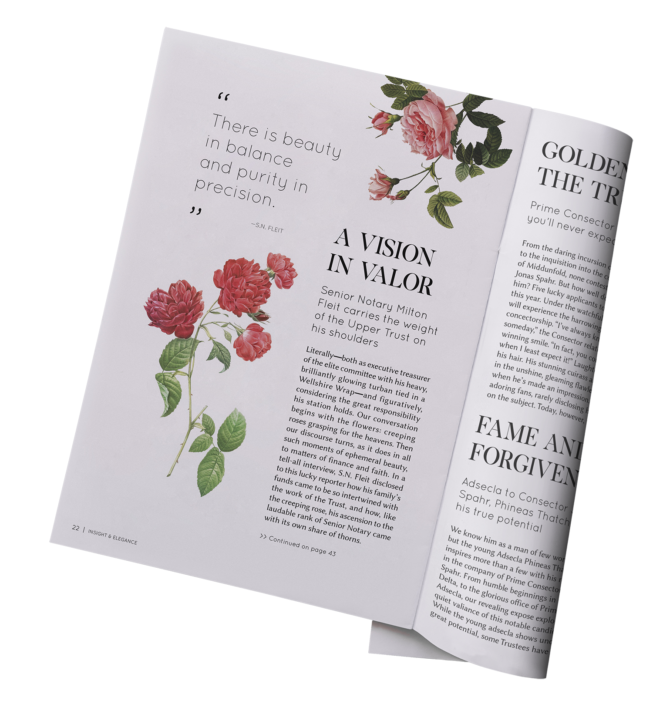
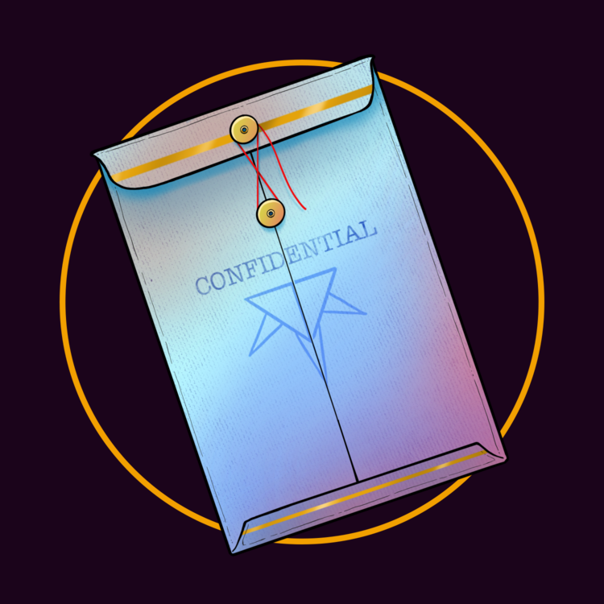

S1E01: UNRISE
Narrator 1: It doesn’t occur to any of these people that the moon is about to fall out of the sky.
Narrator 2: And let’s be honest here: why WOULD it? They’re distracted. There’s a LOT going on. And moons, obviously, don’t usually do anything so dramatic.
Narrator 3: The pandemonium we’re seeing in the streets right now is totally unrelated. Word of the big sale got out, hmm, thirty minutes ago... and everyone in town is jockeying to get inside the post office and cash in. This riot is ready to strike it rich.
1: Except for the opalescent man, who already has.
2: In all the mayhem, no one’s even noticing the guy in jagged, glassy armor dragging a body out of a side-street door, blood fresh and dripping from his spiked fist.
3: No one sees his panic or determination. No one notices... except the woman fighting her way against the current of the mob, leading a girl with her. SHE sees it, stops, and IMMEDIATELY makes an escape in the opposite direction, pulling the protesting girl with her.
2: The armored man looks up from the body at his feet. He ALMOST sees her go.
1: He WOULD have seen her... if he, the woman, the opalescent man, and everyone else hadn’t just then looked straight up into the sky, terrified by the sound a moon makes... when it FALLS.
[A screaming crowd. A seismic, splintering rumble and boom from the moon above.]
[Main theme]
1: There’s nothing this far out in the desert. Nothing... except for one small cabin of sorts. It’s a sort of odd, handmade patchwork hovel. Home to just one person.
2: The person who lives here doesn’t really care about design or coziness. She cares about utility and function. Currently she is trapped in her cabin by a horrible monster.
[A monstrous chittering sound echoes in the desert.]
3: More on that in a moment. She’s not alone in the cabin; her dog companion is here as well.
2: The dog’s name isn’t ‘Companion.’
3: No, it’s ‘Landlord’.
1: The dog’s name is Landlord. You heard that right.
2: Now that we’re clear on that point!
3: He’s sort of a hound. Sort of sitting there on his cushion, under the table. He lets out a little, “Bllughh”
2: He’s really old. He’s kind of tired of this shit, to be honest. Lark (that’s the woman’s name), she’s a kind of rangey, leathery, hawk-eyed Clint Eastwood-type. If Clint Eastwood had dreadlocks and was a woman. So, Lark is putting a blindfold on Landlord. It’s not the first time this has happened, and he puts up with it with this kind of resigned tiredness.
3: It’s a safety precaution! It’s in his best interests.
1: He’s been used as bait, he’s been used as a guard dog. He’s even been used from time to time, though rarely, as a friend. Lark doesn’t really have many friends. She would laugh at you if you suggested that Landlord was her friend. Landlord is her dog. He’s not even HER dog; he’s *A* dog, he lives in the hut, she lives in the hut. They’re both here now, in the dark, both in danger.
2: And there’s a blinding outside.
[Chittering sound repeats, but closer.]
3: Off in the distance, in the strange darkness that has TEXTURE to it, outside the window, there’s a creature: a large grey (possibly?) beast, lumbering slowly across the plain beyond her house.
2: It has vaguely the form of a horse? Or maybe a really large dog like a great dane or something, but with strange gripping claws on the ends of its legs, not hooves or paws. And its skin hangs loosely off of its bones. It really seems rather emaciated, but it has this abundance of loose, pebbly, DISGUSting skin, like elephant skin hanging off of a dying horse. It’s gross, and its HEAD... its head is even worse.
3: Up a long, sinuous neck that reaches up to peer above the desert is a blooming morning-glory-like mantle. A hooded frill. Flashes of light emit from tiny little barbs that emerge, that jut out from the center of this.
1: The lights spackle the desert terrain, projecting into the dark, reflecting off of metal edges, sheet-metal contours on Lark’s shed-shack-house-hut.
3: ‘It’s on the wrong side of the house,’ she thinks. ‘Shit.’
1: She has a lantern in one hand: a hooded lantern with a trigger-activated lever. She’s rigged it up herself. It has a tiny little spring attached. She can pop this hood open and shut. She is currently crouched down, back to the wall, underneath one of the very few windows that she has in her hut. She is inside, waiting for the right moment. Realizing that the blinding is in the wrong place, carefully keeping her eyes shut to prevent any reflection... extends an arm, raises the lantern, clicks the lantern open and shut—creating a flash, attracting the blinding’s attention.
2: The blinding seems to have become fixated on the glass of the window pane on this side of her house: the window that she is currently crouching under. She should have prepared for that, of course, but, well, this is the situation now and she’s going to have to deal with it.
1: She reaches out, giving Landlord a reassuring pat. Reassuring him. She’s fine. She doesn’t care. She’s done this before.
3: In fact, she’s SO practiced at having hunted this particular variety of beast, she has prepared a lavish banquet for it… in the front yard. A cow carcass, lying there, awaiting her prey.
1: A “cow” is a good word for it. It may not be a cow in the strictest sense. It is SIMILAR to a cow. It has things in common with a cow.
3: Eyes, principally, being the most important in this case.
2: The eyes are… dead. But wide open. Still staring. And most importantly of all, still glassy and reflective.
1: She has attempted to make it extra-visible by carving its eyelids off.
2: If only the blinding could SEE them!
3: Anyway, back to the case of getting it around to the other side of the house: Lark, casting her eyes about the interior of her cabin, sees the small table that Landlord is currently crouched beneath. The few belongings that she has meticulously gathered over the course of her years here (small survival materials, and so on), and identifies a shelf of some drying glassware hanging outside of the window on her front stoop.
1: The blinding’s lights — sort of a visual echolocation (‘Photolocation’ maybe is the right term? Maybe we’ll get lucky and that will be the right term) — its lights are beaming through the window just above her head, reflecting around in the interior of her cabin. It is pacing closer and closer through the darkness across the desert, zeroing in on her position… and NOW is her chance. Its lights are through the window. It is looking INSIDE of her cabin, and she flashes her lantern across the space — not out the window — across the space at the glassware, which glows.
2: The blinding moves with … BLINDING speed.
3: She instantly feels a change in the blinding’s anatomy: its musculature going rigid. There’s a sort of a small tremor that passes in the intervening space between the blinding and her house, and as its footpads come ever closer and begins to skirt ‘round the cabin, she knows that her efforts have paid off.
1: She also knows that she’s running out of time. The darkness inside her hut… let’s make this very clear: the darkness is outside because it’s dark. The darkness is also INSIDE, and we don’t mean that in the sense that it is dark in both places. We mean that LITERALLY the darkness is INSIDE of her hut. The darkness in this desert.... is not like any darkness you’ve ever known. It’s more of a FOG. It is a physical presence. It is DARK MATTER hanging in the air, and this dark presence — this fog — is starting to retreat. It is soon to be DAY, and the moment it IS, the blinding is gone. She will have lost it. So there’s no time to waste. She is on the move across the hut, heading to the front door.
2: She slips through it silently. She’s moving with precision but speed. There’s not a moment to lose. She’s pulling something out of her pocket. It’s a glove. A RED glove. There’s only one like it, anywhere.
3: The blinding’s horrible lithe form towers over the corpse of the cow in the yard. Its large mantle-frill currently open. The glowing pneumatocysts of its internal sensory organs extended. A light flashes from the tip of one and—reflecting off of the glassy eye of the cow—that same pneumatocyst plunges in through the open ocular orbit of the beast.
[Terrible squishy insertion.]
2: Mmmm! There’s nothing quite like the sound of a blinding’s barbs plunging into a dead creature’s eyeballs.
3: Or not necessarily even dead.
1: Unfortunately, usually NOT dead.
2: Lark is still approaching the blinding from behind. Walking up to it, calm as you please, pulling on this red glove onto her left hand. It’s a strange glove. Definitely hand-made. Hand-stitched seams running along it. The blinding eats very quickly. The cow is already starting to look a bit dried-out, a bit desiccated, and the blinding’s frill is wide open. Since Lark is behind it, she can see through the translucent flesh. The blue-white glimmers of its bio-luminescence.
3: Flashing with PLEASURE.
2: She reaches the creature’s flank, reaches out, and strokes it, as casually as if she were to give her dog a pat.
3: Instantly, she can feel the skin of the creature attempt to seize up under her hand. Normally, a blinding, if confronted with violence, will react... its skin hardening into a carapace-like armor, protecting itself. This causes the creature to not be worth quite as much once it has been processed.
2: It also makes it near-impossible to take down by more conventional means, in case you were wondering why Lark simply didn’t charge up to it with a shotgun, which would be her normal way of doing things.
1: No, she hunts them with her glove. Touching them gently... and putting them to sleep.
2: Already, the blinding’s muscles are contracting. It retracts its barbs from its meal and attempts to turn its head around to attack, but its reflexes are becoming sluggish already.
1: Her red glove is still firmly in contact with its haunch. The muscles around that point of contact begin to seizure and tremor gently.
2: The creature’s back legs buckle underneath it. She continues to walk forward, stroking her gloved hand up the blinding’s flank. The front legs fall.
3: The glowing tips of the barbs are flashing in a sort of chaotic, disorderly pattern, slowly dimming.
2: And they begin to wink out one by one, going dull.
1: Within minutes, the blinding is dead. And Lark, wasting no time, cuts it open.
2: She’s mostly interested in the skin. The meat of a blinding is no good to anyone. It’s disgusting.
1: It’s good to a few people, but she doesn’t care about those people.
2: No, it’s the SKIN with its remarkable transforming and protective qualities that is particularly valuable. But only if it is freshly skinned from a recently dead blinding.
1: Landlord comes wandering out of the door of the house, having somehow extricated himself from his blindfold. That’s bad. If he’d done that earlier, that might have been a severe problem. Lark’s heart does a tiny somersault. Not that… no. She doesn’t care about the dog. It’s... whatever. (She does. She actually DOES. She has a very slightly soft heart. She would never tell you any of this, which is why we are telling you.) Landlord, coming forward, is delighted to find a pile of blinding viscera and begins snuffling in it joyously.
2: He is one of the things to which a blinding’s meat is not totally disgusting. Lark wrinkles her nose at the sight and continues with her work.
1: As Lark works busily with her knife, the grey darkness of the night thins slightly, going hazy, and then abruptly is gone. Instant, brilliant daylight.
[The quiet thrum of the desert night whooshes away, replaced suddenly by an active and lively desert ambience brimming with insect and animal life. Lark’s theme music begins to play, faintly at first, but slowly growing in intensity.]
3: This dawn is like arriving in Oz. Red rocks. Green succulents. A bright, vibrant desert. A vast curtain of obsidian fog slides back, exposing the landscape.
1: A sheer wall of darkness, retracting laterally, spanning from land to sky, horizon to horizon, like an opaque ocean of ink draining sideways, translating smoothly, its face phasing through plants, rocks, Lark’s cabin. Through Lark.
2: There it goes. The NIGHT. On the move. Gliding silently away.
1: Lark doesn’t even notice; she’s busy carving up a monster.
3: This happens every day.
2: She’s not the sort to appreciate Unrise and Unset everyday. From the outside of the darkness, it has a definite reflective edge. You can’t see through it. It’s like obsidian. Utterly impenetrable, gliding away from her over this incredible landscape dotted with enormous succulent plants (the size of trees) and huge redstone formations.
1: Tiny desert critters—lizards—slither away. A couple of odd birds. A few mirrorhawks, concerned by the sudden bright light, escaping back into the darkness that they prefer.
2: There is no sun. The SKY itself is the source of luminance: a bright, pure, dazzling white.
3: The curtain of darkness stretching away across the landscape suddenly passes over a tremendous hill. A glorious summit.
2: This huge red hill—a mountain, almost—dominates the horizon.
3: And a rough path trails off from Lark’s cabin, connecting with a distant road. A road snaking toward the hill.
2: She’s already loading up the blinding’s carcass onto her… vehicle, we’ll call it for now.
1: It’s a sort of motorcycle.
2: A SORT-of motorcycle.
1: Sort of a MONO-cycle: it has one large wheel. It has a small sidecar. She’s throwing the grim heap of blinding flesh into the sidecar, a gruesome passenger. Gesturing, she attempts to send Landlord back inside, he doesn’t notice. Ge doesn’t care, so she doesn’t care either, and—firing up her cycle—wheels it out from an awning attached to her hut. She wheels off, cruising down the main road. Her destination: the craggy mountain in the distance peppered by buildings. There’s a town there. That’s where she will sell the skin. And on high, above the mountain, above Lark on her cycle, there hovers—oppressively—THE MOON.

S1E02: SECRETS
Narrator 1: In the desert, there is a hill. Almost a mountain. Officially a hill. And on the hill there is a town.
Narrator 2: A chaotic assembly of clapboard houses and adobe homes clustered around this spindly metal tower with a cable stretching off into the sky. A single main road winding along the spine of the mountain, forming the nucleus of the town where the concentration is highest. People milling about their daily business. A particular man weaving his way through them.
Narrator 3: The man is deft, adroit, sharp-looking. Bowler hat on top of his head, briefcase under an arm, shopping bag in his other hand.
1: He is arriving now at his destination, his purpose clear in his mind. He has one task, and one task only:
2: BLACKMAIL.
[Main theme]
1: This man is Atticus Concord. Dandy sort of fellow. As we mentioned: the bowler hat, the suit, the briefcase, the shopping bag. (The shopping bag is unrelated; he was out getting something for his sister, who he’ll be visiting later.) He’s a sharp-looking guy. There’s a slight edge of creepiness to him. Clearly you already find him creepy because you know his mission now.
3: As he proceeds down the street, the other residents of Stationary Hill cast their eyes his way. He sort of sticks out a little bit like a sore thumb, but a sore thumb ... in a suit. Let’s just be clear about that.
2: Like a REALLY attractive sore thumb.
1: Yeah, he has that self-assured, confident, vaguely theatrical, onstage sort-of quality. There is a slight edge to him, a slight creepiness. There is something not entirely quite RIGHT. There is more going on than meets the eye, and you would sense that if you talked to him. He’s not talking to anyone now; he’s making a beeline for the front door of his destination: the Black Candle Cabaret.
2: Ah, what a sight it is amongst these other dusty and sort of worn-down buildings in Stationary Hill. This place has class. At least, it’s TRYING to have class.
1: It HAS class. It actually does. Fake it til you make it, right? This place has done that precisely and has come a long way. It is today, here in the bright unlight of Stationary Hill, a cool and mysterious venue amongst all these other ramshackle buildings. The whole building is mostly (the facade, at least) painted a kind of glossy black.
2: In many ways it imitates the surface of the Fold when you’re looking at it from the Un.
1: Atticus Concord is not impressed. He’s not here to be impressed. He is here to do business, and he opens the door and goes inside.
2: It’s not open right now but the door was unlocked, and he lets himself in as though he had every right in the world to be there. Inside is such a contrast to the dusty, red, blazing street outside. Immediately he’s engulfed in velvety, cocooning darkness.
[The distant sounds of a bustling street are replaced with the dulcet murmur of the Cabaret interior.]
3: An intimate darkness. Curtains, as though the ribs of a giant whale—
2: A very plush, luxurious, whale that had been outfitted by a top-of-the-line interior designer at some point—
1: So we’re inside of a whale, sort of. The rafters are a kind of luscious backbone, a kind of strange velvet maw going back—drapes separating regions of seating. There are small tables. This is a nice, upscale supper club. The tables have little candles on them. Where else are you gonna find that in Stationary Hill? (There are actually about two other places, but this is the nightclub, which makes it automatically better.)
2: It’s black and navy blue and royal purple, dotted with glimmering little lanterns hung up in the curtains. Atticus Concord makes his way down the central aisle towards the bar.
1: There’s a sort of receptionist fellow, a Maitre D’. He has no clear job title. He doesn’t even know what his job is, he just works here, and he talks to people and he, approaching Atticus, says “Sir, we’re not actually... open.”
3 (as Atticus Concord): “I have an appointment, as a matter of fact,” Atticus Concord says, “I’m here to see a Mr. Weepe and I believe it is ... Sas-KEY-ya?”
1 (as the Maitre D’): “Saskia, yes.”
3 (Concord): “Yes, they should be expecting me.”
1 (Maitre D’): “Of course. Your name?”
3 (Concord): “Concord. Atticus Concord. A pleasure to make your acquaintance.”
1 (Maitre D’): “Mr. Concord, why don’t you have a seat at the bar. I will just go check. Not that I don’t trust you. It’s just that, you know, we are not open and we weren’t... I wasn’t informed.”
2: He doesn’t trust him.
1: This fellow does not like a man in a suit even though he sees many every single day. He hates a lot of people. He is a hateful and angry person. (He has a drug problem. We’ll get into—we’re actually NOT going to get into that, you know... well, let’s not even talk about that. Let’s just go back to Concord who is more than happy to sidle over to the bar and occupy himself while this young bastard wanders off to verify his meeting).
2: The bar occupies the very center of the Black Candle Cabaret, one side facing the front door, the other side facing the stage, which you can’t see from here 3: And Concord is, in fact, not the only person to situate himself at the bar. Not only is there the bartender opposite him—a stately, statuesque sort of man—but also a very young girl, sketching, just there, sitting at the bar.
1: There is no drinking age in Stationary Hill. If there were one, she would surely not meet it. WHY she’s hanging out here, Concord does not know. Concord does not care. He, addressing the bartender, orders a drink. Looking from the girl to the bartender, Concord perceives (being a very perceptive fellow) they must be related. The bartender approaches.
3 (as the bartender): “Can I fix you something to drink?”
1 (Concord): “Oh, don’t mind if I do! I would say... uh... something a little bit on the light side... a little bit refreshing... hot out today, y’know. Just, I dunno... you have any kind of...something with tonic, perhaps?”
2 (Bartender) :”Mm-hmm [affirmative]. Comin’ right up,” the Bartender answers amiably.
1 (Concord): “Whatever you want. I defer to your professional judgment.”
2: The bartender invents something for him. Mixes up a light, honey-colored refreshment of some kind, bubbling with tonic water. Slides it across the counter to him.
1 (Bartender): “It’s on the house. I overheard you’re here to meet with Mr. Weepe and Saskia,” the bartender says.
3 (Concord): “Yes that’s correct. I’m very excited to make their acquaintance. We’ve heard rather a lot about them where I’m from.”
2 (Bartender): “Oh, and where’s that?”
1 (Concord): “Well, you know, my good man, I’m not really at liberty to say,” Concord says.
2 (Bartender): “Ah, say no more,” the bartender says with an understanding nod. “A man of mystery. I get it.”
3: Atticus Concord, after all, has a theory or two about this place... and locations where people are from is part of that.
1: The host, descending from the balcony above the bar, beckons to Mr. Concord. “You’re welcome to come up, sir, unless you’d rather finish your drink...?”
3 (Concord): “Oh, not at all!”
1 (Maitre D’): “You can bring it up if you want.”
3 (Concord): “Let’s get down to business. Or... UP!”
1 (Maitre D’): “Heh. Yeah, har har. [Unimpressed, bored laughter.] Right this way...”
3: Concord follows the host up the spiral staircase flanking the bar.
1: The bartender watches him go. The girl at the bar looks up and watches him briefly before returning to her sketch. She’s drawing pictures of bottles. Concord follows the host up the stairs—the stairs wrapping around the back of the bar overlooks the stage in the furthest interior of the Cabaret: a small stage.
2: Atticus notices that the design of the Cabaret mimics that of much fancier establishments on more populated islets. Midst, on the other hand, hasn’t been around that long at all, and Stationary Hill is the only city of note on its surface. This might be the only nightclub on the entire islet.
1: (it is! Literally. Just for your information.)
2: On the darkened balcony, there is a single green glass lamp lit up over one table. Two people are sitting there. They’re only silhouettes to Atticus right now.
3: The table, as he can see, is littered with documents: pieces of paper, ledgers, books, pens, pencils... the detritus of business.
1: The other tables up here on the balcony? Pristine. Untouched, all set for tonight’s entertainment. But this one is an anomaly: a table turned into an office, apparently. Concord, following the host, begins to approach... but a figure stands up and comes to meet him.
2: He’s treated to a graceful, curvaceous silhouette approaching him, and a dulcet voice greets him. “Ah, Mr. Atticus Concord, I assume. Saskia.” She extends her hand.
3 (Concord): “The pleasure is mine,” Atticus says, removing his hat. He bows slightly. Takes her hand.
2: Two huge glossy black dogs lounging on a large tuffet across the balcony raised their heads to watch him. Saskia is a beautiful woman, but not quite ‘there’—she doesn’t quite latch on to him with a vivid gaze the way Atticus is accustomed to so many of the women with whom he interacts. Saskia has a way of not quite paying attention to YOU, specifically, because she’s paying attention to EVERYTHING... all at once. Her eyes are half-lidded, sort of lazy. Kind of distracted. She’s one of those women who calls you ‘dear’ and ‘honey’ and it just seems all perfectly natural.
1: Concord is actually taken a little bit aback; he was not prepared to find her so immediately and oddly... likable? He’s prepared to blackmail her, and yet feels almost, just briefly, GUILTY? Nah. Definitely not.
2 (as Saskia): “Please, come sit down,” she invites him.
1: She leads Concord through the nest of tables over to her place of business: the one table occupied here on the balcony overlooking the stage, covered in papers, where her companion sits, and... her companion... is a WEIRD-looking guy.
3: Let’s pause here for a moment.
[Moc Weepe’s theme music—a lilting, slightly off-kilter waltz—begins to play.]
2: So this is Moc Weepe. He is Saskia’s business partner. And, um... he’s a very indescribable sort of man, physically.
1: We are going to make every effort to describe him to you because he is one of the primary protagonists of this story. You have already met at least one other. We will not tell you whom.
2: It was Lark.
1 (laughing): We will tell you whom! Now you know!
2: So, this man, if we were going to be lazy about it—if we were going to use a kind of shorthand, we might say that he was completely opaque white like a marble statue. Bald. Featureless, pupil-less eyes. No variation at all. But that’s not quite true: it’s more like light doesn’t interact with him properly.
1: Light simply does not know what to DO with him, and this has the effect of making his entire body—every surface of his body: the interior of his mouth, his eyes, the skin beneath his fingernails—appear a strange, opalescent ivory. And regarding all of this, Atticus Concorde feels... well, actually, not much of anything. Because Atticus Concorde is a cool guy and also a professional criminal.
2: He does not evidence any surprise. What a champ.
3 (Concord): “Mr. Weepe, I presume.” Atticus Concorde extends a hand.
1: And Mr. Weepe, poring over his ledgers, filling in some figures, removing a cigarette—a cigar?—from his mouth, tapping it in the ashtray, extends a spidery hand toward Concord, not making eye contact, draping it into Concord’s embrace... barely making purchase on his hand. Simply says: “Mm-hmm.” [Affirmative.]
2: Saskia has already re-seated herself and inclines her head for Atticus to do the same at the third chair there at the table.
1 (as Moc Weepe): “I’ve almost finished with my paperwork, Mr. Concord. Just have a seat. I’ll be with the both of you in just one moment.”
2 (Saskia): “Yes, you have to excuse the mess. We were just doing a bit of bookkeeping before you arrived.”
1 (Weepe): “I was doing a bit of bookkeeping. Saskia was merely keeping me company,” Mr. Weepe says, still not paying attention, scribbling some conclusion to his math—to his arithmetic.
2 (Saskia): “Oh, that’s not quite true, Weepe: I was going over the choreography for tonight, you know that.
1: He looks up, his strange, blank eyes regarding her.
2 (Saskia): “Well, just because I don’t have a piece of paper in front of me...”
1: Concord is watching this funky dynamic. He puts his briefcase down beside him. He puts his shopping bag down on the other side of the chair.
2: Moc Weepe’s eyes light up. Well, they do NOTHING, specifically. It’s apparent that Moc Weepe is looking at the shopping bag.
1 (Weepe): “Oh!” he says. “Mr. Concord, you really shouldn’t have!” And, gliding his bizarre spider grip around, makes purchase upon the shopping bag. And, bringing it up onto the table...
2: ...just plucks it out of Atticus’s possession.
3: Not missing a beat, Concord says “Of course! A gift. Thank you so much for your time. I tremendously appreciate you seeing me on such short notice. Please: a gesture of my esteem.”
1 (Weepe): “You’re a really nice guy, Concord!” Weepe says, dumping the contents of the bag unceremoniously and somewhat roughly onto the table. (The contents, of course, being a gift NOT intended for him but for Concord’s sister. Mr. Weepe doesn’t know, doesn’t care.)
2: Atticus’s palms DID start to sweat for just a moment as he was considering whether this gift that he purchased for his sister would make an appropriate offering for this very delicate business/blackmail meeting.
1: It is some kind of small, absurd, hand-carved decorative nutcracker, which—let’s be honest—as a gift for Concord’s sister, is pretty shitty. Mr. Weepe thinks it’s terrific, though. “Ohhh!” he gasps. “This is a really top-notch item, Concord! I don’t know... how did you know that I really like things like this?”
2 (Saskia): “Is this really a nut cracker?”
1 (Weepe): “Concord, please tell us! I must know,” Mr. Weepe says, gazing avidly with his luminous owl eyes across the table.
2: Both of them seem breathless with anticipation for Atticus Concord’s answer.
3 (Concord): “Absolutely! Do you have any nuts? You could give it a go!”
1 (Weepe): “I don’t know! We—y’know, we used to have all those left over from the, um, what was it? The VIP... the...”
2 (Saskia): “Yeah, let’s call down.”
1 (Weepe): “The fundraising thing.”
2 (Saskia): “Sherman?”
1: Saskia has leaned over the railing to call down to the bar below.
2 (Saskia): “Sherman, have you got any of those mixed nuts left from the… from the event... uh, the night before last?”
1: The voice comes up from below: [As Sherman, bartender:] “Uhhh... no, afraid not, I think we, um... I think... didn’t...” (He’s about to say ‘Mr. Weepe,’ but he doesn’t.) “Weren’t they all eaten?” Mr. Weepe ate them all.
2: Mr. Weepe KNOWS he ate them.
1: This is all part of a master plan. [As the bartender:] “Yeah, there... no, I just checked. There’s, uh... there’s no more in the cabinet here…”
1 (Weepe): “Well, whadda we pay you for, Sherman? Be creative. Bring me something else crunchy, y’know? ICE, uh... CUBES or something!”
2: There’s a moment of silence. [As the bartender:] “Yes, sir! Ice cubes comin’ right up.”
1 (Weepe): “Hey, thanks! At least I can crunch SOME damn thing with this! Wouldn’t want your gift to go to WASTE, Concord, now, would we?” Mr. Weepe says, oscillating the cracker open and shut. “This is pretty good! Pretty smooth action! Anyway, I don’t want to get too distracted here with this, though I really am very excited. It’s not every day I get an unsolicited present from some nice fella I’ve only just met!”
3 (Concord): “I’m glad you’re excited about it! And I must say, thank you again for your time. I truly appreciate you taking a moment out of your busy schedules to have a quick chat with me.”
2 (Saskia): “Well, we appreciate the letter of introduction you’ve sent along ahead.”
1 (Weepe): “Yeah, that was really QUITE informative, Mr. Concord. I think we would’ve waste a lotta time with you tryin’ to explain to us WHY you’re here, but... I think I got a clear picture. So why don’t you just lay it on us, all right? Let’s not waste any time. Tell us the story: why are you here today?”
3 (Concord): “Absolutely! Well, as someone involved in the human resources, uh... industry... I work with a number of different organizations to help, uh, facilitate employees and, actually, transfer of talent between different institutions.”
1 (Weepe): “Mmmm, yep, I think I grasped as much from your letter Mr. Concord.” Mr. Weepe is puffing on a cigarette and also having a drink of something with his other hand simultaneously while also brandishing the nutcracker.
2: The girl from the bar comes up the stairs at this point with a basket of ice cubes. She’s got an incredulous look on her face. Edges towards the table. Puts the ice cubes down and looks at Mr. Weepe.
1 (Weepe): “Hey, yeah, that’s just the thing. Thanks a bunch. Seeya later.” Mr. Weepe waves her off. And he begins forthwith to crunch ice cubes. [Ice cube crunching and cracking sounds.] They shatter across the tables, spewing out over the floor.
2: He seems supremely satisfied.
1: He is not distracted. He continues to listen with attention to Concord’s story.
3 (Concord): “The Black Candle Cabaret, of all locations on Midst, has a... a bit of a REPUTATION. A very POSITIVE one, I might add, but...”
1 (Weepe): “Really glad to hear that, Concord. Comin’ from you…”
2 (Saskia): “Yes, really...”
1 (Weepe): “...that’s PRETTY NICE.”
1 (Concord): “And principally because of your talent.”
2 (Saskia): “Yes, well, we do take pride in our hiring decisions.”
3 (Concord): “I feel as though I would be able to help represent your interests, both in acquiring additional talent, and perhaps moving some of those you may... uh... currently employ. I’m not sure if that’s something that you’re looking for... the current state of your operation here... but I just wanted to present that as an option.”
1 (Weepe): “Well, you know, Concord, as a man in your line of work, I’m sure it’s very clear to you that any place of business... is only...” he looks at Saskia. Looks back to Concord. “...as good as the people it employs. And so, therefore, here at the Black Candle Cabaret, Saskia and I are very interested in employing only the best of the best. And that’s why we often turn to employment agencies to help us... find the right CANDIDATES... if you know what I mean...”
2 (Saskia): “Yes, there are a few employment agencies that we have established relationships with.”
[Music and SFX suddenly freeze. A hanging silence.]
1: Okay. Let’s step back for just one moment. This is NOT a conversation about employment agencies. This is not even really a conversation about hiring. This is a conversation about something entirely more secretive AND illegal, and ALL of them—here at this table right now— KNOW this.
2: Concord is trying to learn what he needs to know to blackmail them later on. He’s just maneuvering right now. The blackmail—that’s not taking place yet.
1: They carry on, their veiled dialogue proceeding jauntily, Mr. Weepe cracking ice cube after ice cube.
2: Saskia smiling lazily, indulgently, never meeting anyone’s eye.
1: Concord lays out his case: he represents an organization with quite a few excellent candidates who would be PRIME for placement here at the Black Candle Cabaret. The Black Candle Cabaret would, theoretically, if all conditions are met, be interested in employing them. Mr. Weepe takes all this in, smoking his cigarette, sipping his cognac, cracking the ice cubes. Saskia listens dreamily, staring off into space as Concord lays out his particulars. And then, putting the capstone on his delivery, presents the paperwork.
3 (Concord): “I’ve taken the liberty of drawing up a few pieces of general information outlining what I have in mind. Here.” He produces copies. One for Saskia. One for Weepe.
1 (Weepe): “Ohhh, be still my HEART. [Cracking ice cubes excitedly.] First you bring me presents, then you butter me up with a lot of nice things about my place, and now you brought me legal documents? This guy! This guy’s got a special PLACE in my HEART!”
2: Saskia takes both the copies of the document and slides them across the table, positioning one in front of her and one in front of Mr. Weepe, who doesn’t look at it.
1 (Weepe): “If there’s ANYTHING I like in life, Mr. Concord...” Weepe breathes, almost seductively (it’s a little spooky), “...it’s an AIRTIGHT CONTRACT of BUSINESS!”
[Ice cubes shattering.]
3 (Concord): “I think we’ll get to be good friends, you and I!”
1 (Weepe): “Oh, yes, Mr. Concord, I don’t even think... I think we’ve jump straight to the Best Buddies stage.” Ice cubes go shattering across the floor. He’s almost burned through all of them. “But you know what? Let’s not get too far ahead of ourselves, my good buddy. We’re gonna have to read these papers somewhat thoroughly…”
3 (Concord): “Well, I’ll be staying in Stationary Hill with my sister for a few days. Um, if you would like, I could return at some point for a further conversation on this subject?”
2 (Saskia): “I think that would be a wonderful idea,” says Saskia. “There’s a show tonight, in fact, if you come back during business hours, that I think you would enjoy very much.”
1 (Weepe): “Yeah, that’s pretty nice. There’ll be some... there’s a lotta music... singing... you might even like the... later on, there’re a couple of women... maybe take off some of their clothes. It IS a cabaret. That kind of DOES happen from time to time, but you... it’s been happening a lot LESS lately.” Mr. Weepe, regarding Saskia: “...and I think it’s been a little bit detrimental to our business practice. We try to bill ourselves, Concord, as a sophisticated establishment. Which means a little bit less nudity, right? The nudity is not inherently a classy activity, but... anytime we try to tone it down, fewer people show up, our income is reduced... I have all these problems with the papers...:
2 (Saskia): “It’s a delicate balance.”
1 (Weepe): “It can’t really be a Cabaret without the cabaret, but we still have some of that. So! You come by tonight. There will be a long line because of the nudity, right? Maybe you’re gonna be able to get in! Maybe you’re not! You’re not a VIP yet. You’re no kind of business partner... so can’t give you any sort of preferential treatment. You can’t come in early. Yeah, there’s no side door. Gonna have to come in with everybody else.”
2 (Saskia): “Yes, tonight would not be a good opportunity for another business discussion, you understand, but I think it’s a good idea if you come around as often as you can and see how things work around here. If you’re serious about a partnership.”
1 (Weepe): “You gonna ring up business with us, Mr. Concord,” Mr Weepe says, again giving Atticus Concord his strange, full, opaque attention, “you’re gonna have to learn to work on our schedule. If we were comin’ to you, we would wait for you. But since you’re comin’ to us, you’re gonna wait for US. And I just wanna be clear about one thing, Mr. Concord...” Mr. Weepe’s hand comes spidering across the table, taking Concord’s. “That, of course... if you’re fucking with us...”
[Tense silence.]
1 (Weepe): “... we’re gonna fuckin’ kill you.”
[Weepe’s theme music returns, now more ominous than before. Weepe slowly and threateningly cracks ice cubes.]
2: Saskia blinks dreamily.
1 (Weepe): “Just to be VERY clear. We’re on the same page. Lotta transparency. Mutually beneficial relationship. Right? That’s what this is? That’s why you bring me gifts? You butter me up? You’ve even brought the papers, so I have no concerns.”
1 (Concord): “I think we have an understanding.”
[Satisfied ice-cube cracking with the nutcracker.]
1 (Weepe): “Damn straight we do, Mr. Concord. And that being said, we got all this vacuum cleaning to do and, uh, somebody really made a mess up here. And I think you’ve said your piece.”
2 (Saskia): “Yes, sorry to shoo you along, but we do have to get ready for that show I mentioned.”
3 (Concord): “I look forward to dinner, then. Until later.” Concord stands up, dons his hat, and shows himself back down the stairs.
1 (Weepe): “And thanks again for the nutcracker. It’s pretty cool,” Mr. Weepe hollers after him, waving.
2 (Saskia): “Hope to see you again soon.”
[Weepe’s original waltz theme plays.]
1: Concord departs presently, wasting no time. He has precisely what he needs. He HAS the answer he came looking for. He’s gone, out into the street, making his way somewhere to find a replacement gift for his sister. And inside the Cabaret, Mr. Weepe, Saskia... regard each other. “Well,” Mr. Weepe says. “Guy knows how to ask the right questions.”
2 (Saskia): “Gonna have to keep an eye on that one, I think.”
1 (Weepe): “Well, he’ll be back. I think he’s gonna be hangin’ around quite a bit. We’re gonna be building a pretty nice relationship. And, you know, if he keeps bringing me all this shit...” Mr. Weepe throws the nutcracker on the table. “...I think we’re gonna get along just FINE.”
2 (Saskia): “I hope his contacts are everything he says they are.”
1 (Weepe): “Me too. I’d hate to rub him out. Well, why don’t you go set everything up?”
2 (Saskia): “Yes, it’s about time. I’ll leave you to it.”
1: She whispers off down the stairs and Mr. Weepe, on the balcony by himself, regards the contract, tears up the contract, takes a puff of his cigarette, picks up the nutcracker, and cracks the last ice cube.
[The final ice cube shatters.]
S1E03: MICA
[Ambience: ethereal wind, shimmering crystal, and glimmering void.]
Narrator 1: Clouds above. Clouds below. A twinkling expanse as far as the eye can see—the air glimmering in all directions with fine crystal particulates. Nothing and no one.
Narrator 2: The light blinding and iridescent, almost, glowing from each and every chunk of this mica—this white, glassy rock that hangs, weightless, in the air.
Narrator 3: In much the same way that prisms refract light, twinkling sparkles of this omnipresent glow dance across the cloudscape.
1: There are small crystals and large crystals, and GIGANTIC ones, all floating in the breeze, wafting slowly through the air. And just there, emerging now from a cloud bank, is one particularly colossal sharp, brilliant berg of this glassy substance.
2: This is not a hospitable region for ships, and this berg in particular looks murderous—like it’s taken down quite a few ships in its time. In fact, there’s a piece of wreckage stuck to it right now, pinned against the bottom of it like a helium balloon that’s trapped against the ceiling.
3: In this case, it’s more accurate to imagine a cruise ship, upside down, trapped at the bottom of this berg. Oh, it has been [stuck here] for years.
1: Belly-up. Buoyant. Pressing against the underside of the crystalline formation, having risen here and stopped.
2: Porthole after empty porthole reflecting the gleaming white light outside.
1: And through one porthole, a little face looking out.
3: The face of a boy. The face... of a hostage.
[Theme music]
1: Here inside one of the topsy-turvy destroyed promenades—upper decks—of this cruise liner, there is a man. And a boy.
2: The boy’s hands are bound in front of him. He looks forlornly out one of the windows, not having much else to do at the moment. The man is distracted, pacing back and forth along the length of the promenade—the ballroom—muttering under his breath, fiddling with something in his hands, feverishly.
3: Both of these figures are disheveled. Unkempt. Dirty.
2: Smelly, if we’re being honest.
1: They sit here in the midst of all this wreckage. Tables turned upside-down. Glassware. Broken plates. Shattered shipboard paraphernalia all over the floor, which, here in this case, is actually the promenade’s ceiling.
2: The man (Ginsberg is his name) looks to be in somewhat rougher shape than the boy, although at least he’s not bound. But he has a bandage wrapped around his head... some dirty, browned blood seeping through it. Some head wound that hadn’t been properly tended to. Recent.
1: And he’s got an earpiece on. He’s shouldering this little ratty headphones-like thing. He is twizzling the dials on his contraption—this teletheric transducer in his hand. Bats it on the side, trying to get a clearer signal, going over closer to the window, shoving the boy out of the way. “Get down,” he says. “Someone might SEE you.” (That of course, is the point. That’s why the boy was in the window in the first place.)
2: He gulps (the boy does) and attempts bravely: “Someone like the Consector, you mean? They’ll come for me, you know. Consectors ALWAYS win.”
1: Ginsberg is going to say something sarcastic. He knows damn well the Consectors do NOT always win... but he is interrupted—distracted—by a sudden signal coming through his teletheric: a booming, bombastic voice.
[Teletheric signal whines, feeds back, and resolves into garbled radio vocals.]
3 (as an as-yet unidentified on-air announcer, broadcasting on the airwaves): “Now the Consector’s ship cuts through the glistening atmosphere the upper Unfold in hot pursuit, doggedly tracking that most foul, that most dangerous and wicked manservant Demarin Ginsberg who—for those who are just tuning in—kidnapped young Milton Flieit Jr., grandchild of Milton Fleit, the Senior Notary—”
[Transmission is switched off.]
1: ...and that’s all Ginsberg needs to hear. He shuts that hell off.
2: He swears under his breath.
1: Grabs the boy.
3 (as Milton Fleit Jr.): “I TOLD you they were coming for me!”
1 (as Demarin Ginsberg): “Move,” he says, dragging him forward.
[Musical transition.]
1: Outside the cruise ship, way off across the sky, just barely visible from one of the cruise liner’s portholes, there comes a craft. Swimming through the air, hundreds of oars fanning the wind [Whooshing oars. The pulse of an incoming ship.]
2: Like a glittering silver sea urchin: the Consector’s flagship. Aboard this ship, the third major protagonist of our story.
1: Tall. Dignified. Darkly handsome. Auburn hair flowing over his shoulders. A trim beard. A steely gaze. Gold armor coating his person.
2: Commanding respect and admiration from everyone around him.
1: Consector Jonas Spahr. And beside him in slightly less impressive armor... the protagonist in question: Phineas Thatch, Adsecla to the Consector.
2: His second in command, if you like.
3: Let’s take a look at him, shall we?
1: He’s smaller, for sure. Less dignified. Less dramatic and commanding.
2: Much younger. Much less experienced.
1: No beard. Short dirty-blonde hair.
2: His armor silver where the Consector’s is gold, an impressive mica mace at his hip.
1: The pair of them, these two men, walking and talking down the corridors of their craft, accompanied by an entire company of soldiers. They make an impressive and striking duo. That is largely thanks to Consector Spahr. Phineas doesn’t add very much to the equation. They walk and talk, discussing the strategy to come.
2: And every one of their actions is narrated attentively by Jedidiah Pom, who follows them. Jedidiah Pom, the Voice of the Teletheric...
3: ...The narrator we heard just moments ago.
1: Familiar and beloved by those listeners at home, far away, tuned into the airwaves from their living rooms in the distant crystalline cities of the Un. Pom, known so well, so intimately, having narrated the adventures of a dozen Consectors previous to Jonas Spahr.
2: This man, Jedidiah Pom, large and red-faced: he’s sort of like a cross between, like, a circus ring-master and a radio shock-jockey. All bluster, all outrageous performance. All he cares about is that you keep listening. He speaks ceaselessly into a microphone being held for him by an attendant (more on that later)—an almost unstoppable stream of narration coming poetically from his lips. He never has to stop and think about it and it is perfectly exaggerated, perfectly calculated to ensnare and entrap the interest of those audiences at home clustered around their teletheric devices—
1: (Sound familiar?)
2. —waiting breathlessly for the next step in the adventure of the Consector.
1: Oh, and what an adventure it is! Spahr, walking now. They are headed down a deck toward the airlock, the company members in step behind them, turning to Phineas.
1 (as Jonas Spahr): “This’ll be a simple operation, Phin. In and out. Just gotta pick up Ginsberg and get outta there. I don’t personally believe he’s that much of a danger to young Fleit, do you?
3 (as Phineas Thatch): “Well, no, sir, I... I imagine not. He’s been with the family for years and... and took care of the boy, from what I understand...”
1 (Spahr): “You DID read his file, I hope?”
3 (Thatch): “Oh, of course.”
1 (Spahr): “If you’d known Ginsberg as long as I have, Phin, you would know that Ginsberg is a weak-willed individual. Frankly, I’m astonished that he even got this far.”
3 (Thatch): “Oh, you’ve met him?”
1 (Spahr): “I’ve met him a number of times. Of course you know me: rubbing shoulders with all these big-wigs, as it were. Anyway, Ginsberg frankly does not strike me as a rebel and I’m astonished that he even made it this far. He should be no challenge to us.”
2: Spahr, the benevolent Consector, apparently deigns to even speak to the help of the glamorous families that he works for.
3: They descend into a marshalling room where perhaps a hundred or so soldiers—this, the Consector’s Company—have assembled for this operation.
1 (Spahr): “I’m going to let you take the lead on this one, Phineas. Are you ready?”
3 (Thatch): “Sure thing, sir.”
1 (Spahr): “You take the lead. The Company will follow. I will stay back just a bit. I’ll keep an eye on things.”
2: Phineas hasn’t led any Company operations solo before. He’s always been there to support Spahr, to do whatever Spahr asked of him. He’s a little bit nervous to be put in charge, but this should be well within his abilities. After all, they have a hundred or so Company members and they’re only up against one man, tired from days of running. Exhausted. Hungry, probably.
1: Spahr pats Phineas on the back. “Take it away, Phineas.” The Company members listen attentively.
2: Even Pom silences his bombastic narration for a moment.
3: And the intern turns the microphone to Phineas. (As Phineas:) “Alright Company. This should be... a pretty easy mission. Just kind of an in and out. There are only so many places where he could hide, but we’re gonna go in. We’re gonna get him.”
1: He mutters a few things about Team One going towards the stern, Team Two going Port: they’re going to fan out, make formation—he, you know... it’s the lingo.
2: A slightly disappointed look flits across Jedidiah Pom’s face, just for a moment, before he effortlessly offers up his own interpretation of what Phineas has just said.
1: His delivery is drowned out by a sudden explosion of wind.
[Exterior door of ship hisses open and the windy void howls beyond.]
2: The airlock door has just been opened.
1: The vast void howls—yawning emptiness above and below, just outside the threshold.
3: In a practiced and fluid motion, each member of the Company including Jonas Spahr and Phineas Thatch flick down face-guards—masks—protection against the elements of the Unfold.
1: Outside the airlock, across that wind-blown expanse of empty air, there is, hovering distantly a few hundred feet away, a vast butte of mica. Pinioned underneath it, a cruise ship. Out come the harpoons.
2: They wait for Phineas’s mark.
3: And Phineas, realizing that they’re waiting for his mark, points emphatically. He points a couple extra times just to be sure and the harpoons are loosed.
1: Deployed, they shriek through the air. They spurt forth, trailing guide-lines, shooting across the emptiness, plunging into the cruise ship, snapping taut, whizzing and twanging in the air.
2: The thick metal cords singing in the void.
1: Moments like this—oh, Phineas’s hair just stands on end just a little bit. It feels so COOL.
2: No one gets into the Consector’s Company if they have vertigo, and it’s a good thing: as the Company members begin to zipline from one ship to the other, the endless white void yawns beneath their feet. If they were to fall, they would KEEP falling...
1: It’s a LONG way down. Phineas is out the hatch... and the media contingent is on their way to the dinghy. They will be coming across slowly. None of THIS for Jedidiah Pom.
2: He considers himself quite adventurous enough coming along on missions like this without having to join the young folks in their adventurous ziplining and bungie-ing and rock-climbing.
1: Phineas whizzes across the expanse, ziplining along this cable, mica shards fizzing on his armor, sparking and glittering as they contact him.
2: Feeling only the slightest of flips in his stomach as he goes over the vast expanse.
1: And soon he is through a broken wall of the cruise liner, shooting into an upside-down corridor, light fixtures—loose chandeliers—lying slack on their ceiling-floor.
2: His armored boots land solidly.
1: Already his Company members are speeding out before him, fanning, taking positions.
3: Phineas takes the lead.
1: Jonas Spahr ziplines into the corridor behind him, watching quietly.
2: The Company is being entirely professional, of course, but compared to some other recent missions they’ve been on, their energy this time is a little bit lackadaisical. A little bit relaxed. The stakes are not as high.
1: Outside the window, through the porthole, through the shattered wall of the cruise linter, the dingy is already detaching from the Consector’s ship, wheeling over.
3: It’ll probably reunite with the company a little bit further ahead in the ship. And that’s precisely where the Company heads.
2: With Phineas leading them, they proceed to do a quick practiced professional sweep of the ruined cruise ship, working their way from one end to the other by process of elimination, working their way closer and closer to the inevitable location of the fugitive and his hostage.
3: Shattered staterooms. Decommissioned kitchens. Broken dining rooms. Each one fading into a montage of ruin and decrepit luxury as they search forward.
1: A lot of this search is killing time. Ginsberg has left a pretty distinct trail. Phineas has no trouble following it. But he has been told to wait for the media to arrive, and they’re not here quite yet.
2: Ginsberg was obviously panicked and in somewhat of a rush.
3: And injured, judging by the drops of blood and the scuffling marks left on the dusty ground, which, as you recall, is the ceiling.
1: The dingy is pulling up outside. Phineas, glancing over his shoulder, looks to Spahr. Spahr gives him a nod. It’s time.
2: They can hear the media approaching, Pom’s unmistakable tones growing louder and closer.
1: The dinghy pulling toward a shattered crevice in one wall -- one outer wall.
3 (as Phineas Thatch): “Secure the crevice!” Phineas directs. And with a snigger, a couple of the Company move to do so.
1: Pom is bombastically aboard, jibbering away, and Phineas moves ahead.
2: In no time at all they come to that grand promenade at the prow of the ship.
1: Through a door: there’s Ginsberg. Easy.
2: He hasn’t really attempted to hide, it seems.
1: Or if he did, he did a very bad job.
2: But he does have one tactic up his sleeve and only one. The boy… who he has roughly grabbed around the neck, a knife pressed to his flesh.
1: The knife is a bit of a surprise. Even Spahr is visibly taken a bit aback. Ginsberg, Ginsberg...
2: Dutiful servant to his employers for countless years. Always gentle, always obedient.
1: A KNIFE, though? This... this is extreme. This is different. Spahr almost looks like he’s going to take the lead...
3: ...but Phineas holds up a hand. He directs the company to fan out around the circumference of the ballroom.
2: They obey instantly, their energy now subtly sharpened.
3: And Phineas, holding his hands away from the mace at his hip, takes a tentative step into the room.
1: “Stop,” Ginsberg says. He seems like he wants to say something else, but he doesn’t... he doesn’t know quite what he’s trying to do here. That’s clear. He has no real objective.
2: The boy senses his captor’s hesitation. [As Fleit Jr.] “Consector! Help!”
1: Ginsberg squeezes the kid. The kid shuts up. Ginsberg looks upset at having squeezed the kid. He relaxes his grip on the kid. He’s not really a very good kidnapper.
2: His face is a mask of tortured, conflicting emotions.
1: This guy has seen some shit recently.
2: Phineas can tell that Ginsberg doesn’t really want to be doing this. Well, this exact thing with the boy and the knife and the whole thing. Maybe he can use that.
3 (as Thatch): “Ginsberg. Let’s talk.”
1 (as Ginsberg): “You just stay right there, okay? Don’t... don’t come any closer.”
3 (Thatch): “I can stay here. I just want to talk. What are you trying to do here?”
1 (Ginsberg): “I’m trying to avoid this kind of thing, Thatch.”
3 (Thatch): “What kind of thing?”
1 (Ginsberg): “This STANDOFF. I don’t want this to be happening anymore than you do. You can just let me go. I’ll give him back to you, but just let me go.” Ginsberg knows this isn’t going to work. If Thatch were here by himself, it might. Maybe? One man to one man? But the entire Company is here and the media is there and the media has just heard him say that. The look that comes over his face makes that abundantly clear.
2: Ginsberg readjusts his grip on the boy; his palms are sweaty. His eyes are darting nervously from window to window, back and forth across the room as though he’s contemplating making a break for it. Hurling himself out into the void. That’s one form of escape.
1: He looks suddenly unspeakably frustrated. So SICK of all of this. He miserably drops the knife, lets go of the boy. “Fuck it,” he says. (Pom—”Hurumph!”—splutters in the background. The censors will have to take care of that one at home.)
3 (Thatch): “You must know we can’t just let you go, Ginsberg.”
1 (Ginsberg): “I KNOW that,” Ginsberg says.
2: The boy has already been taken safely into custody. He immediately went running towards a few of the nearest company members.
3 (Ginsberg): “I know there’s nothing I can do. Fine. I... I see. I understand.” He looks absolutely dead. He has resigned himself to this. He has been beaten. Whatever it is he wanted, he cannot have. Wherever it was he was going, he will never go. There is no way out of this for him.”
2: Phineas feels a pang of sympathy.
1: Spahr is watching him. [A pause.] Ginsberg turns. He walks to the windows nearby. The portholes. Looking out of them into the expanse.
3: And Phineas closes the distance between Ginsberg and himself. He takes up a position just a few feet behind Ginsberg.
1: The boy, Milton Fleit Jr., is being escorted from the chamber by the Company. Spahr has sauntered just a little bit closer, keeping an eye on the situation, watching.
3: And as Pom interviews the boy, Phineas tries a slightly different tack with Ginsberg. “You’re not completely lost, Ginsberg.”
1 (Ginsberg): “No, I know exactly where I’m going,” Ginsgerg says. He turns, looking Phineas square in the face. “Back to the city with you. Into a cell.”
3 (Thatch): “Even those of us who were Unlifts, who started with debts so deep it seemed... impossible... that you could ever climb out... there is always hope.”
1 (Ginsberg): “What are you TALKING about, kid? You’re an Adsecla. I’m a servant. I have nothing. I’m going nowhere. Whatever debt I may have had is now irreversibly quintupled. I’m swimming in it. Drowning in Caenum. I will... I will NEVER break even. I can’t believe what I’ve done.” And he sits on the ground.
3: And Phineas, taking a step closer and laying a silver, gauntleted hand on the manservant’s shoulder—
1: Spahr is WATCHING.
3 (Thatch): “We are, none of us, irredeemable in the eyes of the Trust.”
1: And Ginsberg looks up at him, inspecting him, trying to see into him. “Do you really believe that?” Ginsberg says, getting slowly to his feet, brushing himself off. “Do you REALLY, honestly believe that?” The Company men are closing in. “Tell me you believe that, Thatch. TELL ME... and I’ll believe it, too.”
3: Phineas takes a breath...
[A long, indecisive silence. Then, suddenly:]
1: —and the company swoops in and arrests Ginsberg. “Nicely done, Phineas,” Consector Spahr says, patting Phineas on the back. “Reasonably well handled. And swiftly, too. Why, I don’t think Pom has even expended a full reel yet! We had packed at least two.”
3 (Thatch): “Well, thanks, sir. And... thank you for the opportunity. I... tremendously appreciate... the opportunity.”
1 (Spahr): “Of course. An easy one, but little steps, Phineas, little steps. Next time it’ll be more important still. We will raise the stakes for you next time. I’m... pleased. Though I must say...” He takes Phineas confidentially aside as they begin to circle back out of the chamber. “You need to dial it up just a little bit for the media. You are aware they’re listening? Little too much chit-chat there with Ginsberg. Little more directed towards the microphone in the future, you understand?”
3 (Thatch): “Sure thing, sir. Uh, my mistake.”
1 (Spahr): “Fantastic.
3: And the Consector’s team exit the ballroom.
2: They’re restless and jovial: high-energy the way they always are after the close of a successful mission. Looking forward to getting back someplace where they can have a nice drink and a meal.
1: Company members ziplining back across toward the ship. Jedidiah Pom climbing back aboard his dinghy with his backpack associate, narrating all the while: [As Pom] “And the case has been closed MOST substantially, ladies and gentlemen: the criminal Ginsberg apprehended, clapped in irons, being escorted now back to his cell for secure incarceration and return to the city for trial and questioning.” The dingy, the company men, the ship, turn. The harpoons break free, drop, shed into the air, whispering down, disappearing into the clouds. The Consector’s vessel turns, oars fanning, and it whispers away into the clouds, and it is quiet once again.
[The ship whooshes away.]
2: It’s quiet for a good long while until the Consector’s disappears completely into the distance. Then... a flicker of movement. It looks as though a piece of the mica berg detaches itself from the face of the rock.
1: Just above the prow of the cruise liner, a shard of rock splitting, soughing off, but it skirts out into the air strangely, almost like a living thing -- turning, revealing a secret underside.
3: Some oars of its own emerge and begin to flit against the cloudscape.
[Fluttering of small oars as a ship powers up.]
2: A tiny stealth craft.
1: A strange, limpet-like ship, separating from the rock, floating off into the air, turning, whispering off in the OPPOSITE direction, away from the Consector's ship—going forth to its OWN destination.
2: Having missed its opportunity here.
1: Having FAILED its mission.
S1E04: FOLD
Narrator 1: There are quite a few people here tonight. For now, we are interested in just one of them.
[Sounds of indistinct conversation. Plates and glasses clinking]
Narrator 2: It’s that old guy sitting at the bar in a patchy suit. We figured you’d want the chance to meet him now.
Narrator 3: He’s a nice guy.
1: If you were to spend any time with him, you would be immediately charmed by his charisma, by his excellent grooming, by his fantastic, somewhat ill-fitting, but really nice suit. He really puts the effort into his appearance. And also, by his eye contact. He really pays attention, he really listens.
3: He’s a genuine sort of soul. Too bad he’s not going to be around for much longer.
2: Because someone’s gonna murder him. He’s too dangerous to let live.
[Main theme]
1: There’s a happy hour going on right now here at the Black Candle Cabaret. You remember this place, right? We’ve been here before. We’re back.
2: It was closed last time we were here, pretty dead, just some dancers getting ready.
1: There’re still dancers getting ready now, except that they have way fewer clothes this time and they’re much closer to showtime than they were previously.
2: But the bar is actually packed with patrons at this hour. It is hopping.
1: Fuze, who we just mentioned, he is here. He is at the bar. He’s literally just hanging out. He has no business here, he’s not really here to see anyone in particular, he’s not even here for the show later. He just likes the Cabaret. He likes to come, he likes to sit at the bar, he likes the conversation. People here know him.
3: He has that retired quality about him, someone who has spent their entire life whiling away at a very particular task. They did their time and made it out moderately unscathed on the other side, but here he is enjoying his free time.
1: But what is he drinking? He has a small glass, no ice, partly because ice is a rare and expensive commodity.
2: Roads come before ice.
3: Priorities.
2: So anyway, Fuze, he likes to treat himself to a night at the Black Candle Cabaret regularly, but it’s not like he can afford to splurge on iced drinks all the time, not if he hopes to make it a regular habit, and he really enjoys being a REGULAR at places.
1: He sips his drink with deep and obvious satisfaction, his bristly mustache whispering the edge of the glass. Let’s actually zero in on that just for a moment. [background sounds fade out] His mustache is very grand, very distinctive, well-groomed. It’s as robust as it is partly as a statement in and of itself, and partly to hide his mouth, which is upside down.
2: Oh. Yeah. That.
3: He had been doing his job for a number of years, and unfortunately, as these things do happen, experienced a fold tearror.
2: Anyway, it caused his mouth to turn upside down, so he grew this really grand, robust mustache to kind of compensate for it, cover it up. When he’s talking to people, he wants to have a nice conversation with them and have the focus be on what they’re saying to each other, not the fact that his mouth is upside down, and can ya blame him?
1: So he’s a sensitive guy, socially adept. People here like him.
3: He’s been chatting with the bartender, exchanging pleasantries with the other patrons.
[Background sounds fade back in]
1: One of his favorite patrons is sidling over to him now: a teen girl, the same teen girl from earlier. Do you remember her? She was here at the bar the last time we were here. She was sketching.
2: She’s the bartender’s daughter. Sherman’s daughter.
1: Her name is Tzila. She’s 13.
2: She’s 12 and a half!
3: Anyway, here she comes.
2: She’s got a sketchbook under one arm. It’s still open. There’s a half-finished drawing of what looks like some ballerinas warming up, only more boobs.
1: Yeah, they’re definitely not ballerinas. They’re the girls from the other room.
2: Tzila’s happy to see Fuze. They’re kind of friends. I mean, he’s basically friends with everyone he meets, almost.
1: He also doesn’t meet that many kids, for that matter. Tzila sits down right next to him and says, (as Tzila) “Hi Fuze.”
3 (as Fuze): “Tzila, how good to see you!”
1: His voice is funky. His mouth is upside down, remember. This means exactly what you think it means: his tongue is on the roof of his mouth, his roof of his mouth is on the bottom of his mouth, etcetera.
3 (as Fuze): “What have you got there?”
2 (Tzila): “I was just drawing the dancers warming up.”
3 (Fuze): “Oh, is it alright if I see?”
2 (Tzila): “It’s not very good.”
1 (Fuze): “Well, let me be the judge of that. I’m sure it’ll be fantastic.”
2: Tzila shrugs. She slides the sketchbook to him along the bar.
1 (Fuze): “You know, these, I even recognize them, I see the, I see the likeness, the, the uh, this one.”
2 (Tzila): “Yeah, that one’s Ettie.”
1: He’s a nice guy, Fuze. His sense of humor is sometimes somewhat impenetrable.
3: His occupation wasn’t a particularly social one, but we’ll learn more about that a little later on.
2: He’s making up for lost time now by having as many pleasant conversations as he can.
3: As many regular social diversions, like happy hours, times at the Cabaret, or times spent hanging out with perfectly pleasant citizens here in Stationary Hill.
2: He loves going out to breakfast, getting a newspaper, rolling it under one arm, strolling out into the street tipping his hat at whoever he may happen to meet, his lovely neighbors.
1: Enjoying a good cigarette that he bought himself. He lights one now at the bar. Tzila sees the matchbook. (as Tzila) “Hey, can I see the matchbook trick again?”
3 (Fuze): “Keep your eye on it!” he says.
2 (Fuze): “Tryin’ to decipher my secrets, are we?”
1 (Tzila): “Well, yeah,” Tzila says.
3: Fuze holds aloft the matchbook, twiddling it between his very dexterous and nimble fingers.
2 (Fuze): “Keep your eye on it!” Tzila does. He makes a showy, deft, practiced movement, a flourish of his hands, and the matchbook disappears. She’s seen it before, but she can never quite figure out the precise moment when it disappears into his sleeve or pocket or wherever it goes.
1: Mostly she gasps because he really seems to appreciate it. This big smile. Have we made this clear? He’s a nice guy. God, it’s so sad that he has to die.
2: Yeah, just wait till you see how it happens.
3: We’re getting ahead of ourselves.
2: Fuze invites Tzila to check his sleeves, look inside his hat, goes through the whole routine. She can’t find it. She thinks he has a secret lining in one of his pockets or maybe inside his shirt sleeve, but she’ll never let him down by knowing that she’s slowly figuring it out.
3 (Fuze): “Tzila, there’s something in your hair.”
2 (Tzila): “What?”
3: He reaches his nimbly-bimbly fingers over...
2: ...and he makes a plucking motion from within Tzila’s curly hair.
1: He produces the matchbook. She smiles, he smiles. He starts to hand her the matchbook, and then abruptly his eyes go cold, the smile disappears, he shrinks back into himself, he sits back at the table, and says, (as Fuze) “But enough of that, we don’t need to, we don’t need to talk about this anymore, that’s enough of that.” He starts mumbling a lot, he gets very fidgety, his eyes dart around the room. This is done. This is the end of this conversation.
2: And he no longer has any attention or smiles or warmth for Tzila.
1: He is looking at something over her shoulder, not very much, trying not to, mostly looking at the floor, looking at his hands. Tzila turns to look.
3: There’s a nervous energy in his fingers and he scoots his little glass around, back and forth, one hand to the other on the surface of the bar...
2: ...his shoulders stiff. Cold.
3: A familiar figure has entered the bar.
1: A familiar silhouette. You will recognize the hat, you will recognize the dreadlocks, you will recognize the confident, self-assured, easy stride.
2: Lark enters the Cabaret and walks up to the bar, to Sherman.
1: They’re well-acquainted. He greets her by name.
2: He’s happy to see her.
3: And Tzila is, too.
2: Tzila thinks she’s REALLY cool.
1: Not cool in like a celebrity way, cool in kind of a scary important way. Not really hero worship. They’re not very well acquainted, they don’t know each other very well. Tzila hears plenty about Lark from her father, and that is very mysterious and interesting. Tzila glances over at Fuze. He has withdrawn completely. He will not look at Lark. He’s pretending she’s not here. His fingers drum on the table. He reads his newspaper furiously.
3: And pointedly, Lark does not make notice of Fuze.
2: The way they are not looking at each other is so pointed, that it’s completely obvious that they’re very aware of each other’s presence.
1: And YOU can be aware of this. The funny thing is that nobody else in the Cabaret notices. There are a lot of people here, there’s a lot going on.
2: And they don’t have US there to explain things to them so clearly.
1: Tzila fidgets a bit, and seeing that she’s not going to get another word out of Fuze, separates from this part of the bar, and heading back around to the stage, moves off to loiter with the dancers.
2: Remember how we mentioned earlier that Lark didn’t really have very many friends? Well, Sherman is one of the very few people that could be counted among her friends. Not that they really hang out all that often, but they have a definite rapport, bordering on a trust. Lark is slow to trust, Sherman much quicker. But there’s something there.
1: They have what you might call a functional acquaintanceship.
2: There’s not as MUCH there as Sherman might like, but give her time.
1: Take from that what you will. You can take from that precisely what we’re trying to give you, if you want.
3: Let’s hear what Lark has to say. This is the first time we get to hear her.
2 (as Lark): “Give me the usual. No, make it... five ounces today.”
1: Sherman knows what she’s talking about.
3 (Sherman): “Anything to drink as well?” he says, turning around to face the bar. He does not immediately reach for a bottle, but instead pulls open a drawer and withdraws from the drawer a small lockbox which he then unlocks.
1: He then pours a drink. The drink itself doesn’t matter; it’s something he can hand her across the bar to mask a second item which he passes over as well. She takes the drink in hand. The other thing, from the lockbox, goes covertly into her pocket.
2: Lark seems indecisive about staying for the actual drink that Sherman has poured for her, but...
1: She does. She’s had a long day.
3: In point of fact, here COMES the end of the day,
2: sweeping through the room, a solid dark presence. You’ve seen it before.
3: It was going the other way last time. A curtain of darkness, an obsidian plate, translating through the walls, the booths, the curtains, the very fabric of the Black Candle Cabaret, smoothly transitions over all those assembled.
2: It’s like the whole room is slowly filling up with ink, only sideways.
1: The sheer edge of this darkness moves slowly, at about a fast walk. It glides, it issues silently, silkily, with a rippling liquid sheen, passaging effortlessly over every object in the room. Soon the entire Cabaret is submerged, the chamber deep with a dark, rich fog. It has no real substance. It feels ever-so-slightly humid, but otherwise undetectable. The room is now dense with a strange darkness, a strange fog, what we call here the Fold.
2: In here, it’s a romantic, complex sort of twilight. The Black Candle Cabaret was really designed for the Fold.
1: Light bulbs everywhere are coming on one by one. They gently pulsate now that they’re illuminated, not a flat brightness, a gentle ebb and flow, brighter, dimmer, brighter, dimmer, a slow pulsation, a slow heartbeat.
2: The rhythm of this pulsation is not exactly regular, but has a slight chaos, a slight unpredictability, a randomness to it.
3: The light bulbs themselves are also pieces of fine craftsmanship. The glass upon them appears to be tempered. Within, the mechanism of the fuse is very assiduously assembled.
1: We’ve zeroed in on all these bulbs because they’re worth knowing about, but no one here pays any attention to them. They’re in every light fixture, they’re in every sconce, they’re in every chandelier, they’re on every table: normal pulsating light bulbs, just like you have.
3: Lark takes a tentative sip of her beverage.
1: Good stuff. Strong.
2: She closes her eyes in momentary pleasure, letting herself enjoy the drink.
1: She’s a bit of an odd fixture here. Let’s look around for a moment. We have all these wannabe callous sophisticates. We have all these people trying to be somebody. Most of the people here in the Cabaret — there is a show coming, remember, soon — most of the people who are here, are here early for the show. They’re dressed up a little bit, trying to look good. Many of them are here because they’re attempting to hook up. Everyone is projecting some veneer of urban sophistication, even though the town of Stationary Hill is far from urban and definitely far removed from sophistication, and Lark is neither urban nor sophisticated with her handmade rustic costume, her dreadlocks, her hat, her boots. She’s spattered with oil.
2: Her coating of red dust.
1: Nevertheless, Tzila is not the only one who thinks she’s cool. There are a couple of dancers lurking around the corner eyeing her.
2: There’s Sherman.
1: He’s eyeing her too. She’s distinctive. She’s unusual. Everyone here knows her. Not everyone knows her by name, but everybody knows her on sight. Distinctive silhouette, we mentioned. The dancers have made up their mind. Two of them, Ettie and Ellie, come forward —
2: these were the twins that Tzila was sketching earlier 1: — crawling over each other a bit, a little bit nervous, a little bit excited, and sidle up to the bar, and, propping themselves up next to Lark, make eye contact with her. She looks at them and looks away, disinterested.
3: One of them titters nervously. It’s a defense mechanism.
1: Lark raises an eyebrow.
2 (Lark): “What?”
1: Sherman snorts, puts away the lockbox.
2 (Ellie): “Um... We... That is, ETTIE wanted to know if you... Um... Do you take appointments?”
1: Lark doesn’t look at them.
2 (Lark): “For what?”
1: (She says.)
2: They look at each other, somewhat caught off guard by the question. [Ellie:] “The fortune-telling?”
1: She puts her drink down. She regards them.
2 (Lark): “Sure.”
1 (Ettie): “Is there a charge?” Ettie asks.
3 (Ellie): “Or a certain time when we should come?” says Ellie.
2 (Lark): “Yes. To both things.”
1: Lark has a way of making everyone feel like an idiot.
2 (as Lark): “Do you know where I live?” This question comes across not really as an invitation, but kind of a threat? A challenge?
1 (Ettie): “But you don’t... Do we come to your...”
3 (Ellie): “You’re not in town, are you?”
2 (Lark): “I’ll draw you a map.” She pulls a cocktail napkin towards her across the counter and looks up at Sherman, a nonverbal request for a pen or something to write with.
1: Fuze, across the bar, has had quite enough of this and is beginning to wrap up his affairs. He is closing out his tab, trying to get Sherman’s attention, but Sherman’s attention is, well, focused a bit here. He’s distracted.
3 (as Fuze): “Just put it on my tab, Sherman.” And Fuze excuses himself abruptly.
2: And his seat at the bar is immediately filled by someone much easier on the eyes. Oh, it’s Atticus Concord. We know him. He’s a regular at the Black Candle Cabaret too, now.
1: If having come here twice now constitutes a pattern, then sure, yeah, he’s a regular.
2: So, Lark was drawing a map for these girls, these twins. Sherman has handed her a pen and she’s sketching out a rudimentary little map of the desert. An X marks the location of her home.
1 (Ettie): “When, when should we come to see you? And what should we, do we need to prepare—?”
2 (Lark): “Fold. Tomorrow. And no.”
1 (Ettie): “We’ll be there, we’ll find a way to get there, we’ll take a, a wagon or some, you know, a bocular horse or something.”
2: Lark has already dismissed them. She’s returning to her drink.
3 (as Atticus Concord): “You know, it really is FASCINATING,”
1: —Concord says, settling onto a neighboring barstool,
3 (Concord): “...to live just immersed in the Fold like this. It’s really very DIFFERENT, isn’t it?” Concord probably had a drink or two by this point.
2: Lark doesn’t say anything. She just looks at him, drinking her drink unconcernedly. She’s not one of those people who feels the need to set you at ease by saying anything when you’re floundering in a conversation. She does not meet you halfway if you’re being an idiot.
1: She kills monsters for a living. She drives around in a one-wheeled motorcycle. She lives in a hut in the desert by herself. She has dreadlocks. She has a giant inky black scar on one side of her body.
2: Oh, did we mention that?
3: She’s pretty fucking hardcore, not to put too fine a point on it.
2: Lark’s left hand, which is resting on the bar, is pitch black, inky black. If you could see underneath her sleeve, she’s got a scar running up her arm, an unusual sort of scar. If you’ve ever seen the type of scar that’s left behind when someone is struck by lightning, it’s reminiscent of that, except, well, pitch-black. It seems to be centered on her left palm, which over the years has condensed and filled in to a solid black, but as it runs up her arm it thins out, becoming a spidery latticework, and the uppermost extent of it reaches just onto her face, onto her left cheek.
1: Concord doesn’t notice. He’s mostly just trying to make eye contact with her. He’s trying to strike up a conversation.
2: Besides, a lot weirder things happen to people all the time in the Fold.
1: Like mouths turning upside down. Or right now, for example, part of the bar is starting to reverse. [sound of a light bulb buzzing and bottles clinking] One of the light bulbs is starting to flicker a little bit which is causing a problem. A couple of bottles are starting to float off of the bar. Sherman quickly goes over and adjusts the bulb.
[Bizarre sizzling and warping noises are beginning to manifest as the area’s realities start to slowly phase and skew.]
3: Oh, he’s on it.
2 (as a bar patron): “Sherman!”
1 (as another bar patron): “Better put that out, there, Sherman!”
2 (as Sherman): “I know, I know.”
1: A lot of people in the bar are sort of pointing out the anomaly as it’s beginning to occur. One man’s drink has, um, well, it’s turned into some kind of odd fire, which is not what he ordered, certainly.
2: This is a minor tearror, nothing to get worked up about.
1: The light bulb flickers, the Fold gets excited, weird shit happens.
3: It’s a reactive substance.
1: Sherman fixes the bulb, no problem, and Concord’s conversation goes on essentially unhindered, if you can call it a conversation. Rather one-sided.
2: Lark soon grows tired of this and flashes a wry smile at Sherman. (as Lark) “I’ve gotta get going, but... did you still need me to look after your daughter?”
1 (Sherman): “Well, if you’re available, going in to Goe’s or whatever, just — Show’s not gonna be that long.”
2 (Lark): “Yeah. I’ll do it.”
1 (Sherman): “I’ll, uh, see you tomorrow?”
2 (Lark): “I’ll pick her up.”
1: Sherman switches the lamp at the end of the bar on and off, just double-checking. Everything’s fine. The fire is extinguished, the butterflies have disappeared, the strange boiling crater on one side of the bar just under the lamp has evaporated, oddly. Everything’s back to normal. No mouths have been turned upside down, no injuries. Everyone’s fine.
2: No scars.
1: The show is starting to get under way. The phonograph in the backroom is starting to wind up and more patrons are beginning to pour in through the doors. There’s even some semblance of a line beginning to form. This is maybe time for Lark’s exit.
2: Crowd comes in, Lark goes out. That’s her cue. [as Lark] “Thanks for the drink. I’ll see you tomorrow.”
1 (Concord): “Hey, I didn’t quite catch your name there,” Concord says to Lark as she retreats from the bar.
2: No, he didn’t. And he won’t.
1: She says nothing. She turns. She goes. She leaves.
3: That distinctive silhouette moving OUT the door this time.
1: Concord shrugs, turns back to the bar. "Sherman," he says, "my friend. Pour me another."

S1E05: MISSIONS
Narrator 1: The post office is at the center of it all. Quite literally. It is the centerpoint of Stationary Hill: a strange, sprawling, warehouse-y kind of a building right in the middle of town. It’s topped by a massive communications mast: this giant, spindly scaffold of a tower from which there stretches an interminably long black cable, reaching off skyward.
Narrator 3: It’s super obvious; you cannot miss it. And it’s a busy place this morning. Inside the warehouse, meandering between towering racks of freight, piles of crates, imported goods, and innumerable parcels, a winding line of people are waiting for their mail.
Narrator 2: At the very front of the line, is Mr. Weepe—about to receive his daily shipment. The postmaster floats weightlessly down from a high altitude shelf, package in hand. (And yes, the postmaster floats.)
3: (More on that later.)
2: —and hands the parcel over. “NEXT!” he yells. And Mr. Weepe turns to go, cheerfully toting his parcel under one arm. Yes, Mr. Weepe has got a good day ahead of him. A VERY good day. A very good WEEK, too, as a matter of fact. A great MONTH, even, while we’re at it. Honestly, just between us, the rest of Mr. Weepe’s DAYS, period, are on track to be mighty prosperous. He is gonna do very well for himself. His future is very bright. There is NO quantity of anguish on the road ahead for him. No MISERY. No hatred, no violence. Absolutely no RUIN.
3: Provided, of course, that he DOESN’T bump into this round, smiling, matronly little woman who unexpectedly emerges from a doorway... just there.
2: Aaaaand... he does. Oops.
1: Yep. Never mind. He’s totally fucked.
[Theme music]
1: There has been a collision. He, steadying himself, grasps her shoulders. She grasps his long, lanky, spidery elbows. They regard each other, eye to eye. She, smiling. Him, grimacing dangerously. But then his grimace transforms into a pleasant smile as well, setting her at ease.
2: He’s fairly certain there wasn’t a door here yesterday. Well, okay, the doorway WAS here yesterday, but it WASN’T there the day before. It IS pretty new; it’s got those rough, unfinished, plywood-looking edges. This is something under construction in this area of the post office.
3 (as the unidentified woman) “Oh, my! I beg your pardon! I’m so sorry! How clumsy of me to have run into you, sir!”
1 (as Moc Weepe): “No, no, no, I really must insist: I think that it was me. Look, I’m just on my way out. I didn’t mean to bump into you there. Is everything alright? Are you severely injured? Do you require any immediate medical treatment, possibly?”
2 (as the woman); “Oh, my, so gallant! No, I’m perfectly fine. I’m Imelda, by the way. Imelda Goldfinch.” And she extends a soft, powdered little hand.
1: Let’s have a look at her in the way that we do.
[Sudden silence: the hubbub of the post office fades as we focus closely on Imelda Goldfinch.]
2: In case you’re imagining your grandma or something, which we couldn’t fault you for, but she doesn’t quite look like that. She’s got these quaffed little Pollyanna curls and a tastefully made-up face. She’s aware of her age. She’s not trying to look younger. She’s short and very energetic. Her whole body is just vigorous, and she’s got a very businesslike blazer on. Kind of a pant-suit with enormous shoulder pads. Also, the entire blazer is covered in what looks like sequins.
1: ARMORED sequins, to be specific. Glassy panels of something sort of metallic or even vaguely—what’s the word—geologic?
3: Scale-like.
2: In addition to all that, she also has a sash hung from shoulder to hip that is even more sparkly. It’s composed entirely of these dazzling white beads. VALOR beads. Mr. Weepe recognizes them at once.
1: Oh. She’s one of THOSE people. He registers instantly. This sets him ever so slightly ill-at-ease.
[The bustle and traffic of the post office returns.]
2: She’s still dimpling up at him merrily.
2 (as the woman, Imelda Goldfinch): “I will be Stationary Hill’s new Notary. And who are you?”
2 (Weepe): “Oh, me?” he says, slightly taken aback, unprepared for this interrogation. He really was just about to leave, and now here she is. She’s still clutching his elbows, by the way. She really just has her hooks on him. He looks her up and down. “Weepe,” he says. “The name is Weepe.”
2 (Goldfinch): “Oh! No! Not... the...the MAYOR?”
1 (Weepe): “Oh, yeah, that’s me! I’m Mr... wait, what did you say? You think I’m the mayor?”
2 (Goldfinch): “They mayor! Yes, I... why, I’m certain that I overheard some... some townsfolk talking about Mr. Moc Weepe, the mayor of Stationary Hill. Isn’t that you?”
1 (Weepe): “Oh, no, no, no, that—”
2 (Goldfinch): “Imagine us bumping into each other like this!”
1 (Weepe): “Oh, yes, that’s—”
2 (Goldfinch): “And on my second day here! The luck!”
1 (Weepe): “That’s very—” He’s trying... he can’t... he is still just sort of sputtering, trying to say things, but she just keeps TALKING. The poor woman just will NOT shut up. She’s STILL clinging to his elbow, so he... you know what? This is fine. He just continues to grip her shoulders. They’re just sort of standing here, half hugging in front of this half-closed, mysterious brand-new doorway while traffic is jammed all around them. People are trying to get around. People are saying [as a gruff post office patron] “HEY, uh, excuse me... trying to... can we... can we get through here, please?”
2 (as another post office patron): “Uhhh... are you in line?”
1: They’re not hearing this because they are just embracing each other. Staring at each other, maintaining stupendous, sort of frantic eye contact.
3 (Goldfinch): “You know, what luck!” Imelda says, beginning to guide Moc Weepe away from the crowd, away from the thronging voices behind them.
1 (Weepe): “Oh, yeah, this is surely one of the more fortuitous things that has happened to me before 9 o’clock a.m.”
2 (Goldfinch): “Who better to show me around Stationary Hill than the mayor? If you have time, that is. I don’t mean to impose. But could you?”
1 (Weepe): “Well, I have two things to say about that,” he says, at last prying his grip loose from her shoulders and brushing himself off and straightening his tunic.
2: She releases her clutch on his elbow.
1 (Weepe): “All this shit that’s been built over here? I assume that... what’s been going on over there for the last few weeks... that’s gonna be your new place?”
3 (Goldfinch): “My Mission!” she says, clasping her hands together.
1 (Weepe): “Oh, yeah, I heard there was gonna be one of those being put in over here. I didn’t realize they’re gonna put it in the middle of the post office. But, uh...”
2 (Goldfinch:) “Well, you know, what better place—” Imelda continues, “—than the very center of town? I want to make it easy for people to get to. To... to make it part of their daily routine! To stop by and discuss any Trust business that they may have with me.”
1 (Weepe): “Well, you know, there aren’t very many people around these parts, Miss Imelda, that, uh, are actually TRUSTEES like you.”
2 (Goldfinch) “Oh, yes, yes, yes. And that’s only to be expected in a settlement that doesn’t even have a Mission yet.”
1 (Weepe): “Well, it does now! Look at that!”
2 (Goldfinch): “I expect although that will turn right around once my business is up and running.”
1 (Weepe): “Oh, yes! Well, you know what? There’s something we have in common, here,
Imelda.” Mr. Weepe, uh... clutches her shoulder again. He’s trying to steer her out of traffic; this woman is just barricading ALL of the incoming and outgoing people here in the post office. He begins to propel her with muscular vigor. He’s not a very muscular man. But in this case, this is a goddamn emergency. He is moving her OUT of the post office. People are clamoring to get around her.
2: She’s like a bejeweled rhino!
1 (Weepe): “You know, just to clarify that (what you said a minute ago)... I am a business owner. I’m not a mayor. I think a lot of people joke that I am the mayor of Stationary Hill because I am kind of a busybody!”
2 (Goldfinch): “Oh!”
1 (Weepe): “I involve myself in everybody’s things. But, no, I’m not really the mayor. There’s really no mayor. You know, Kozma Laszlo owns Midst. So if anybody’s the mayor, it’s her. So, if anything, you might say that I, in different circumstances, would be the boy that WOULD be mayor. Huehuehue! [Laughter.]”
2 (Goldfinch): “Oh! [Giggling.]”
1: They exit the post office. He, holding on to her shoulder in his vice-like grip, steers her, BENDS her out of the doorway into the harsh unlight of Midst’s morning.
2: Where she is more sparkly than ever.
1: People come pouring out like a popped champagne cork or something, breathlessly and gratefully exiting the post office.
[Town ambience: foot traffic, otherworldly wildlife, and distant construction and sounds of industry.]
3: And the clamor and business of Stationary Hill surround them. Buildings being constructed up and down the street. Trolleys burdened with packages, moving up and down the sinewy road that travels along the spine of the hill.
2: The Mission in the post office annex is not the only thing in Stationary Hill that’s under construction. Not by a long shot. In fact, at least 50% of the town is under construction. Still pretty new here, if we didn’t get that across.
1: Mr. Weepe is desperately looking around, trying to locate anyone that he knows out here on the street who could conceivably show Imelda around. He has a package under one arm. He’s got some business he has to attend to. He really does NOT want to take her on a tour.
2 (Goldfinch): “Well, mayor or honorary mayor, it really doesn’t matter! I can still see that you’re clearly the best choice to introduce me to the wonders of your little town!”
3 (Goldfinch, continued): “In point of fact, I have a small shopping list that I wonder... you might be able to give me a hand with?”
1 (Weepe): “Um.. whaddya... kind of, trying to find, there, Miss Imelda?”
2: She places a hand on his arm, beseeching him to wait as she rummages in her glassy, crystalline handbag... and comes out with a small, handwritten shopping list. “Well, obviously number one is light bulbs! You understand, I only just arrived last night during Fold. You know, and it was my, well, my first Fold! And I’ve been told that it’s vital that I get a month’s supply of light bulbs, at least, to have on hand, in my home at all times! And I was hoping you could...”
1 (Weepe): “Oh, yeah, that’s gonna be important to you, yes.”
2 (Goldfinch): “Yes, it’s... you can understand. It’s a bit nerve-wracking to someone who’s new to all this! But I’m determined to do it right!”
1: Mr. Weepe sees her list. There are light bulbs and tea. That is all she wants. He knows exactly where to get both of those things, and he realizes the best way to get rid of her is to just take her to the damn store at the base of the mountain. “Hey! Come right this way,” he says. “I’ll be happy to show you right around. Come along.” He shoots an elbow out to her and—almost sucking her into his grip—begins capering off down the road at top speed.
[A jaunty drum beat begins to play.]
2 (Goldfinch): “...and the second thing that—oh, thank you so much—the second thing that I need is tea!”
1 (Weepe): “Oh, I know just the thing! Do you drink tea in the morning? I always drink coffee, black, without anything in it! Usually maybe barely even some water. What about you, Imelda, Miss Imelda?”
2 (Goldfinch): “You know, that is delightful! Why, I, myself, quite prefer a very heavy dose of tea or coffee—whichever the case may be! Uh, no, but I actually like to have it on hand for when visitors come to my new Mission. You do understand, I presume, the principles of a Mission... what someone from the Trust, such as myself—a Notary—am doing here on Stationary Hill?”
1: Man, this woman is irritating. Weepe is just spidering along, windmilling along at top speed, winding down the road, saying to her, “No, I don’t presume to know anything about, um, THAT. But I AM in the business of hospitality, Miss Imelda. Not being mayor, I’m instead one of the operators of THAT building right there.” He points to the Black Candle Cabaret, which they are whizzing by.
2 (Goldfinch) “Oh, I noticed that when I came into town!”
1 (Weepe): “Yeah, I’m sure you did. Pretty prominent operation.”
2 (Goldfinch): “It’s so classy! Yes, it really stands out.”
1 (Weepe): “Oh, yes, very! Highly sophisticated. One of the things we always do—we don’t really serve tea—but I know what you mean! You want somebody to come to your place of business! What you do—”
2 (Goldfinch, overlapping): “Exactly, I want people to feel right at home!”
1 (Weepe, continued): —is you give them something to drink and then they shut up and they sit down and they take whatever it is you got to give him, am I right, Miss Imelda?”
2 (Goldfinch): “Oh, you! Well, that’s the gist of it, I suppose!”
1: Mr. Weepe is feeling a dark mania taking hold of his mind. This woman is a nightmare. She is one of those Trustees who believes in... well, WHATEVER it is that all those people believe in. Look at her: she is covered in glassy crystalline armor. She is wearing a SASH made out of her own... well, whatever that thing is.
2: Her own “goodness.”
1: Yes, it’s her Abacus. He knows that she is a ridiculous zealot, and he does not want her here. Does not want to be talking to her. But... she is FUN. Oh, she is fun! She is very fun!
2: His attitude has quickly changed from annoyance to flabbergasted-ness? is that a thing? Well, he experienced that, and now he feels this sort of manic resolve to... get... to, to... UNSETTLE HER! She cannot be unsettled! She just responds to every one of his strange mannerisms with wide-eyed, dazzling dimples!
1: Propelling himself (and her) down the road at top jaunty speed, Mr. Weepe decides, well, here we go! Might as well just go whole-hog here. [As Weepe:] “Yeah, that’s a strip club that I operate. I run a strip club, Miss Imelda! A lot of women take off their clothes there!”
3 (Goldfinch): “Valor, as you know, is not by any stretch a moral compass! It purely commodifies the ‘good’ intrinsic to ALL actions and ALL beings!”
1 (Weepe): “Oh, yeah, I think I knew all about that, Miss Imelda! There are a lot of people here... you know what? It’s really good that you’re here!” He claps his hand around her shoulder, briefly, before cinching it back through her elbow. “There’re so many misguided souls here, Miss Imelda. People who would, I think, be served well by your admirable moral compass!” He glances at her to see if she’s taking this.
2 (Goldfinch): “Oh, well, I wouldn’t have put it so bluntly, myself, but I can see that we’re on the same page. I would have worded it more that... I see so much untapped POTENTIAL everywhere I look! All these good deeds that are just going completely unnoticed! Completely unrewarded! And, oh, I just want to help! I wish my Mission was built already!”
1: The town around them is a bustling scene of progress in industry and human endeavor. Mr. Weepe, realizing this, says to her: “Imelda, the town around us is a bustling scene of industry and progress and human endeavor! There is nothing more important here than, I think, the will and the goodness of those here on Midst and in Stationary Hill. Is it... is that what brings you to this untapped, wonderful field of possibility?”
2 (Goldfinch): “Precisely! You said it!”
1 (Weepe): “I thought so! I always think to myself: THAT’S what we need! We need somebody like you, Miss Imelda. We gotta really have somebody who knows what the fuck is going on and who can do something about it!”
2 (Goldfinch): “Well!”
1: She is bundling along down the road. That’s not even the right word, but it creates the right visual descriptor. You don’t really “bundle.” But she does! She is just... GOING! Trucking along with him as they go down the road.
2: She sort of looks like a bird that’s been preening itself and is just getting more and more and more puffed up and cozy-looking and just ever-so-pleased with itself!
1: Oh, man, this is the worst thing that has ever happened to Moc Weepe! This is...
2: He’s having a great time.
1: This is a disaster.
2: It’s awful.
1: Oh, boy! [As Weepe:] “Hey!” He starts smoking a cigarette. He’s got that. He sort of throws his coat off of one shoulder and is jouncing along.
3 (Goldfinch): “You mentioned all of the untapped potential of Midst and, in particular, Stationary Hill, Mr. Weepe. And that is PRECISELY why I am here. Why...”
1 (Weepe): “Tell me about it, Imelda. Please, I’m very interested to know more about your operations!”
3 (Goldfinch): “It is vital to understand that the good deeds that your kindly citizens do—while excellently-intended—could potentially be having unintended side-effects in the greater scheme of good and evil in the universe at large. Hence, my presence as Notary!”
1: Mr. Weepe is ready for whatever is about to come. She is about to give some kind of speech. She’s fiddling in her handbag. She’s... she’s clearly looking for something... probably something for HIM. Probably one of those damn HANDBOOKS that these people always carry.
2: Yep, it’s a handbook. She withdraws this simply-printed, saddle-stitched little printed booklet and thrusts it at him, merrily.
3 (Goldfinch): “Why, if I may quote: ‘A misinformed act of perceived kindness or good... could wreak devastating havoc upon the greater systems of the universe. To alleviate this entropy, Notaries (such as myself) are assigned to attend communities, work sites, and Islets as representatives of the Trust.”
2 (Goldfinch, continued): “Here! You can have this! Your very own copy of the Trustee Handbook! Oh, unless you have one already?”
1: They have briefly stopped walking. (SHE has stopped walking.) He comes up short. She bears upon her face a glorious grin, and is holding up to him in both hands this little damned brown book that says ‘Trustee Handbook.’
2: (That’s ‘trustee’ spelled with two ‘E’s.)
1: This is, of course, a ripe opportunity for a joke. Mr. Weepe goes for it. “Hey thanks for this TRUSTY handbook!” he says “Huehuehue!” [Laughter.] Imelda has heard this joke so many times.
2: She loves it every time she hears it.
1 (Weepe): “I will love to read this literature in the evening over a glass of cognac!”
2 (Goldfinch): “Ah! Well, I hope you do! And if you have any questions, you can stop by the Mission in a few days once it’s finished and ask me about it!”
1: He zips through the book, just flipping through it flipbook-style with his thumb, catching sight of one header, actually, that—to be quite honest—brings him up briefly very short. It has to do with... well, it has to do with MONEY, which is something that, well, Mr. Weepe understands. But it zips by rather quickly, and the book flips shut into his other hand. He clasps it, tosses it into his coat’s inner pocket and—jabbing that elbow back out to her—says: “Well, Miss Imelda, there’s nothing I would like more... now that you understand my line of work as an owner of this disreputable institution—” he gestures up the hill to where the Black Candle cabaret is receding into the morning haze “—I would like to know more about this [handbook]. Please tell me... as we walk to the place where I will show you... you can buy all the lightbulbs and tea your heart desires...”
2 (Goldfinch): “All that?”
1 (Wepe): “I am a businessman. I love to invest in various operations. I’m somewhat of a venture capitalist.”
2 (Goldfinch): “Yes, I can see that!”
1 (Weepe): “How does one go about investing in the Trust? Something has been on my mind a little bit, and I think to myself every morning: damn, I just wish there was a Notary around so I could have a conversation about this subject!”
3: Though Moc Weepe is a very astute and observant individual, he does NOT notice the flicker of divine excitement that thrills across Imelda’s face. Behind her glassy eyes and those pronounced dimples and the Pollyanna curls, a number of gears suddenly shift into place... and a complex machine begins to tick over in her mind.
2: At this point, they’ve made their slow, meandering, inefficient progress down the dusty, unpaved road and are just now reaching the edge of the mountain peak... where, suddenly, a vast vista—a view of Vermilion County—is spread out before them in all its glory. Imelda immediately loses her train of thought and gasps, pressing a hand into her chest (carefully, so as not to injure herself on her stiff jacket). “Oh! My word! Would you just...! I’ve never been in such a wide-open space in my entire life, you know! Back home, oh, everything’s rather enclosed. It HAS to be, because... one shard of mica floats through the room and... Whoops! Off goes someone’s head! But, oh, THIS is really, really lovely!”
3 (Goldfinch): “How you must enjoy living in a scenic place such as this!”
1 (Weepe): “Yeah, it takes some getting used to. I also came from a rather different place before this. But, then again, everybody here in Stationary Hill is a bit of an immigrant, as a rather new settler who has arrived. I don’t know very many people here who’ve been here more than five or six years. I’ve only been here about, uh, six or seven. I’ve almost lost track, to be honest. But, yes, I know what you mean. It is a really, um... QUITE an inspiring scene the very first time I arrived!”
3: In fact, down at the base of the hill, a sort of port is in full operation; large crystalline ships with massive systems of oars and fins are arriving and departing... laden or unladen, as the case may be, with imported wares brought to Midst from the Un.
1 (Weepe): “All those ships? They bring all kinds of new people here all the time! It’s been a long time since I was on one of them. When I arrived here, well, that was the last time I was on board any kind of a craft.”
2 (Goldfinch): “You’re... you’re from the Un?”
1 (Weepe): “Uh, no, I was, uh, living down... down deep in the Fold.”
2 (Goldfinch): “Oh, well, I was under the impression that everyone from the Fold came by... uh...”
1 (Weepe): “Well, that’s where I was from originally. It’s a long story.”
2: She eyes his gleaming white skin with a fiery curiosity. “By the way... did... did THAT happen as a result of... well, that is, I’ve heard that the Fold can have certain unusual—”
1 (Weepe): “Oh, yes—” he cuts her off at this point. That is not something he is usually accustomed to talking about and will NOT talk about now. He simply says to her, “Oh, yes, this was, um, some part of that. You know, something went a little bit wrong. But with YOU, with your light bulbs... they’re very safe. The Loxlee lights are very secure here in the Fold. They... they will keep you... very SAFE here in the darkness of the night. There will be nothing like this that happens to YOU.”
2 (Goldfinch): “I suppose you didn’t have any light bulbs... LOXLEE-BRAND light bulbs... on hand when that happened to you?”
1 (Weepe): “No,” is all he says. He sure as hell did NOT.
[An ominous silence.]
3 (Goldfinch): “I’m so glad you have Loxlee!”
[Jazzy drumming resumes.]
1: The energy of the whole conversation comes back up, and they are trucking down the hill. The shop is in sight. Weepe feels his heart racing.
2: She’s yammering away about how she wasn’t sure if the General Store here would carry some off-brand light bulb... and would she have to deal with THAT, and really it would be fine, because ANY light bulb is better than NO light bulbs, but really she’d prefer to have Loxlee-brand light bulbs because they’re the very most well-respected light bulbs in the whole industry, and when one’s SAFETY is at stake, you don’t want to take any chances...
1: This is a really irritating conversation. Mr. Weepe interrupts her as delicately as he can: “Hey, I just wanna check for you. Are you prepared to... I don’t know how you’re gonna buy anything at this shop. Don’t you... you don’t actually use any, um, to be frank... MONEY, do you?” (She doesn’t, presumably, right? She just uses whatever it is that she has all over her necklace?)
2 (Goldfinch): “I appreciate your concern! I have been issued a per-diem amount of currency to spend until certain actions take place!”
1 (Weepe): “Oh, yes, once your new place of business there’s in operation, that should be really easy for you! Are you gonna get one of those big old machines installed?”
2 (Goldfinch): “Oh, it’s already been shipped! it just needs to be hooked up!”
1 (Weepe): “Really? You know what?” (This is actually a moment of REAL interest for Mr. Weepe.) “I’ve never actually seen one of those in person. Is it possible for me to maybe stop by one of these days?”
2 (Goldfinch): “Well, of course! You just say the word! You’re welcome anytime!”
1 (Weepe): “So once that’s in...” He is slowing down. This is... the shop is just there. He could drop her off in about 20 seconds, but Mr. Weepe is NEVER one to pass up an opportunity to learn more about lucrative business opportunities. He is saying to her, regarding the strange machine soon to be installed in her new Mission space: “You’ve been offered, uh, some MONEY so you can buy things here. Can I come, if I want to buy some things of, uh... you know, investments or something up there in the Un... is that a place I can come if I wanna convert some of my money to the... the...” He gestures to her sash of beads.
3: And SHE gestures to the booklet in his inner pocket. [As Goldfinch:] “Why, yes, of COURSE, Mr. Weepe! Why, after all, Notaries have authority to issue Valor and are in constant communication with the Trust to ensure that the presence and creation of Valor across the universe exceeds the eternal flow of Caenum.”
1: She has memorized this entire book cover-to-cover. No doubt.
3 (Goldfinch): “But, please, I entreat you to come at your leisure to the Mission as soon as it is up and operational. I would be thrilled to discuss in detail your perusal of the Trustee Handbook!”
1: They are barely walking now. The port is visible just about a quarter mile down a branch of the road off to one side—the small gaggle of buildings at the foot of the mountain just down a branch to the left. They are hanging back a little bit, still arm-in-arm, Mr. Weepe guiding her forward, but so slowly. He has something brewing. Something he needs to know.
2: Several slow-moving carts laden with lumber and recently-arrived goods trundle past them on the track.
3: And standing in front of the General Store: a familiar figure. (Well, familiar to YOU, that is.)
1: Not to Imelda Goldfinch, certainly. Familiar to Mr. Weepe. It is Fuze. You remember him?
3: Mustache. Upside-down mouth.
2: He’s got his morning newspaper rolled under one arm.
1: He has just purchased it from the stand outside the very General Store that Mr. Weepe and Imelda Goldfinch are currently in route to. Mr. Weepe stops Imelda altogether, facing her full-on, his strange iridescent eyes glittering at her in the morning haze. “Miss Imelda.”
3 (Goldfinch): “Yes, Mr. Weepe?”
1 (Weepe): “If I was to make a charitable contribution to the Trust, I’m merely curious...” (Oh her eyes! Her eyes are on him. Ooh, this is good. This is precisely why she’s here.) [Weepe, continued:] “If I was to make a charitable contribution to the Trust,” he says, really working on his proposal, “what might be the EXCHANGE RATE?”
2 (Goldfinch): “Well, even if I were to tell you what the exchange rate was today, it may be different tomorrow. It fluctuates in response to a VAST number of factors, you see.”
1 (Weepe): “But in general it is always my understanding, of course, it is not in my FAVOR as an investor with, uh, you know, normal monies!”
2 (Goldfinch): “Well, of course, Valor cannot be BOUGHT. But it may be INVESTED in.”
3 (Goldfinch, continued): “...and I WILL say, the SOONER the BETTER, in this particular case.”
2: She WINKS at him.
1: People milling around them in the streets. Industry circling, surrounding them. Ships whispering through the air overhead. [As Weepe:] “I assume, Miss Imelda, that if I were to invest, it would be acceptable if I simply wanted to do so for purely CHARITABLE reasons? Not because I was attempting to do something necessarily Valorous—not being a member of the Trust, myself?”
2 (Goldfinch): “Donation of resources to the Trust is viewed to be an intrinsically Valorous endeavor!”
1 (Weepe): “That is music to my ears, Miss Imelda—and something I would like to discuss with you further. And also, at time of same, to follow up with you about how much you enjoy your new tea.”
2 (Goldfinch): [Giggles, pleased.]
1: The store is just there. Fuze looks up from his newspaper. “Mr. Fuze,” Moc Weepe says, raising a dangling skeletal, hand, “Come over here! I have someone for you to meet.”
2: That delightful gentleman perks right up and scurries over.
3 (as Mr. Fuze): “Mister Weepe! How good to see you! And on a beautiful day, no less!”
1: Imelda takes in Fuze. A look of... oh, something... something very complicated! Here is clearly a man disfigured by...”
2: (...for, of course, she notices the upside-down mouth right away... mustache or no.)
1: ...clearly a man in a shabby suit. Clearly a man lacking substantial means. Clearly a man in need of her charitable aid! She takes to him immediately.
2 (Goldfinch): “Mr. Fuze, was it? Oh, how charming! I’m Imelda Goldfinch, your new Notary!”
1 (Weepe): “I’m pleased to introduce the both of you! Miss Imelda, I think you will find Fuze a most excellent guide. He is, in many ways, more of the mayor of Stationary Hill than I could ever possibly hope to be.”
2 (Goldfinch): “Is that so?”
1 (Weepe): “Fuze, would you care to show Miss Imelda around? She was just coming here to the shop to buy a bit of tea and a couple of light bulbs for her new house because she has recently moved in.”
3 (Fuze): “Why, it would be my pleasure! Please, this way Miss Goldfinch!”
1: He, too, shoots out a jaunty elbow to her, which she accepts gracefully. [As Weepe:] “Pleasure to make your acquaintance, Imelda. I am quite certain I will see you again. And I will pay you a visit at your new Mission once it is open.”
2 (Goldfinch): “Fabulous! Well, I’ll see you there! Ta-ta!”
1(Weepe): “Cheerio, then!” Mr. Weepe turning away, and Fuze and Imelda circling off towards the front door of the store.
3 (Fuze, to Imelda Goldfinch): “Why, you know, I have met MANY Notaries in my day, but none of them were quite as charming or love—if you pardon the expression—LOVELY to look at as yourself, Miss Goldfinch!”
2 (Goldfinch): [Giggles delightedly.]
1: And Mr. Weepe is gone, spidering back up the hill towards the Black Candle Cabaret as fast as his gangly legs will carry him, his coat blowing in the breeze, Trustee Handbook in his coat pocket, package under his arm, his mind AFIRE with new business opportunities—buzzing with a plan to orchestrate a VERY lucrative transaction.

S1E06: ZERO
Narrator 1: Phineas Thatch is here for a ceremony.
[Ships overhead. The rumble and thrum of a vast, strange city in the background.]
Narrator 3: A ceremony for HIM. This is the thing that he has been working toward his entire professional career.
Narrator 2: Here at the Central Vault, Phineas steps out of a private shuttle. His armor is buffed to a glassy shine, gleaming in the unlight, a velvet half-cape swept over one shoulder. He’s aware that society observes his every move.
1: The stakes are VERY high at this precise moment, and it feels incredible. It’s a little bit stressful, of course. This is an important moment for him and for all of his fans at home. He strides with purpose. He proceeds down the grand causeway toward the vault’s spectacular, cathedral-like entrance. Breathing steadily as he goes, willing himself forward, consumed by a feverish anticipation.
2: This is no ordinary day. His lifelong objective is straight ahead of him, mere minutes away, STEPS away—awaiting him, calling him forward.
3: This reward—not to put too fine a point on it—is literally... NOTHING.
[Theme music.]
1: Saying that Phineas’s reward is ‘nothing’ is maybe a little bit misleading. Technically it’s true: his reward is ‘nothing.’ He’s here to get nothing. As things go on, it will make more sense.
2: We were being intentionally a little bit misleading for the sake of dramatic effect.
1: We often are, as you may have learned by now.
2: But it’s true enough to say that what he’s here to receive is the STATE of nothingness—the quality of ‘zero’ in his Valor account.
1: And the means to that end lies just inside. The doors breach before him, swinging open in a grand manner. They creak and grind in a way that they clearly have been engineered to do. This is the Grand Vault; they’re not squeaky because they’re poorly oiled. They’re squeaky because they’re trying to make an impact. And they DO. His heart leaps in his chest as the portal fissures open in front of him and the massive promenade inside the space becomes visible within.
[A grand interior ambiance: foot traffic and low conversations echoing vastly.]
3: It’s probably worth noting that the experience of stepping into this space is akin to entering a Mint or a federal reserve bank. This is a significant economic destination, but the honorifics that have been bestowed upon it are at once religious, philosophical, economic... there’s a lot going on here. And it’s an important place.
2: The building has a presence—a sort of buzzing under Phineas’s feet and in the walls surrounding him. He can hear the vast machinery lining the infrastructure of the Vault clinking and humming—a vast engine thrumming somewhere beneath him. Phineas can’t help but feel that the vault is looking a little bit empty today considering the momentous occasion that’s about to take place. All he can see are a few clerks and minor Notaries going about their business. Doesn’t see too many people dressed up in finery.
1: They’re probably already in the room waiting for him, he reasons.
3: He re-reads his formal invitation summoning him to the Central Vault. On it, there is a room number, a specific time, and—making a quick assessment of the overall layout of the building,--[Phineas] starts to navigate down one long, grand, opulent, atrium-like hallway towards the room in question.
1: In the vast reach of the Un, in the entire sprawl of this civilization, there is no finer—no more magnificent Vault—than THIS. Phenomenally tall ceilings. Grand windows to either side of each passageway. Banners, tapestries, glorious carpeting. Marble. The walls are struck through with decorative, glowing shards of mica. In most situations, mica is an intruder. But here it is an intentional architectural accent. And beyond the windows there sprawls the vast capital city of the Un.
2: The machinery that dispenses the freshly-minted Caenum and Valor beads is not merely functional, as it is in some smaller Missions. Here it is laid out in a gorgeous, decorative tapestry into the walls, where you can see the beads whizzing by, glittering, catching the light, dazzling the eye.
1: It’s kind of like a gigantic hamster palace: a complex gridwork of pipes.
3: Like a marble maze or tower.
2: But much more serious than either of those things!
1: This is all VERY serious. That’s not even a joke; it really is. This is very important: they would build a cathedral that was not deadly serious.
2: No, it is an awe-inspiring, vaguely-reminiscent-of-a-hamster-maze (or a marble maze) palace.
1: Phineas sees none of it; his objective is ahead.
[Phineas swings through a doorway. It shuts behind him. The ambiance of a quiet room with a quiet puttering of a mechanical device somewhere in the space.]
3: Stepping into a chapel of sorts, Phineas proceeds down an isle, empty pews to either side, some large dais dead ahead. And no one is here.
2: Huge floor-to-ceiling windows along the left wall let in unfiltered unlight, highlighting the emptiness of the pews that much more.
1: The massive machine at the back of the chamber—
2:—reminiscent of a church organ, if a church organ’s pipes were like a hamster maze. Not made to channel music—sound waves and air—but made to channel these beads: these symbols of currency and status.
1: Just before the machine, there’s a sort of landing spot.
2: Like a stage.
1: He stands there, looking around. There isn’t anybody here. He wonders if there was some miscommunication. The place is literally empty.
2: Maybe he got the room number wrong?
1: There’s a sound from behind him: a door opening.
[A door creaks open.]
3: He snaps to attention and casts his eyes in that direction as a stooped but grand-looking old man hobbles in.
1: He is wearing his own Abacus—his own beads of Valor— as a sort of a turban: a wraparound decorative mountain of jewelry upon his head.
2: Looking at it, Phineas feels the weight of his paltry collection of Caenum around his neck heavily. Although this man’s Abacus is surely much more heavy than his own.
1: Milton Fleit Sr.—Grandfather to the younger Milton Fleit, who we met earlier in the unfortunate hostage situation—comes down the stairs towards Phineas Thatch, extending a hand. [As Milton Fleit Sr.:] “Adsecla Phineas Thatch. A pleasure to see you. Thank you for coming coming on such short notice.”
3 (As Phineas Thatch): “Mr. Notary, it is my honor,” Phineas says, immediately taking a bow.
1 (As Fleit): “Nonsense. Get... get...get up, young man. This is... this is your day. Do you realize the import of the deed that you accomplished? Young Milton is safe thanks to you. And it is I who am honored by your presence.” Milton Fleit is a very serious man. Very grave. Lines on his forehead. Lines around his mouth. You know, the lines that run sort of from the corners of your nose down the sides of your mouth? Frown lines.
2: His stooped posture the result of years spent sitting at a very grand desk.
1: He beckons Phineas to stand from his position, kneeling here on this small stage. [As Fleit:] “Please, none of this groveling, young man. Please come have a seat here with me on this pew. I... I would speak with you for awhile while we both still have the time. I am sorry, by the way, that we couldn’t meet in my office. There are currently others of my colleagues there. There’s a large meeting going on. This is a little bit irregular that we should meet HERE, but, um... it should provide an adequate venue for our conversation.
2: Phineas feels the beginnings of a twisting, leaden sensation in his stomach, but he does his best to soothe it down. Ignore it.
1: Senior Notary Fleit, with all of his beads jangling and his long robes swooshing, whispers over to an empty pew. Of course, all the pews are empty. He could take his pick of any of them. He sits right down on the foremost of them, closest to where Phineas is, and beckons that Phineas should come sit with him. He puts an arm jauntily over the back of the pew.
2: Phineas’s armor is not quite made for sitting down, but he does his best.
3 (Thatch): “So kind of you, Mr. Notary, to take the time to see me in person. I can’t express how much it means to me that you would take notice of this particular deed.”
2: Ah, Phineas. Always so humble and subservient—even with his heart in his throat.
1: Phineas is essentially a gentle soul, and he would never put it so bluntly, but this is bullshit. Something’s wrong. On an occasion such as this one, this chapel should be bursting with onlookers, with Notaries, with the Adsecla’s attendants, with members of the press. There’s no one here but them. Where IS everyone?
2: Phineas smiles, meekly receiving this outpouring of gratitude as he comes to terms with the fact that there is no ceremony in his honor today. There is no audience coming to see him break even. Spahr isn’t going to be here, for sure. It’s just him and Senior Milton. That’s fine. That’s... fine...
1: Fleit releases his grip on Phineas’s shoulder, saying “Please, do not hesitate to contact me if there is anything you require. I feel that you and I now bound across time and space because of your sublime deed. But if you will excuse me, there is a large transaction. We are about to receive Kozma Laszlo for negotiations, so if there is nothing further, I would like to see you on your way and offer you one last statement of my eternal gratitude.” He begins to retreat as though he’s on his way out. The conversation is clearly over. Everything that needed to be said HAS been.
3: Not quite sure what to do with his body, Phineas at once stands, tries to bow as Mr. Fleit turns to face him. [As Thatch:] “I beg your pardon, Sir, but... I was led to believe... that... this was my... breaking even ceremony?”
1: Fleit gazes at him evenly. This is a man who professionally deals with vast amounts of Caenum and Valor on a daily basis, and a statement like this—well, it’s nothing to him. He observes Phineas and says, “Oh, but I’m sorry, I’m afraid there has been a miscommunication.”
2: But he makes a motion toward the dispensary at the head of the chapel.
1 (Fleit): “Do you perhaps wish...?”
3 (Thatch): “I’m so sorry, sir, I... I didn’t mean to presume.”
1 (Fleit): “No, no, no. If it was your impression that today your account would be balanced...?”
3 (Thatch): “Oh, no, sir, I did n—again, I did not mean to presume you, of all people, would be responsible for such a thing. No, that is by far a... a junior notary’s responsibility at best.”
2: It’s true, this sort of thing could be done at the front desk if Phineas just walked out handed in his abacus there. It’s very routine.
1 (Fleit): “Mr. Thatch, you are of course due for a balancing. It is the least I can do.” Fleit turns back fully towards Phineas, approaching him again. “You have come all this way, and I must apologize. How thoughtless of me to not offer you this service, personally.” He gestures to the huge pipe-organ-like hamster contraption in the back of the chamber. “It would be my pleasure, Adsecla Thatch, to personally conduct your balancing at this time. Only if you have a moment to spare, of course.”
3 (Thatch): “I would be tremendously honored, sir.”
1: Phineas feels so much better right now. This is what he thought was gonna happen, though there are about 500 fewer people in the room than he was expecting.
3: So it’s not QUITE what he thought would happen, but at least it’s happening.
2: And in any case, even if there’s not a room of people witnessing him, he has the Senior Notary here actually DOING the balancing personally, so that’s something.
1: And there he goes: Fleit is trundling across the room over to the sort-of-keyboard—the control panel, the apparatus that operates the entire massive contraption. He takes a seat. He operates some foot pedals. He manipulates some keys and then, turning to Phineas, says “Please place your abacus in Receptacle A just there, if you would be so kind.
3: Phineas, with all the gravitas can muster, unclasps the simple abacus around his neck, the three small Caenum beads still strung upon it. He suspends this abacus in Receptacle A, and—taking a step back—clasps his hands with reverence over his chest.
1: He stands on the stage before the machine.
2: His whole body feels electric—reverberating with the significance of this occasion.
1: Senior Notary Fleit, observing him, turns back to the controls of the machine and begins to operate them. A bit rustily, to be honest, but adeptly.
2: He seems like he might be having a little bit of fun, actually. It’s hard to tell.
1: He actually doesn’t get to operate these machines very much these days. He mostly tells other people to operate them.
2: Still, this where he got his start, like most Notaries.
1: The machine goes wild. (Maybe that’s putting it a bit grandly.) The machine begins to clatter. Parts begin to revolve. Wheels begin to turn. Beads begin to sluice down transparent pipes. The reservoirs begin to chug and clatter. The whole chamber echoes with a symphony of beads.
2: Phineas’s three Caenum beads are whisked off of the cord and the machine begins the process of making change for him, as it were.
3: In Receptacle B of the machine, the simple Abacus cord is re-strung with Phineas’s new balance.
[The vault machine dings and goes quiet, its transaction completed.]
1 (Fleit): “There you are, young man: your balance is made.”
2: ONE black bead of Caenum.
[Tense music begins to rise.]
1: And that means that he has NOT broken even. His deed—the rescue of young Fleit—was not sufficient... did NOT neutralize this one item of negative balance still on his fucking necklace. He is STILL a SLAVE.
[A pause. The music grows more angry and confused.]
1: Notary Fleit rises from the machine. [As Fleit:] “In recognition of your bravery in service to the Fleit family—for the recovery of my beloved grandson—I have taken the liberty of adding a personal gratuity to your balance from my own account to yours. Please accept it with my thanks.”
2: But even WITH the gratuity, Phineas’s balance is STILL in the negative. STILL not ZERO.
1: But he can’t show his disappointment.
3: He immediately takes a knee, prostrating himself before the Senior Notary. “Thank you, sir,” he almost whispers.
1 (Fleit): “Please. Stand. And excuse me: I must be on my way. But I will look forward to seeing you at the Loxlee Gala in the coming weeks. I presume you shall be in attendance?”
2: Phineas nods weakly.
1 (Fleit): “Excellent. Have a nice day.” Senior Notary Fleit is getting out of here; he has put up a hand in farewell, and he’s off through that door. The door swings shut and the chamber is SUPER empty once again.
2: This one bead doesn’t represent one Caenum; it’s a high-denomination bead that represents WAY more than he expected to still have in his account. He can’t just pay this off by going out and helping an old lady cross the street. To zero THIS out, he might be looking at another entire tour of duty with the Consector.
1: Or more, even. He doesn’t even know. Maybe this means another six months of work. Maybe another year. Maybe TEN. He... he almost needs to sit down.
2: The conversion rates fluctuate daily.
1: This SUCKS.
3: What the actual FUCK?
1: Basically. That’s what he thinks.
2: He’d never say something like that out loud.
1: There’s a sort of clatter at the back of the room as someone enters. He turns...
3: ...looking up from the single-beaded Abacus in his hand.
1: There is a familiar figure coming. The last time we said that, it was Lark. It is not Lark this time. It is actually the girl encumbered with teletheric shit.
2: We don’t know her name.
1: Actually, no, we don’t. Which is strange. We can go on the record as saying we actually have no idea what her name is.
3: We’ll call her ‘Backpack’ for now.
2: She has that huge backpack on, laden with teletheric equipment. Jedidiah Pom is not with her this time.
1: It’s actually a little bit odd to see her here by herself. She is lumbering down the aisle—this skinny, sort of underfed-looking kid. Phin has never even really talked to her before. She’s coming toward him.
2: She’s maybe about 16. Her cheeks are red with exertion. [As the backpack girl:] “Oh, good, you’re still here. Thought I might’ve missed you. Uh, you have time for a quick statement?”
[A microphone sizzles to life as she begins recording.]
2: She holds a cumbersome microphone at Phineas’s face. He flinches back just a bit.
3 (Thatch): “What... kind of statement?” he says, his hand falling open to expose the bead.
2 (backpack): “Y’know, just a quick blurb for the dailies. It’s... I—I have to... I have to get one. I was sent here to get something from you but, yeah, I—I have a few other appointments I have to get to today, so, um... hey, uh... where IS everybody? They leave already?”
3 (Thatch): “You’re sort of the only one.”
2 (backpack): “Oh. Must’ve been a miscommunication. I thought you were breaking even today. Anyway, I’ll still take a statement.”
1: The microphone is in his face. She waits expectantly for something.
3: The things Phineas WANTS to say are raging across his mind. Outwardly, he simply says: “There’s more work to be done.”
2 (backpack): “You know, the... the statement is 30 seconds. Do you want me to take the full 30 seconds, or is that... all... you...?”
1: She shifts her weight on her feet. She seems like she’s carrying an awful lot of stuff. She’s very uncomfortable. She kinda wants to get out of here.
2: The machinery in her backpack whirs and quivers as it processes Phineas’s sound-bite. [As backpack:] “Okay, well, I see you’re busy and I’m also busy, so, I’ve gotta get going. Congratulations, by the way. That was... that was pretty cool, what you did.”
3 (Thatch, miserably:) “For the good of the Trust.”
2 (backpack): “Yeah. Well, bye.”
1: She turns. She goes. She starts lugging all of her crap back out of the chapel and is off through the door. And now Phineas is alone, his abacus limply dangling between his fingers. He puts it back on.
2: Might as well. It’s not like he can make it disappear. It’s only a symbol of his account balance, after all. It doesn’t matter what he does with it.
1: But you know what? This astonishing disappointment aside, you know what? Lets... we can look on the bright side of things.
2: PHINEAS can look on the bright side.
1: Phineas can look on the goddamn BRIGHT SIDE.
2: Yeah, Phineas! Look on the goddamn bright side!
1: Observe him as he looks on the GODDAMN BRIGHT SIDE.
2: Yeah!
[Hopeful music begins to swell.]
2: Look at this guy! He’s a good-looking young man, not even in the prime of his life. APPROACHING the prime of his life... in gleaming silver ARMOR. Looking GOOD. Got a big party next week. He’s ALMOST at zero. Really, things aren’t so bad.
1: Abacus is on. He straightens up, takes a deep breath, looks around the super-empty room, and—with the same purpose he had before—he goes: he walks out of this chamber with the confidence befitting the Adsecla to the Prime Consector.
2: Everything’s fine. Nothing’s wrong.
3: “I’ve got this,” he thinks.
1: There's no catastrophic discontent here. He can... he can roll... with this, right? Just a FEW more good deeds in the company of Consector Spahr and we're... we're set.
2: ...before he is truly... finally... VALOROUS.

S1E07: SCRY
Narrator 1: In her long and interesting life, Lark has held down a ton of different jobs.
Narrator 3: We can’t tell you about all of them because,well, spoilers... but here: let’s rattle off a few.
Narrator 2: Line cook, newspaper delivery girl, butcher, smuggler...
1: Bodyguard, street-sweeper, bouncer, poacher…
3: Locksmith, baker (but that was only briefly because she was fired a day later)…
2: Carpenter, mechanic, hunter, upholsterer, barge pilot…
3: Pawnbroker, dishwasher, burglar, and, oh: A FUCKING SORCERESS.
[Theme music]
1: Surprise! Exaggerating for dramatic effect? We did it again. We’re mad with power. She’s not really a sorceress, per se. Not in the sense that she went to Hogwarts or something. She’s more of a fortune-teller, but that sounds maybe less cool.
[The desert at night: wind, sand, distant creatures]
2: And it is to have their fortunes told that the twins—the identical twins Ettie & Ellie, the dancers from the Black Candle Cabaret—are here tonight. They’ve got these long black overcoats with the fur trim. Cute little shoes and stockings, standing there, huddled together, looking absolutely terrified in the darkness. In the wilderness. In the Fold.
1: They’re in the middle of nowhere outside of Lark’s cabin-shack. You’ve been here before, but they haven’t; this is the first time they’ve ever been here. They’re in the middle of nowhere. This little wagon has just dropped them off and is receding into the darkness of this Fold night. The two of them are maybe 50 feet from the cabin door, clinging to each other desperately, certain that there are Blindings everywhere and that they are definitely about to die.
2 (as Ellie): “Are we supposed to go inside?
1 (as Ettie): “Is it time? She said we were supposed to be here at Fold... and it’s Fold!”
2: It’s true that Lark didn’t give them very specific instructions. She did draw a map, which, they were able to use to find her cabin. So far so good. But Fold is... er, it’s a long time. It’s like an entire night. So they’re here... and where’s Lark?
1: They sort of took her invitation to mean the equivalent of twilight—which, here, is that time when the Fold comes issuing across the land. It did that. That was about 15 minutes ago. It is now solidly dark and foggy around them and the cabin is dark and empty. [As Ettie:] “Maybe... maybe she just keeps her lights off so that Blindings don’t see her? Should we... should we go... knock or something?”
3: They take a hesitant step forward when suddenly Ellie grabs Ettie’s arm. “Did you see that!?”
1 (Ettie): “There’s... something inside of her...”
3 (Ellie): “In the window!”
1: There was SOMETHING there. There was a... a shape. A dog? Some kind of strange hyena-like presence that just popped up in the window and is now gone, barely visible in this immaterial darkness. [As Ellie] “What if she’s dead? What if it’s EATEN her?”
3 (Ettie): “You think that’s NOT...her?”
1 (Ellie): “Where’s... where’s the wagon? Ettie, were gonna to die!” Well, they’re not gonna die: there’s some kind of motorcycle suddenly roaring out of the darkness.
[A motorized vehicle roars into the area and comes to a stop.]
2: The sound a relief in the mysterious, ominous darkness.
1: The cycle comes skidding into the yard of the house, wheeling to a stop.
3: The two sisters turn on the spot like deer in the headlight.
1: Lark’s apparently driving with the headlight off—probably because, well, you know: Blindings. Lark is in the driver’s saddle and oh: well, there’s a sidecar attached. And Ettie and Ellie stare. [As Ettie] “TZILA?”
2 (as Tzila Guthrie): “Hi!”
1: Lark, dismounting from her cycle, peers at the two girls through the darkness.
2 (as Lark): “You’re early.”
1: The girls clutch each other. They’re about to say ‘No, you’re LATE,” but...
2: Ettie feels Ellie about to point out that Lark didn’t give them any particular time, but holds her back in that intuitive unspoken language that very close twins have.
1: Lark grabs her saddlebags out of the cycle. Tzila clambers out a little inelegantly from the sidecar. They still don’t know why she’s here.
2: In any case, they’re not as afraid to speak to Tzila as they are to speak to Lark. As Lark goes ahead to unlock the front door of the cabin, they exchange hellos with Tzila.
1: Lark, meanwhile, is disabling the large tripwire across her front door.
2: SEVERAL large trip wires and various other booby-traps that we’re not at liberty to disclose to you.
3 (Ellie): “There was something in your house!”
2: Lark spares them a glance over her shoulder, but that’s all. As she opens the front door, Landlord comes loping out of the cabin, snuffling at her clothes, deciphering where she’s been. Looks at the two girls. Gives them a [carefree dog greeting sound]
3: ...before trundling off into the shrubbery nearby, no doubt to relieve himself. We won’t pay attention to that.
1 (Tzila): “What are you doing here?” Tzila asks the two girls. “We could ask you the same!” Ettie says. (Clearly we’re at an impasse.)
2 (Tzila): “Uh, Lark is watching me. My dad didn’t want me to be in the Candle, cuz... you know... the show tonight.”
3 (Ellie): “Oh, they’re doing the nudes.”
1 (Ettie): “Oh,yes, of course they are.
2 (Tzila): “Yeah, I don’t know what his problem is. It’s not like I haven’t seen boobs before.”
3 (Ellie): “Well, you’re only 10 or whatever.”
2 (Tzila): “I’m 12 and a half!”
3 (Ellie): “EXCUSE me...”
1: Ettie grabs Ellie, looking at Tzila. Lark has disappeared into her cabin during this time and a small porch light has come on, giving them a sense of safety out here in the yard.
2: ...the light giving off that telltale pulsating—that ebb and flow—brighter and dimmer.
1 (Ettie): “Your dad asked LARK to watch YOU?” Ettie says, raising a sculpted eyebrow.
2 (Tzila): “Y...yeah?”
1 (Ettie): “Was it... her idea?”
2 (Tzila): “Uh... I... I don’t think so... she just... they’re friends, so...”
1: Tzila has no idea. This isn’t the first time that Lark has watched her. Apparently Lark and her dad have some kind of arrangement. They’ve known each other for a little. Lark just sort of lets her hang out. This is, however, the very first time that Tzila ever been to Lark’s house, and Tzila is a little ready to get away from this conversation and go inside and see what kind of place Lark lives in.
2: Bolstered by the girl’s courage, Ettie and Ellie follow along behind her.
[Inside Lark’s cabin: muffled wind, a nearby wood stove crackling]
1: Entering the cabin, Tzila is both astounded and a little disappointed. First of all, it’s tiny. It’s really VERY small; it is one room with a little ladder going up to a loft and that’s basically it. There are, like, two windows. There’s a bunch of crap everywhere.
2: But What crap! It’s really VERY interesting crap. There are guns. At least five guns that she can count just right off the bat immediately after entering. There are hides and pieces of cured meat hanging from the ceiling. There are dried herbs. There’s a braid of garlic. There are glass bottles—we saw those before.
3: A few piles of clothes. Some unclean dishes sitting in the sink.
1: Tiny wood stove. A series of odd instruments lying on a workbench that look like they are intended for (possibly) surgery. Possibly the dissection of the large severed Blinding head lying in one corner.
2: Wood shavings and sawdust litter the floor in one corner. Scraps of metal. Pieces of Bocular machinery.
3: Lark is sweeping the main table clear and draws three chairs up to the table.
2 (Lark): “Tzila. Go up in the loft.”
1: Tzila glances up the ladder. “Okay...” She says, shouldering her small backpack. She clambers up. There’s a tiny sort of... it’s not even a bedroom. It’s more of a bed platform. There’s a tiny, somewhat uncomfortable, lumpy-looking little cot. There’s... well, there’s one book! Okay, Lark reads sometimes.
3 (reading the book title): ‘New and Gently-Used Bocs for Sale.’
2: Oh, it’s a catalog. For scrap parts. That’s not interesting.
1: Tzila hoists herself into this tiny area up in the eaves of the cabin and—dropping off her backpack—decides, well, there is a scene below with these girls settling at the table, Lark drawing up her own chair... Might as well sketch.
2: Lark puts on a pot of tea. Lights a cone of incense. The two girls situate themselves side by side at the table, shoulder to shoulder, quite literally, and eye Lark. [As Ettie:] “We didn’t bring anything. You... you didn’t... you said we didn’t have to bring anything, right?
2 (Lark): “Yes.”
1 (Ettie): “Y—yes, we SHOULD have brought something?”
2 (Lark): “No.”
1 (Ettie): “Okay...”
2: Lark takes off her hat and hangs it on a hook behind the door. Her hair is pulled back in a messy, ropy bundle. She takes off her jacket. She’s got a sleeveless vest on underneath, and her remarkable dendritic scar is on full display, running up her left arm, one tendril reaching its way onto her cheek.
1: This is by far the closest that either of these girls have ever been to Lark. She has a powerful presence... not just because she seems very strong and predatory in person, but also just the weathered, lined, tree-like texture of her face: the lines at the corners of her eyes. She has seen some shit, and up this close, it is VERY clear.
2: She does serve them tea, but somehow manages to do it without seeming hospitable at all.
1 (Ellie): “Thanks,” Ellie says.
3 (Ettie): “Yes, thank you.”
1: This feels very scary. There is just one light: one single bare bulb hanging underneath the loft. Tzila is up there. They glance up and see her feet dangling over the edge of the loft platform. This is not really a homey house. This is not any house that they would want to live in. They feel ill-at-ease here. There could be anything out there... and it could be, for all they know, just beyond the glass.
2: Really, though, it’s all in their minds. It just comes from an unfamiliarity with the wilderness. In actuality, there’s no safer place that they could be than here in Lark’s presence. If any monsters were to come barging out of the darkness, Lark would shoot them in the face... or whatever their most vulnerable organ happened to be.
1: Lark, settling at the table now, herself, produces a folded satchel...?
2: It’s a small leather pouch, well worn by the years. She rummages inside it with one hand—her scarred hand—the charcoal fingertips rustling the contents. [As Lark:] “Did you have a particular question?” She addresses both of them.
1 (Ettie) “Like you said, we didn’t prepare anything, so I guess, no, I mean... isn’t it just a fortune? Just the future or something?
2 (Ellie): “What’s ahead of us?”
1 (Ettie): “Just the... I guess the future? We don’t really know. We’ve been... we’ve been wondering a lot lately what we’re gonna do next after this. So, yeah, that’s... I guess that’s all.”
2: Lark listens. She nods... and casts the entire contents of the bag across the table, small objects skittering and clattering.
1: Tzila glances up from her sketching.
[Mysterious music begins to play]
2: The two girls lean forward.
3: Their eyes dart from object to object: bones, rocks, crystals. What does it all mean?
2: Other objects impossible to identify. Lark observes the arrangement of objects with an impassive face.
1 (Ettie): “You just tell us what this is?” Ettie asks.
3 (Ellie): “Shh!”
2: Moments of silence pass.
1: This is very uncomfortable for Ellie, who just wants to know what’s going on.
2: Ettie sips her tea nervously. Smoke slowly begins to fill the tiny cabin from the cone of incense, lending another layer of mystery to the atmosphere beyond the Fold.
1: Landlord sighs heavily from underneath at the table where he has settled. One of his dangly jowls ends up on Ellie’s foot. She recoils abruptly.
1 (Lark): “Two men.”
3: Ellie—[gasping]—hanging on every word.
1: —each syllable seemingly precious and loaded with meaning. This is their fortune! This is incredible! They are HOOKED.
2: But wait, there’s MORE!
1 (Ellie): “What... what do you mean, ‘two men?’” Ellie says.
2 (Lark): “Two... admirers.”
1 (Ellie): “Uh, admirers of US?”
2: Lark just fixes them with a hawk-like gaze for a moment before looking back down at the table. That’s all the confirmation they need.
1: Tzila is trying not to crack up. This is pretty great! She puts her sketch book aside completely and just sort of rolls over onto her side, leaning over the edge of the loft platform to watch closely.
2 (Lark): “One of them is... rich... and generous.”
1 (Ettie): “Ohh, okay! And... and the other one?”
2 (Lark): “The other one is great... at sex.”
[Ettie and Ellie gasp and nearly jump out of their seats. Ellie breaks a teacup.]
1 (Ellie): “Ohh...shhhhhit!” The sisters are both sitting suddenly very straight in their chairs. Ellie immediately asks the next natural question: “There are two of us. Does that mean that, well, we each get... one? Or does one of us get both?” None of this is funny to Lark. She does not care about this. She regards the objects on the table before her with total gravity 3 (Ettie): “Can we share?” Ettie asks.
1: Ellie shoulders her sister.
2 (Lark): In three to eight nights... you’ll know.”
1 (Ellie): “Can you explain how you know? I mean, maybe there are more details?”
3 (Ettie): “Can you walk us through it?”
2: Lark picks up the cup of tea that she’s poured for herself and takes a long sip. She points at one of the pieces of junk and indicates how it’s lying partially across another piece of junk. [As Lark:] “You see this?”
1 & 3 (as Ettie & Ellie): “Yes?”
2 (Lark): “’The Cost.’”
1 (Ellie): “’The Cost.’”
2 (Lark): “The way it leans on ‘The Burden.’”
3 (Ettie): [Gasps]
1 (Ellie): “Oh... okay. Yes?” (It is. The pieces ARE that way. Very mystical.)
2 (Lark): That usually means there will be a joining.
3 (Ettie): “A joining!”
1 (Ellie): “These... these pieces are touching. What does THAT join?
2 (Lark): “That’s how I know there will be two. From the way they... mirror each other.”
3 (Ettie): “Ohhhh!”
1 (Ellie): “Oh, I... okay.
3 (Ettie): “What else does it say?”
2 (Lark): “Well, I can only tell you so much. The rest of it is up to you.
1 (Ellie): “Wait, but...” Ellie gestures to all the rest of the stones and bones and crystals and rocks and eggs.
2 (Lark): “You just have to LOOK. It’s up to you to figure out who they are. Just use your eyes.”
1 (Ellie): “Oh. Okay.”
2 (Lark): “It will happen soon.”
2 (Ellie): “Wow.”
3 (Ettie): “Thank you.”
1 (Ellie): “Can you tell us where we’re going to be living in the next... couple years? I mean...”
3 (Ettie): “I mean, I love the apartment, but...”
1 (Ellie): “I don’t know if we’ll be on Midst forever.” Tzila listens raptly.
2 (Lark): “You WILL move from the apartment but not because you want to.”
1 (Ettie): “Oh,” Ettie sighs, looking over at Ellie nervously. “Like, evicted or something?”
2 (Lark): “Something.”
3 (Ellie): “Ohhh...”
2 (Lark): “Or... MARRIAGE or something.”
3 (Ettie): “That would be exciting, wouldn’t it? Here, I’m so sorry, this is for you,” Ettie says, pulling a tiny drawstring purse out and setting it on the table, sliding it over to Lark.
2: Lark nods and takes it, careful not to disturb the arrangement of the reading on the table.
3 (Ettie): “Thank you for your time, Lark.”
1: Ellie wants to know more, but Lark is irritable and terrifying.
3: And Ettie wants to get the fuck out.
2: Also they’re very excited and, well, they’re not gonna find two men HERE! It’s time to go back and start looking! They BELIEVE what is happening here; if Lark was just trying to scam them—to just pull the wool over their eyes—there would be theatrics. Something about Lark’s gruff, to-the-point manner just drives home how AUTHENTIC this is. They’ve had their fortunes told before from various people traveling through Stationary Hill. It was so much more showy than this.
1: This feels like the real deal. It’s GOTTA be the real deal. Ellie feels her heart racing.
2: Lark steels herself for what she’s about to say next and almost between gritted teeth says: “If you have any friends who might be interested in having their fortunes told...”
1(Ettie): “Oh, we will! We... we—we can tell, I think, maybe Janet?”
2: Lark is standing up, getting the door for them. “Do you have transportation back to Stationary Hill?”
1 (Ellie): “Oh yes, the wagon is on its way making some drop-offs. It should be back within...”
3 (Ettie): “Quite soon, I’m sure. Uh... thank you—”
2 (Lark): “It’s not safe to walk back.”
3 (Ettie): “Can we stay on the porch?”
1 (Ellie): “Just at least until the wagon comes back on its round?”
2 (Lark): “Fine.”
1 (Ellie): “We’ll see you, um... whenever you’re by the Cabaret next. Good night!”
2: Lark silently watches them pass by her, walk out the door, and linger on her porch... then closes the door on them without another word.
[The girls sit on the porch. Distant nocturnal creatures buzz and flit in the dark.]
1: They turned to each other on the porch, here in this sudden quiet, desert darkness— looking at each other with wide eyes. They [gasping] crack up and grab each other, shuddering with suppressed laughter. [As Ellie:] “That was so good!”
3 (Ettie): “I’m so excited!”
1 (Ellie): “Two men?”
3 (Ettie): “Oh, I hope you get the good one!”
1: They watched the darkness together, sitting quietly, hand-in-hand, waiting for their wagon.
[Back inside Lark’s cabin, the wood stove continues to crackle]
2 (Lark): “You can come down from the loft now.”
1: Tzila grabs her sketchbook and her knapsack and clambers back down.
2 (Lark): “You hungry?”
1 (Tzila): “Yeah, a little.”
2: Lark takes down one of the haunches of meat hanging from the ceiling and starts doing something to prepare it.
1: Tzila settles into one of the chairs at the table, the reading set still arrayed on the surface.
2 (Lark): “Don’t touch that,” Lark says, a bit sharply.
1 (Tzila): “Oh, I won’t!” Tzila keeps her hands on her lap.
3: Seated here at the table now, she sees the different pieces of Lark’s divination set scattered over the surface.
1: Three pieces in particular seem more... significant... than the rest.
2: There’s a mean-looking shard of crystal at the top of the arrangement, pointing down.
1: Maybe a piece of mica? No, it must be quartz or something; if it were mica it would have sliced its way through the tabletop already and it will be glowing in that bright, consistent mica way... which, y’know, is often BAD NEWS in the dark fog of the Fold.
2: There’s also a small misshapen egg with a pebbled, knotted surface.
3: It has that damaged, organic look about. Not from a burn or anything, but more of an integral alteration.
2: It kind of grosses Tzila out. There’s something about it that looks diseased.
1: Tumorous, almost.
2: And arrayed prominently in the middle of the configuration is a bird skull pointing straight down.
1: At least... straight down toward where Lark was sitting.
2: Lark comes back around with a plate of jerky of some kind for Tzila. Sets a plate in front of her. [As Lark]: “Here.”
3 (Tzila): “Hey, thanks!” Tzila takes a... enthusiastic bite of the crunchy meat.
2: It’s actually not bad.
1: It’s been marinated or something, even.
2: Lark, still holding her steaming cup of tea (although she seems to have forgotten about it) is staring fixedly down at the reading on the table.
1: She has not seated herself again; she’s standing at the head of the tiny table.
2: Her eyes are darting between the pieces... purposefully.
[All SFX suddenly go quiet as the narrators address the listener]
1: So we’re gonna let you in on a little secret. Ellie & Ettie... outside right now (they are currently actually hopping back aboard their wagon; it has come back around from its delivery rounds and is now heading back towards Stationary Hill)... their fortune?
2: Total sham.
1: Complete bullshit. Lark doesn’t read other people’s fortunes. Not really. It was all made up. The girls liked it. The girls paid her.
2: But she CAN tell the future. Her OWN future.
1: But only when she’s reading it for other people.
2: She’s discovered this over time through trial and error. There’s a reason she does it... other than money: important glimpses of what’s in store for her.
1: Tzila—
3: —crunching on her meat—
1: —detects something ever so slightly weird. Lark’s energy has just gotten a bit odd. Lark doesn’t even seem to know she’s here anymore. Her eyes (Lark’s eyes) are settled now on the bird skull...
[An eerie rendition of Lark’s theme begins to play]
1 (continued): ...and she is glancing between it and the white shard of crystal. Back and forth. Over and over. And her expression has turned very dark indeed. There’s a long moment of quiet. The cabin is deadly silent but for Landlord’s quiet wheezing under the table. Lark is—just for a moment—NOT watching out for her. Lark is entirely in her own mind. Lark is a million miles away. [As Tzila:] “Is everything alright?” Tzila asks.
2: Lark blinks. [As Lark:] "Fine."
3: The truth is... things are NOT fine. She's put it off long enough... The reading is clear. And she WILL... finally... have to kill HIM. Before he kills HER.

S1E08: GALA
Narrator 1: There are parties, and then there are PARTIES, and this party is neither, actually: it’s a gala. The Loxlee Gala. Totally different.
[Sounds of the gala: birds chirping, water splashing, crowd murmuring, orchestral music playing, occasional ships soaring overhead.]
Narrator 2: Totally different thing. This event operates at a level of intricate grandeur so outrageous, so completely over-the-top, that we’re just not gonna be able to do it justice in description.
Narrator 3: Now, we’re gonna do our best to get you there, to give you a rare inside glimpse at one of the most fantastic celebrity phantasmagorias you will ever see. It is the most exclusive occasion in the Un, host to hundreds of the most Valorous people in all of Trust society, and all in attendance to pat each other on the back and toast their collective excellence, recognizing the year’s most exquisite deeds.
1: Jonas Spahr is jazzed up. He’s there in a great mood, parading around like he owns the place. Phineas, at his elbow, on the other hand, is so nervous he might puke.
[Background noise stops]
2: And he hasn’t even started drinking yet.
[Theme music]
1 (as unidentified female character): “All right, everyone, now just gather in as tightly as you possibly can. Good thing we’re all friends here, right? Ha ha ha ha.”
2: Polite tittering.
1: Oh yes, from hundreds of people, as they clamor together, shoulder to shoulder, gathering together in the splendid garden terrace outside of the Loxlee manor.
3 (as same unidentified female character): “But please be careful to not step over the yellow line. Please, stay back from the yellow line. That’s it. Now, if I could have everyone please look directly at the device.”
1: Consector Spahr gazes confidently forward towards the gleaming aperture. Phineas is regarding it as well, slightly more nervously.
3: Standing just beside Jonas Spahr, Phineas feels a strong armored arm circle around his shoulder, drawing him closer in range for the portrait.
1: All of the gala’s guests stand assembled, proudly regarding the Incendiary Imaging Device, a camera the size of a truck, aimed at them from a massive scaffold.
2: It’s accompanied by at least 25 technicians, or are they armored guards? It’s kind of a combination, to be honest. This is a dangerous device, and, as mentioned, there is a yellow line clearly demarcating the closest you may come to it and still be safe.
1: A countdown begins. A timer begins to tick toward detonation. Everyone steels themselves, standing as proudly and as attractively as they can, but also getting ready to die, possibly in a gigantic fire.
2: Ms. Ledge, the inventor of the device, shouts out the final countdown, her hand on some kind of thick cord plugged into the machine. (as Ms. Ledge, the previously unidentified character) “Three, two, one...”
1 (Ms. Ledge): “SMILE!” — her final scream — and then, pulling the ripcord, a fuse explodes, fire emerges, electricity arcs, jets of steam gush from the side of the machine, two huge hammers piston down, igniting mica charges.
[Sounds of machinery, steam, and electricity.]
2: An incredible chain reaction of destruction, explosions and arcing electricity.
3: A tremendous amount of light assails the assembled crowd, and as eyes squint, faces recoiling slightly from the apparatus, a huge sheet of metal drops into a vat of acid.
[Sounds of splashing, hissing, sizzling, followed by cheers and applause.]
1: Steam gushes. Fumes boil forth. “Stand back!” a technician cries. The portrait is complete. The guests, dropping their grins, immediately retreat from the device.
2: Phineas flinches in spite of himself, and Consector Spahr feels it.
1: The grass outside the camera is on fire. Technicians are extinguishing it now. Many guests of course are laughing, having survived the portrait, clapping each other on the back, shaking hands.
2: “You’ve had your portrait taken before, right?” says Consector Spahr.
3 (as Phineas): “It’s always a bit of a shock.”
2 (Spahr): “Yeah, that it is.”
3 (as unidentified gala attendee): “Boy, it’s sure a good thing the fatalities have gone down on these things, ah— isn’t that right, Jonas? [laughing] I remember years ago, you’d lose about half the crowd.”
2: “Yes, technology certainly has come a long way,” answers the Consector.
1: Phineas shakes all of this off. Fire extinguished, hatches covering now the boiling apertures of the imaging device. Ms. Ledge, the device’s inventor, calls out to the crowd through the megaphone one last time, “Thank you again. The portrait will be mailed to you in four to six weeks. Thank you and have a wonderful evening.”
2: Finally, the harrowing ordeal of the portrait over with, it’s time to enjoy the party.
3: Off in the distance, music spills out from the manor.
2: Phineas takes a deep breath, turns around, and observes the Loxlee private islet. A vast terraced lawn stretches away from him. He can see the edge, where vast plumes of foliage spill over, draping down into the void. Streams of water gush off the edge, flowers everywhere, completely open to the elements. It’s a stunning sight.
1: The Loxlee family lives on a flying island — let’s be very clear about. It is a flying island.
2: A private flying island.
1: You’ve seen these before, these massive promontories of mica floating in this brilliant emptiness. Well this one’s all theirs, and they have a gigantic garden built on it, and a palace, all for themselves. The party is hosted here every year, and this year it’s looking better than ever.
2: Ship docks, like spokes off of a wheel, protrude out of the edge of the islet, most of them occupied already at this point in the evening.
1: Many a grand private vessel, a yacht, a cruiser, is docked here tonight. All shapes and sizes, all very expensive craft. Guests are arriving even now — not everyone was here in time for the portrait.
2: A swarm of gunships lazily circles the perimeter of the islet, keeping a wary eye out for any chunks of mica too large or dangerous to be allowed near the party proceedings.
1: Occasional shots fired overhead echo in the evening, mica exploding like fireworks in the air above.
[Sparking, fizzing, firework-like sounds.]
2: And the deadly razor-fine dust from these explosions is swept away from the proceedings, filtered by a thin curtain of water fountaining from a tall tower at the island’s center, cascading down to the party’s perimeter, enveloping the entire gala like a shimmering liquid soap bubble.
3: Phineas is still looking a little green down here on the promenade.
2: It’s his first time at the Loxlee gala, of course. He didn’t make it onto the guest list last year, which was fine, he had stuff to do, company to lead. Spahr came, of course. Spahr goes every year. He knows everybody here, and Phineas follows in his wake, grateful for his experience.
1: Everyone here tonight looks incredible. That half-cape Phineas had on earlier, he’s got it on again. He looks great, fantastic hair tonight, stylish-looking fellow. Everyone here is at the top of their game.
2: The fashion on display here tonight is fucking outrageous, that’s pretty much the only way to describe it. There are pauldrons, there are immense hats. Everything is armored and gilded and immensely ornamented.
3: All of it glowing brilliantly in the strange quality of light that is existence in the Un.
1: A hundred guests, all in top form, all phenomenally excited, all in ready social condition, commence milling. Waiters circulate through the crowd, serving tiny bouquets, appetizers, handing out flutes of beverage. One waiter circulates now just past the Consector and Phineas, offering them refreshments. Spahr accepts, taking one in each hand, handing Phineas a drink. “Cheers,” he says, toasting Phineas. “This is your night.”
3: “Well really, it’s yours,” Phineas says, clinking the glass against Spahr’s. “Congratulations.”
2: The Consector smiles wryly as he accepts the toast. (as Spahr) “Well, the thing is, it’s yours too, kid, it’s, it’s gotta be yours. We’ve gotta get you over this, uh, reluctance to... TALK to people, to strangers. This is the perfect opportunity.”
1: He’s speaking to Phin but also making eyebrows at other people who are circulating by, making eyebrows at him. Every single person here knows him.
2: He’s got a nod, a casual word —
1: Mid-sentence, he pats someone on the back as they walk by. Somebody toasts him mid-statement; he clinks that glass effortlessly.
2: — he has the perfect little thing to say to every single person that passes him.
1: Phineas watches, entranced by this social comportment.
2: It’s a skill that he lacks. He’s working on it. He’s here today to work on it.
1: He feels an anxiety rise within him.
2: The air here is cool, clean, and perfectly filtered, but Phineas is already beginning to sweat inside his ornamental armor.
1: Everyone here tonight is clearly very interested in him, or maybe they’re just interested in him because he’s with Consector Spahr, Consector Spahr of course being one of the more interesting people here tonight. They are striding now through the garden boulevards of the grounds surrounding the Loxlee manor. The manor looms overhead, vast colorful drapes cascading from its facade, hanging gloriously over the gardens, filtering the bright harsh light of the Un radiating down from on high. This looks so great tonight. Huge displays of flowers, a glorious statement of excess. Where else could you put flowers OUTSIDE and not have them ripped to shreds by the microscopic presence of mica moving through the air? Well, here, apparently.
2: Of course, the flowers, the greenery, it won’t be here for long. Nothing can really get a root in the mica berg that lies underneath everything. It has to be replaced every couple of weeks. It’s very expensive. Looks great. “You know what, Phineas?” Spahr says, downing the rest of his drink and clapping Phineas warmly on the shoulder, “I think you’ve got this. I’m gonna go mill around, circulate, and I suggest you do the same thing. In fact, it’s not really a request. You need to track down Mrs. Loxlee tonight and make sure that you introduce yourself. Thank her for inviting you.”
1 (Spahr): “I did get a letter from her the other day, didn’t even mention this to you but we’ve obviously both been very busy,” Spahr says. “She has personally expressed to me that she would like to meet you, and thank you for your work in the Fleit rescue. However, I anticipate, with Imogen being Imogen, that she’ll be very busy tonight and probably won’t have time to come find you, so... Phin...” Hand on shoulder again, Spahr looking him in the eye, his eyebrows lowered confidentially. “Look, to be honest, you’re gonna have to go find her. You think it can handle that?”
3: Phineas gulps before saying, “Yes, definitely.”
1 (Spahr): “Great.” Pat on the back. “She’ll be very pleased you stopped by. I’m sure she’ll have some time to spare, even though every person here of course wants to be in her company tonight.”
3 (Phineas): “Thanks, Jonas. I’ll see you later?”
1 (Spahr): “Absolutely. Hey, have fun, okay? You’ve earned it.”
3 (Phineas): “You too.”
1: And Spahr effortlessly turns away, in his Jonas Spahr way, and is immediately absorbed into further schmoozing with many and various fabulous people,
2: the crowd eagerly swallowing him up.
3: It’s as if the spotlight followed Spahr as well, because when before eyes had clapped themselves on both Phineas AND the Consector, now Phineas is just sort of... a person, a face in the crowd.
2: He feels abruptly invisible.
3: This is a little more comfortable.
2: But NOT what he was instructed to do, he reminds himself. He must make his presence known, actively.
1: It feels strangely as though no one here knows him, as though he’s a stranger. He of course knows everyone. Almost every face passing before him tonight, well, is intimately included in his roster of knowledge, in the who’s-who of his own mind.
2: Most of them he’s never met PERSONALLY, you understand, but that doesn’t matter, that’s not what we’re talking about. He knows who they are. These are the most famous celebrities there are in the Un.
1: Celebrities for a reason, celebrities because they are Valorous. These are all the most valuable individuals in the Trust, here tonight in the same place.
3: He scans the crowd, and seeing a nearby waiter with full flutes of beverage, strides over and promptly downs one, and then a second glass. Maybe this will calm his nerves a bit.
2: The glorious lawn is festooned with tents shading the harsh light of the Un, casting a slightly more evening-like atmosphere over the proceedings — the best they can do, as they don’t have technical evening here.
1: Tables are being set now by attendants, the settings this evening glamorous to the extreme. Tonight’s dinner of course will be floral arrangements, all edible, all excessive.
2: Decorations and entrees, they’re all the same thing here.
1: Everyone at the party tonight is famous, every person he passes, as he strides into the next tier of the garden, is on the who’s-who list of the Trust.
2: Phineas sees the Miravette twins pass by very near to him, wearing their Valor in the form of long glittering trains that drag after them in the plush grass.
3: These are some of the younger members of the Upper Trust.
2: It’s well-known that they came into their Valor through inheritance. Very old money, if you like, due to some ancestor of theirs doing a favor for some well-placed member of the Upper Trust back then in the olden days, and the family has pretty much been riding the wave of wealth and increased interest ever since.
1: They know who he is, at least, apparently they do. They raise an eyebrow at him and branch off from the path, crossing the garden, waving at him, approaching.
2: Oh! They’re... tracking him down. This is... Okay, he’s prepared for this, this is fine.
1: Well, this feels good, right? He’s an important person, too. Of course people would want to talk to him.
3: He quickly throws a smile and bright eyes on his face as they approach.
1: “Hello,” says Twin One.
2: “Adsecla Thatch, right?” says Twin Two.
3 (Phineas): “The Miravette twins, I presume?”
2 (Twin Two): “Yes.”
1 (Twin One): “How are you feeling? This is your first time here, right?”
3 (Phineas): “Uh, it is, yes, uh, and, it’s amazing, I have to say.”
2: They both eye his visible Caenum bead with open, frank curiosity and interest, though they don’t bring it into conversation.
1 (Twin One): “Ok, well, bye, ha ha.”
2 (Twin Two): “Well, I hope you have a wonderful time,”
1: they say, clearly having nothing more for him. They leave. He’s alone again.
2: This is going... fuck. [laughter, deep breath] Phineas straightens, squares his shoulders, steels himself. This is fine, this is just talking to nice famous people.
1: He has an objective. He needs to find Mrs. Loxlee and, uh, say hi. That’s all! Very simple.
2: He definitely hasn’t seen her anywhere yet. In fact, he doubts if she’s made her official appearance. He thinks that she wouldn’t be that hard to miss once she had done so.
3: Having been making his way across the manicured grounds and intentionally terraced gardens of the Loxlee estate, he approaches the top terrace of the garden just outside the main grand staircase entrance to the Loxlee manor. Emerging from the crowd, the slightly purple face of Jedediah Pom approaches.
1: This man is everywhere at once.
2: He’s on the job tonight of course, but that doesn’t mean he can’t enjoy the party... as he obviously has been doing.
3: He takes a deep pull of the champagne flute in his hand.
1: His assistant, the girl with all the gear, the backpack, is behind him. She raises an eyebrow at Phineas, acknowledging him. “Young Thatch,” Pom bellows across the gardens, raising his glass, coming forward, weaving through the teeming crowd. “Come this way. I have someone I would like to introduce you to.
3: “Of course, uh, Mr. Pom,” Thatch says.
1: This must be a very valuable connection. Pom knows everyone. And, it turns out Phineas already knows who he’s being introduced to. This of course is Mr. Meshkala.
2: He’s the executive manager of the Family, which Phineas has had some experience with, the Family being the organization that manages all the Unlifts, the disadvantaged souls that need to be raised gently into Trust society,
3: who maybe were not surrounded by it in their younger years.
2: Phineas has never met him personally, of course.
3: Phineas produces a hand. “Mr. Meshkala!”
1 (as Pom): “Oh, so you already know each other! Excuse me, my mistake.”
3 (as Phineas): “Why no, we haven’t officially met, sir, but I have read about you before... or heard, I should say, on the teletheric.”
1: “Oh yes, likewise I’m sure,” Mr. Meshkala says, shaking his hand firmly.
2: He has a warm, genuine sort of smile.
3: Indeed, Mr. Meshkala’s abacus is a large, warm, almost cozy-looking shawl that is cinched up tightly around his neck, towards his shorter hair.
2: It’s tasteful.
1 (as Mr. Meshkala): “I’ve recently been doing some rather fascinating reading about your exploits, young Thatch. Quite grand.”
3 (as Phineas): “Well, thank you for saying so, sir. I’m sure it pales in comparison to your own, um, charitable work.”
2 (Mr. Meshkala): “Oh, psssh.” Mr. Meshkala waives a humble hand in Phineas’s face.
1 (Mr. Meshkala): “Oh, not at all, though am I correct, young Thatch, that you were once a beneficiary of the Family’s services yourself? I’ve heard rumors and I wanted to take this opportunity to confirm them.”
3: Phineas... pauses for a moment. This isn’t a part of his life that he typically likes to address, especially to people in public, and especially to the voice of the media standing just there.
2: On the other hand, this is the very individual who made it possible for him to enter into the Trust, so he owes him something.
1: But thankfully, he doesn’t have to say anything, because THE Imogen Loxlee has the next word. There is a summons, a booming address from the balcony at the front of the grand terrace nearby, as Mrs. Loxlee herself takes the stand, approaching the microphone, her voice echoing out to greet all those assembled tonight. All eyes are now on her.
2: Mr. Loxlee is at her side. Imogen Loxlee is...
3: Let’s look at her for a moment.
[Background noise abruptly stops, replaced by ethereal music]
2: She’s the closest thing this society has to... a president? A queen? A pope? Something like that.
1: She is the most Valorous of all persons.
2: She’s an elderly woman, though exceptionally well-preserved, with incredible poise, and an INCREDIBLE dress. There’s a collective gasp from the crowd as this new fashion innovation is put on display.
3: She positively glows.
2: She’s not wearing a shred of actual fabric, it appears. Instead, her entire costume, her glorious bespoke gown, is composed entirely of her own Valor. Just beads. The effect is like a gown composed entirely of glittering pearls.
1 (as Mrs. Loxlee): “Good evening, everyone.” [Background noise returns] Her voice resounds across the garden terraces, echoing smoothly over the boundless assemblage. Overhead, a muted explosion as a gunship takes out a shard of mica too close for comfort, a detonation like fireworks, a subtle boom, a nice accent.
3: All eyes are still on Imogen Loxlee.
2: Imogen’s husband Hieronymus is at her side, smiling serenely. He’s markedly younger than she is, and quite fetching to look at.
3: One of those tall, dark, handsome types.
1: “Tonight is your night,” she says, very factually. It kind of is. “It’s all of ours together. As usual, you’ve done great things, and I’m thankful to each and every one of you for what you’ve done, not just for me, but for each other, for the entire Trust. It’s as simple as that. You’re here because you’ve earned it. Thank you. Have a wonderful evening.”
3: Applause breaks out as though a cascade down each of the terraced gardens,
2: and Mr. and Mrs. Loxlee continue their descent of the staircase and immerse themselves in the party, greeting everyone who rushes up to them eager to make their acquaintance or refresh their acquaintance.
3: Phineas makes a final polite smile to Mr. Meshkala and Jedediah Pom before making a beeline in the direction of the terrace and Mrs. Loxlee.
1: Of course, everyone else has had the same idea, Mr. Meshkala included, in fact. There is, in the crowd directly ahead, the distinctive determined figure of Mr. Fleit, Senior Notary, who, turning, catches Phineas’s eye. “Phineas Thatch,” he says matter-of-factly, “a pleasure to see you again. So pleased you could make it to tonight’s festivities.”
3 (as Phineas): “Notary Fleit, the pleasure is all mine. I am honored to have received an invitation.”
1 (as Fleit Sr.): “As are we all, year after year, young Thatch.”
3: Bustling around the Senior Notary, appears the young junior Milton Fleit.
2: He seems to have recovered his spirits from his ordeal with the whole kidnapping thing, and tonight looks very starry-eyed and eager. Spotting Phineas, he immediately rushes up to him.
3: Clasped in one hand is a small notebook.
2 (as Fleit Jr.): “Adsecla! Adsecla Phineas! You were there when the Consector rescued me! Is he here? Is he here tonight?”
3 (as Phineas): “Oh, uh... Consector Spahr?”
1 (Fleit Jr.): “I didn’t have the chance to get his autograph, you know, cuz I was kidnapped, but tonight I can get it, I think?” He looks up at Milton Fleit Sr. for confirmation. “Is that okay?”
3: The turbaned man nods solemnly with a small smile tucked into the corner of his mouth.
1 (Fleit Sr.): “Now now, my boy, restrain yourself just a bit.”
3 (Phineas): “To answer your question, I, I actually haven’t seen, uh, Consector Spahr in a little while. Last I knew, he was down a terrace or two.”
1 (Fleit Sr.): “Perhaps if you hurry, Milton, you can still speak to him.”
2 (Fleit Jr.): “Okay, I’m going!” And he rushes off without another word or a glance for Phineas.
1 (Fleit Sr.): “Ah, such youthful energy. Such enthusiasm. He reminds me of, well, me. I, we have much in common, young Milton and I. One day I should hope he will achieve great things himself, as you have done, Thatch, as you have done as well.”
3: And without a backward glance Mr. Fleit turns and solemnly walks off into the crowd,
1: opening a window, a passageway between bodies, which for one moment leads directly to Imogen Loxlee. Phineas bolts.
[Ethereal music begins.]
2: TOWARDS her, to be clear, not away. He hasn’t lost his nerve, not yet.
1: This is his chance. He goes for it.
2: He knows he has to speak quickly and not give himself too much time to think about it, otherwise he’s going to completely chicken out and turn around.
1: And everyone else here apparently has the same thought, because five other people are now veering toward her, hoping to have the next word with her.
2: He stakes out his space, doesn’t allow anyone to push past him,
3: and calmly makes eye contact with the beautiful, resplendent hostess of the Loxlee Gala.
1: Maybe it’s because he is Adsecla to Consector Jonas Spahr, maybe it is because of his recent achievement, maybe it’s just that he’s wearing more armor than everyone else — but others in the crowd allow him to approach her first.
2: SHE wanted to meet HIM, he reminds himself momentarily, before launching into his introduction.
3 (as Phineas): “Mrs. Loxlee, my name is Phineas Thatch, uh, Adsecla to Prime Consector Spahr. It is a pleasure and an honor to meet you tonight. Thank you so much for the invitation.”
2: Imogen Loxlee inclines her head graciously. “Of course I know who you are, and I’m so glad that you could make it tonight. We are honored by your service and look forward to many more years of it.”
3: “I shall do my best.”
2: “Now then, you must excuse me.”
[Ethereal music abruptly ends.]
1: And that’s it.
2: It’s over before — Is that really it?
1: The, yeah, that was really quick.
2: He swallows all the things that he was planning to say, the gears in his mind stalling.
1: All five others, five, ten others in the crowd, now sweep in for her attention. Her eyes leave his.
2: He suddenly finds himself standing in a circle of conversation that he’s not technically included in. People speak over him, don’t make eye contact with him any longer.
1: But he stands there holding his drink, nodding as though he’s still listening.
2: Oh, this is awkward. He’s got to find a way to extricate himself.
1: He feels a hand on his elbow. Beside him, Mr. Loxlee.
2 (as Mr. Loxlee): “Why don’t we leave them to their dull conversation? I’d like to speak with you.”
3: The gears in his head suddenly slam back into action. What do you say to the spouse of Mrs. Loxlee?
2: He’s rather less famous than she is, has significantly less clout. He did take the Loxlee name upon their marriage as a symbol of this.
1: Mr. Loxlee leads him away, gesturing, moving off to a slightly quieter pocket in the crowd.
2: He’s not entirely unknown either, of course. Hieronymus Loxlee is specifically known for his humanitarian efforts in the Delta.
1: Phineas is all too familiar with them.
2 (as Mr. Loxlee): “You know, it’s not my first time at the Gala, but it IS my first time at the Gala as Mr. Loxlee,”
1: he says.
2 (Mr. Loxlee): “We were married less than a year ago. So, I think I understand a bit of what you’re going through. We’re both new to this... spotlight, in a way.”
3 (Phineas): “Well thank you for saying so, sir, uh. A pleasure to meet you, by the way.”
2 (Mr. Loxlee): “Of course! A pleasure to meet you as well. I read about your rescue of the young Milton Fleit and I’ve got to say, that was marvelously executed. Very well done. You should be proud.”
3 (Phineas): “Thank you sir. It was tremendous to, uh, have the opportunity from Consector Spahr to be able to lead that mission.”
2 (Mr. Loxlee): “Oh! Well. Consector SPAHR didn’t really do anything, did he? It was all your show.”
1: This is... true, and the first time in the last several weeks that anyone has actually said this to him. Phineas is taken aback.
2 (Mr. Loxlee): “I heard about your compensation for this deed in the daily shortly afterwards,” Hieronymus continues. “It must have come as something of a shock that you didn’t break even.”
3 (Phineas): “Wha... uh... a little, I guess.” Phineas isn’t quite sure what to say. He’s not entirely sure what Hieronymus is angling at.
2 (Mr. Loxlee): “You’ve got to understand, I’m sure it had something to do with the market fluctuation on that particular day. It has nothing to do with you. You did well. And I personally believe that you were due much more. In fact, you know, there are Notaries everywhere here tonight. I...” He raises an arm and begins beckoning one over. “I’d be happy to give you a small donation out of my pocket, just so you can finally get rid of the last of your Caenum and start accruing Valor. It’s not a big deal. I’d be happy to.” [Ethereal music begins.] This seems like a very kind generous thing that’s just been offered him.
1: It’s true. Donations happen often. The Miravette twins are the product of a grand donation generations ago.
2: It’s one of the many perfectly valid, legal, acceptable ways to accrue Valor.
1: And he could accept it right now, and break even, and start his life anew, free from any Caenum whatsoever.
3: But that’s not what he’s going to do. Phineas goes rigid.
[Tense music begins.]
2: All the feelings of camaraderie and understanding that had been growing between him and Hieronymus suddenly vanish, at least on Phineas’s side.
1: No. No, this is not what he will do. This is not the way that it will be for him, not today.
2: Hieronymus is still looking at him expectantly, a Notary now at his elbow, attentively waiting to take down a receipt.
3 (Phineas): “Did you just offer to pay me off?”
2: Hieronymus gives a good-natured, full laugh. “Well, yeah, I guess you could call it that. If you’re interested. It just seems unfair.”
3 (Phineas): “I can’t accept that.”
1: Hieronymus seems surprised, he takes a step back.
2: But he makes a small motion to dismiss the notary. “But... Well, all right, if you’re sure... Just, it’s no trouble at all for me.”
3 (Phineas): “No.”
2: Hieronymus looks at him with renewed interest, slightly bemused. “Well! I can see you are a perfect fit for your station, Phineas.”
1: And right here and now, Phineas feels that he is. He will not accept handouts. He will not take this bullshit from this man, this someone, this Valorous figurehead. He has worked for this. He has lived through one setback after another, and he will not be bribed.
[Music takes on a somber, important tone.]
2: Not by someone who was born into this life, who had everything handed to them on a silver platter.
3 (Phineas): “Yes I am, sir. Some of us have worked hard to get to the positions that we hold, and I will continue to do so. Good day.”
1: And he turns on his heel,
2: leaving Hieronymus speechless with a bemused smile.
1: He storms off, leaving the crowd behind, seizing one last flute of champagne, descending the stairs rapidly, his heart racing, his breath coming fast.
3: Phineas feels the flush of blood behind his face as warm satisfaction rushes through his body,
2: a surge of adrenaline. He doesn’t often speak up for himself, really. Certainly not to one of the most powerful people in the Un. Feels good.
1: Down one staircase and then another. People in the crowd gesturing, seeing him coming, standing aside as he prowls forward, down one terrace after another, down to the flat gardens at the base of the islet.
2: As important as it is to him to break even, as high as that ranks on his list of priorities, it is MORE important to him that he will do it HIMSELF.
1: Jonas Spahr is dead ahead, turning, seeing Phineas coming. "Well there, Thatch," he says, putting out a hand, "did you do what you needed to do?"
3: "Yes," Phineas says. [Music ends.] "As a matter of fact, I did."

S1E09: CONVERT
Narrator 1: It’s Unrise in Stationary Hill. [Sounds of insects, wind, ship engines, industrial city clamor.] It’s morning, in other words. The vast, inky-black wall of the Fold is translating slowly, peeling back from the city, retreating like a vast curtain, exposing the harsh light of the Un as it goes.
Narrator 2: There’s hardly anybody up and about at this hour, just a skeleton crew down in the shipyard (the messy tangle of docks and warehouses down at the base of the hill). A single small ship has just arrived here.
Narrator 3: It’s a strange-looking ship. The whole side of it is encrusted in a rough, textured, mica-like material. The other side is flat and featureless. It’s a very skinny, very vertical sort of design, kind of like a flounder (one of those creepy, flat fish with both eyes on one side), meant for hiding in a very specific, selective kind of environment.
1: You remember this ship, don’t you? You should. You’ve seen it before, or you’ve at least seen a ship very much LIKE this one.
3: But here, out of its element, it just looks awkward.
1: People are disembarking now, being shuttled down the gangway. They’re moving quickly, furtively, being received by a ground crew moving equally secretively... and the ship wastes no time, immediately taking wing again, flitting back upwards—UNwards—agile and fast.
2: Atticus Concord, who has somehow contrived to be part of this welcoming party today...
1: —he’s a con man, that’s how—
2 (continued): ...even though this is absolutely NONE of his business, finds this all very interesting. He steps forward, deciding to take a chance, roll the dice. If this goes badly, if he’s wrong, he’s gonna be in some deep shit, but he’s pretty sure.
1 (as Concord): “I got this. I’ll stay here and clean up,”
2: ...he says to the rest of the ground crew.
1 (Concord): “Why don’t you boys deliver our secret cargo to the Cabaret?” They nod at him, agreeing. They’re gonna do this, because this has always been their plan.
2: He was RIGHT.
1: Atticus Concord is ON to them. They clear everything away, resetting the landing pad. It’s as though no ship was ever here. No ship was certainly ever SCHEDULED to be here, and now no one will be the wiser.
3: As Concord walks away, a grin spreads across his face. Just as he suspected! Concord has a spring in his step. He is feeling fantastic, the way he always does what he gains the necessary leverage to screw someone... royally.
[Theme music]
1: In his office above the Black Candle Cabaret, Mr. Weepe is tending to his morning business: putting away his needles, packing the syringe, the vials, the tourniquet, away in his little case at his desk.
2: Just, you know, the normal routine, barely worth mentioning, really.
1: Yeah, just right here on the table in front of him amongst all his papers and his fountain pen and his desk lamp and some photos…
2: And the nutcracker.
1: Of course, we can’t forget THAT. It has seen a lot of use lately. He loves it. Best gift he’s ever received. The case with the needles goes into the desk drawer. The small vials of black fluid he is packing carefully in a nice little parcel. He cushions the vials with crumpled paper, old documents, a couple of contracts. In fact, one of the documents appears to be Atticus Concord’s contract, all ripped up and balled up and, well, now used as packing material.
2: Mr. Weepe really likes the texture of the paper that this contract was printed on. It’s easy to crumple, it melds easily around the shape of the glass vials. He thinks it’ll really keep them safe during shipping.
1: Puts a little tape on there, makes sure the shipping label is fixed correct — he double-checks, can’t be too careful, don’t want this going missing in the mail — and sighs to himself, wipes his hands, puts away some papers, gets up, goes to get his coat and hat, puts the parcel under one arm, and heads downstairs. [Sound of dishes clinking.] The Cabaret is quiet this morning, not open for business yet. There’s some cleaning going on, some tables and chairs are being rearranged. There’s a nice party tonight, sort of a VIP event. He may or may not have time to attend. He passes by the bar. Sherman is not yet present. Saskia hasn’t even come in yet, herself.
2: And yet even though it’s nearly empty in here, someone still manages to get in his way.
1: As he leaves through the front door, there’s someone dead ahead.
[Sounds of the outdoors in Stationary Hill: insects, wind, city murmuring.]
3: Blinking in the harsh unlight, Weepe nearly collides with the grinning figure of Atticus Concord.
1: “Well you just hold yourself right there for one minute, my good buddy,” Weepe says, bracing himself against Concord’s chest. They are nearly face-to-face, they almost crashed into each other head-on. Mr. Weepe pushes back, shoving Concord out to an arm’s length. “Why ya in such a hurry today? We’re not even open yet.”
2: Concord regards him with a wide, unblinking, slightly manic sort of expression. Maybe he’s on something.
1: He wouldn’t be the only one in this town.
3 (as Concord): “Good morning, Mr. Weepe.”
1 (as Weepe): “Yeah it’s pretty good day out, uh, really nice clement weather we’re having. Do you need something? I’m...” Mr. Weepe has the package under one arm. Concord has seen it. The two men maintain rather intense, somewhat bizarre eye contact for just a moment. “You must be here to see me, can I help you with somethin’? I was on my way out.”
3 (Concord): “Oh, just... passing by, really.” Concord continues to smile in his strange sort of way.
1 (Weepe): “Well great, well here I am, I’m glad you came by, the Cabaret’s still here hasn’t burned down yet, now why dontcha get outta my way, I gotta go.”
3: Extricating himself from the conversation, Mr. Weepe continues on his jaunty saunter towards the post office,
1: glancing over his shoulder at least once. Concord lingers by the door to the cabaret, looking the facade of the building up and down, before strolling off down the road to lowertown. Mr. Weepe has a funny feeling about that guy, always did. Who knows what’s going on there, can’t be good. Who knows. Only time will tell. Weepe enters the post-office. [Sounds of quiet indoor chatter and post office bustle.] It’s a quiet morning here, too, early in the day.
2: The Postmaster floats down genially from the upper levels of the post office.
1: We told you we were going to explain that to you. Now’s as good a time as any. He floats. That’s all. That’s, that’s about it.
2: He’s sort of gravitationally challenged. It was a tearror thing. It’s really worked out pretty well for him.
1: It’s true.
2: It HELPS him in his job, it’s not a hindrance at all, and things could have been much worse.
1: You’ve seen a lot now around Stationary Hill: Fuze with his backwards mouth, a couple of fellows at the bar with their drinks turned into fire. Postmaster, well, had an interesting run-in once, so he floats now. That’s what happened to him. (as the Postmaster) “I’ll be right with you, Mr. Weepe, just hop over there in line, please.” There is a line, very small, just three people. Weepe saunters over, settling in. There’s activity here: most of the people who are here this morning are not actually here to see the Postmaster at all. It looks like the side door over to the adjoining Mission is open, and, well, there’s a carpet rolled out and there’s some potted plants — they may be fake, they must be, they don’t look like they’re from around here. Strange flowers, weird ornamental blossoms.
3: It all has that clinical, waiting-room sort of aesthetic, very generic but very intentional at the same time.
2: Blandly welcoming to all.
1: Above the door, the sigil of the Trust is on brassy, gleaming display. A sign on an easel beside the door reads simply, “Open house: All welcome!” And people seem mighty welcome. Folks going in and out, and visible through the door inside the mission’s interior, schmoozing left and right, is Imelda Goldfinch. She makes brief eye contact with Mr. Weepe, twinkling her fingers at him from across the space. He raises a hand in salute but then points: he has other business here.
3: She beckons with her fingers, and, smiling, nods her head.
1: He raises his package, pointing again, pointing at the package, pointing at the post office desk.
2: Oh my god, he needs to mail a package, okay.
1: She doesn’t seem to understand. (as Weepe) “I gotta mail this thing... I’ll s— hang on, I’ll be over in a minute, dammit.” He inserts himself in line and waits impatiently. The Postmaster floats back down from the ceiling, a couple of parcels in hand, provides excellent and rapid customer service to the others in line.
3 (as the Postmaster): “Hey there.”
1 (Weepe): “Hello, how you doin today there, chum.”
3 (Postmaster): “Pretty well, thanks! The usual on this, then, Mr. Weepe?”
1 (Weepe): “Yeah, we’re gonna just say, you know, put the regular insurance, might, I might actually up this one just a little bit, uh, there’s a little bit more in here than usual, put it on the scale there for a moment.” Mr. Weepe hands the parcel over to the Postmaster who, floating just across the way there to the small scale, weighs the package. “How’s it looking over there, just maybe a little bit, like a quarter of an ounce more heavy than usual, yes?”
3 (Postmaster): “Ah, why, yes, that does seem to be the case.”
1 (Weep): “All right yeah, well I, why don’t we put um... maybe 25 or so more insurance on this one? Cuz, uh, we don’t want that packet, you know, blown up or burned or anything.”
3 (Postmaster): “Sure thing, sir. Ah, you don’t have any animals or vegetables contained in these parcels?”
1 (Weepe): “No, you know, just the same old, uh, stuff as usual, please, um...”
3 (Postmaster): “Aw, you know I have to ask.”
1 (Weepe): “How’s the cable car doin’ today, anything slow down? We gonna be pretty quick on time?”
3 (Postmaster): “’Bout the same as usual, I’d say. Haven’t had anything strange or unusual pass through lately.”
1 (Weepe): “And of course all the weather down in the Fold is pretty good, nothin’, uh, comin’ this way today I hope.”
3 (Postmaster): “Well, that we’re aware of. Course that can change at a moment’s notice.”
[Bell begins dinging occasionally.]
1 (Weepe): “You know there was, uh, somethin’ in the Almanac the other day.” Mr. Weepe’s got both elbows now on the counter and is half-lying across the service counter. He’s idly dinging this little service bell over and over again, very slowly.
3: The Postmaster busily strapping on some postage marks, different stamps and labels of various shapes and design.
1: Weepe, producing his small purse, provides the funds.
2: Mail: ain’t it marvelous?
1 (Weepe): “Well you know, I think I’m... just gonna take a chance. We’ll put, we’ll leave it that way, if anything happens of course I just get a letter later and then I’ll send another one out, uh, maybe next week or whatnot. Well then, all right my good chum, that’s a pleasure doin’ business as always, put ‘er there.” Mr. Weepe extends the spidery hand.
2: The Postmaster probably isn’t aware of the exact contents of these packages that Moc Weepe sends out on a regular basis. Whatever Weepe has told him, it’s probably not quite the truth.
1 (Weepe): “Okay, see ya we’ll have a nice day, um, got anything else goin’ on this afternoon? Good, all right, bye.” Mr. Weepe turns on his heel and sluices back down the chamber towards the front door.
2: The truth is, he had intended to stop by the Mission today anyway and take a look around, and he’s a little bit pissed off that Imelda caught sight of him and invited him in before he could... Well, you know how it is. It’s like when you are about to do a chore and someone asks you to do, it just takes the wind right out of your sails.
1: Yeah, this is a little bit less fun now for him.
2: Still, drawn by a morbid curiosity, he enters the new Mission.
[Quiet clattering sounds and tinny music.]
1: Smells great in here. There’s some kind of perfumed candle going. There’s even some music! There’s a nice little victrola or some kind of wax-cylinder-looking-thing happening over there, very antique.
2: It’s clean and shiny and fresh in here, and as he enters the mission, he’s aware of a sort of pleasant industrious humming and a clicking emanating from a counting machine installed there on the far wall.
1: Oh yeah, it’s one of those big calculator contraptions with all the hoses and beads. It whirs and clatters, beads pouring and feeding through glassy tubes, canisters emptying and filling.
2: Little droplets of white and black, Valor and Caenum — he now knows the exact terminology, having actually read the Trustee Handbook.
3: The whole thing is perhaps the size of a vending machine or an ATM, a large cabinet, about person-sized in height and maybe double that in width.
2: Not nearly as grand or ornamental as the machines at the Central Vault,
3: but it gets the job done.
1: It’s certainly a grand spectacle here on the little old Midst. There about five people standing on the other side of the “please don’t touch” line,
2: just kind of... watchin’ it.
1: Yeah, mesmerized.
2: On the wall above the machine, there is a number ticker, flaps and panels whirring rapidly, subtracting and adding infinitesimal decimal places every fraction of a second.
1: A placard beside reads: “Today’s conversion rates.”
3: Imelda is bobbing around through the crowd, and as Weepe enters, casts another smile his way, her eyes crinkling.
2 (as Goldfinch): “I’ll be right with you, Mr. Weepe, just one moment. Uh, Mr. Stex? I have your new abacus here, all ready for you!” And she holds out a gleaming rope of shimmering silver beads to another man in the room.
1: One of the Black Candle’s more regular patrons, Mr. Stex, a delightful man, excellent mustache, nice hair, receives it gladly and admires it, holding it in his hands gently with almost a certain amount of wonder and gladness.
2 (Goldfinch): “Oh, don’t be nervous! Just put it right on! There are so many different ways to wear it. If you’d like I can lend you a men’s fashion magazine that shows many different ways to wear it.”
1: Mr. Stex is delighted, and accepts this gladly as Imelda strolls off to attend a few other visitors. Weepe, approaching Stex: “Looking good there, my friend and, is this uh, what’s a story about this?”
3 (as Stex): “Well thank you for noticing, Mr. Weepe! It’s really quite exciting for me.”
1 (Weepe): “I didn’t really know you put much stock in all of this here, Mr. Stex,” Weepe says, gesturing to everything here in the Mission: the people, the machine, the abacus in his hands.
3 (Stex): “Well, I didn’t know that you were a follower of the Trust either, Mr. Weepe. Fancy seeing you here!”
1 (Weepe): [chuckling] “I suppose we’re both full of surprises, Stex. I love the Trust so much.”
3 (Stex): “And I too! Why, I’ve just been perusing my Trustee Handbook.”
1 (Weepe): “Oh yeah, I read mine recently, this uh, Miz Goldfinch gave me my own nice copy of it as well, uh, really quite exciting reading and pretty good, uh, pretty good, uh work of um... fiction, would you say?” [chuckling] Weepe slaps him on the back. “Of course I’m just joking, I’m a real jokester, you know me with my sense of humor.”
3 (Stex): [bursts out laughing]
1 (Weepe): [laughing] “All right my good friend, I’ll catch you later all right, hey you come on by later tonight I give you good nice price on uh, a couple of cocktails, what do you say.”
3 (Stex): “Why, that sounds marvelous. I look forward to it.”
1 (Weepe): “If anybody gives you any trouble at the door, just tell ‘em I brought ya in, all right.”
3 (Stex): “Of course, Mr. Weepe. Good day to you!”
1 (Weepe): “Yep all right, you take it easy there, see you later.”
2: Notary Goldfinch is just wrapping up the rest of her few appointments and sending the others on their way, and then, abruptly, she and Mr. Weepe are the only people in the Mission.
3: It’s almost like she INTENTIONALLY did that.
[All sound effects cease.]
2: ...No. That’s paranoid, don’t you think?
1 (Weepe): “Hey, this is all really quite nice, I like what you’ve done with the place.”
[Sound effects resume.]
2 (Goldfinch): “Oh, thank you! But there’s SO much more to do.”
1 (Weepe): “Yeah, really looks like you got, um, all this finery, I can tell you’re really just, uh, barely begun, there’s so much still to do.”
2 (Goldfinch): “Quite! The place hasn’t been broken in yet.”
1 (Weepe): “Yeah, but it look like you already got yourself quite a few customers. Mr. Stex, he is one of my most reliable customers. He, he was, uh, just a few weeks ago talkin’ about how you’d never catch him gettin’ one of this, uh, abacus someday.”
2 (Goldfinch): “Well, you know, that’s interesting that you bring that up. I find that so many people just lack the proper familiarity with the tenants of the Trust, and once I have the chance to TALK to them, maybe read them a few pages of the Trustee Handbook, it... it all just makes a bit more SENSE, you know? There are so many rumors flying around.”
1 (Weepe): “Oh yeah, you know, the, everything really very much more sensible after you read the, uh, this Trustree Handbook. I read it last night, most of the last chapter, and now...”
2 (Goldfinch): “Oh!”
1 (Weepe): “I’m almost done, and you know...” He puts a hand on Imelda’s shoulder, looking her in the eye with false earnestness. “There’s really something very touching about it, I... find it really speaks to me on a certain kind of an internal personal important platform.”
2 (Goldfinch): “That is SO wonderful to hear, and now that I’m finally open for business, why, are... are you interested in possibly making a small donation today? Or, or do you have a deed that you need notarized? I’d be happy to start you on your journey!”
1: Weepe and Imelda walk and talk, Weepe peering about the space as she listens, he saying, “Well I’m really glad you asked, Imelda. I had a couple of questions I just wanted to clear up with you before I get involved in any sort of way, uh, is it, if that’s quite all right with you, if it’s all the same...”
2 (Goldfinch): “Oh, of course. Here, would you like to take a seat?” And Imelda trots over to her desk in the center of the room, takes a seat on the plush seat behind it. There are just mountains of paperwork here, stacked very tidily, but still, MOUNTAINS of different forms and carbon copies and applications and receipts, all fresh and blank and waiting to be filled in.
3 (Goldfinch): “You know, it’s very convenient being located right here at the post office. I can send all of these correspondences right up into the Un without any trouble at all. Now, while we have a few minutes, I would be happy to answer your questions, Mr. Weepe.”
1 (Weepe): “Yeah, and thanks for, I’m gonna just, uh, stand, cuz so much to take in! Such a nice little place you got here.”
2 (Goldfinch): “Oh, I quite understand.
1 (Weepe): “Just admirin’...”
2 (Goldfinch): “You’re not a sitter!”
1 (Weepe): “No, I, uh, no, I get them, I have a weird knee you know, so I kind of like to stroll around as much as I can. This, uh, nice flowers you got here, they really quite—” [sniffing noise] He takes a big smell of them. “Mmm! I smell like, uh, hmm...”
2 (Goldfinch): “Oh, thank you. They’re fake, I’m afraid.”
1 (Weepe): “It smells like shit.”
3 (Goldfinch): “Oh, you’re always so frank!”
1 (Weepe): “Yeah, that’s one of my more, you know, um...”
2 (Goldfinch): “...endearing qualities?”
1 (Weepe): “Oh, I was gonna say one of the reasons why everyone always tell me I’m an asshole, but...”
2 (Goldfinch): [laughing] “You’re so modest!”
1 (Weepe): “Oh well yeah, hmm...” Weepe... This woman is a HANDFUL. All right. It’s on. Here we go. He’s ready. You see this here? Mr. Weepe gives no shits about any of this. This is all garbage, the Handbook was a piece of crap, but this woman is FUN. She’s fun to mess with.
2: Also, she appears to be willing to give him out handfuls of treasure in exchange for... walking his neighbor’s dog, or... It’s not really clear, but it seems... it just seems a little too easy.
1: He stares at her, just for a moment, briefly on guard. She’s messing with him too, right? She has to be. There’s no way that a person like this could be for real. She’s smiling at him, waiting patiently across her desk. He glances out the door. The post office is relatively quiet, no one is coming. This might actually be his chance. So he takes it. “Hmm!” he hmms, his gaze flicking over to the conversion rate number ticker above the bead machine. He wrings his hands a little bit, preparing himself. “Yeah, so I just wanted to, I just wanted to clear up with you, uh, so I can make a donation, right?”
2 (Goldfinch): “Oh, of course.”
1 (Weepe): “And then in exchange, I’m gonna basically open a new account with your bank, your, your vault, your Trust, yeah? And then, that, I’m gonna get, um, some of my own beads, right?”
2 (Goldfinch): “Precisely. You will be awarded with the amount of Valor corresponding to the value of your deed, and...” she gestures up at the number ticker on the wall behind her “...today’s conversion rates.”
1 (Weepe): “Oh, right. Uh, today that looks like, um... I guess that’s... that’s a pretty good rate right now you think? Uh...”
2 (Goldfinch): “Oh, it’s very favorable. There’s no time like the present, Mr. Weepe.”
1 (Weepe): “Yeah and I suppose that changes a lot, like any good market it goes up and down...”
2 (Goldfinch): “Of course, but you know it’s not really about the rates. It’s about... the goodness within us all.”
1 (Weepe): “Yeah, suppose it’s a good deed to give money to a good cause.”
3 (Goldfinch): “But, that being said of course, the earlier you invest, the more interest and, ah... earnings you can accrue.”
1 (Weepe): “Yeah, that sounds great, and you know, it seems like a pretty good time right now... I don’t suppose that, uh, it’s gonna get much better, usually that takes a nosedive, those rates, at some point.”
2 (Goldfinch): “For all we know, the most favorable rates in history could occur in the next week, or... tomorrow. Nobody knows!”
3: And then her smile drops away.
1: She... WINKS at him?
[All sound effects cease.]
3: And just like that, her smile is back.
[Sound effects resume.]
1: He... smiles right back. (as Weepe) “Yeah, of course, um... Sure. You never know with any of this, kind of uh, stuff...” He gives her a sort of a look back.
2: He sees no reflected understanding in her gaze, just that bland, open, eager cheerfulness. Whatever he thought he saw is gone.
1: But she’s waiting for him. (as Weepe) “Yeah, so maybe if, um, could uh... take advantage of uh... the pretty good rates we’re having, now’s a great time to make an investment in the Trust?”
2 (Goldfinch): “Oh, it’s ALWAYS a good time. But yes, there are a number of ways to open an account. Let me just provide you with a couple of forms so you can look over your options.”
1: The post office is starting to fill up again, another wave of traffic is beginning to fill the warehouse behind him. Some people are even taking an interest in the open house, and are looking as though they might be entering the Mission within moments. Weepe is eager to wrap this up.
2 (Goldfinch): “You can make a monetary donation of good will, or you can schedule an appointment with me if there’s a selfless deed that you’re planning to enact in the next day or two.”
1 (Weepe): “I do a lot of deeds...” Weepe says. “A lot of the really good, um, deeds is everyday that I’m, uh...”
2 (Goldfinch): “Oh, I KNOW you do, and if there were only more Notaries stationed here you wouldn’t have to make an appointment, but as it is, with me being the only one here, I’m afraid that’s the way it has to be. Still—”
1 (Weepe): “Well, shit, I mean I do a kind, all kinds of deeds all the time, and I invest in things all the time, you know...”
2 (Goldfinch): “Great. Well, this form here, A2, is the one that you need to fill out if you want to make an appointment with me.”
1 (Weepe): “Oh yeah, well, we’ll get something on the calendar, maybe the next week or so?”
2 (Goldfinch): “Oh, that’s fabulous! You know where to find me. Now, I’m so sorry, but I’ve got a few more people coming in so we’re gonna have to cut this short, all right? Okay!”
1: So she does: a few others are now entering the open house, looking around with wonder. (as Weepe) “Yeah! We’ll get some uh, deeds or...”
2 (Goldfinch): “Welcome, everyone! I’m Imelda Goldfinch, your new Notary!”
3: And she’s off.
1: This is ridiculous. What a ridiculous operation. Weepe has got this in his back pocket. Invest. Do deeds. This is too easy. [Post office sounds] Out in the mailroom warehouse, in that new tide of customers entering into line, there is one figure—
2: —unmoving—
1: —standing in the back behind some packages, slightly out of Mr. Weepe’s line of sight. He is gazing, this man, across the warehouse through the open door into the Mission, and his eyes are on Imelda and his eyes are on Mr. Weepe, and even now, as he was just an hour ago, he’s still smiling.
2: That same smug-bastard expression that’s been on his face all day.
1: The smile that started in the shipyard this morning, the smile that grew even wider when he encountered Weepe with his package, and the smile that is its widest yet now that he has seen and heard the entire exchange. Concord has finished his business here, and he turns, and he heads out the door as he sees Mr. Weepe wrapping up his paperwork, making his own exit. Concord departs out into the street, a spring in his step.
[Jazzy drum beat begins.]
3: A spring, like an internal mechanism of some small household apparatus used for a particular purpose.
2: A nutcracker. We're alluding to a nutcracker.
1: Concord is the nutcracker and the Black Candle Cabaret—
2: —is the next nut in the bowl.
1: It's the next goddamn nut.
3: He's gonna crack that nut. The nut that is Mr. Weepe.
1: Concord has put two and two together—
2: —like two halves of a nutcracker.
1: Shut up. He has Weepe right where he wants him. It's time.

S1E10: TRUST
Narrator 1: Up the winding road to Stationary Hill, Lark guns her weird motorcycle.
[Weird motorcycle zooms by. Lark’s theme begins to play.]
1 (continued): She follows the spine of the hill, motoring upwards, clouds of dust filling the air behind her. Her jaw is tense. Her mouth is set in a grim line. Her gaze is stony.
Narrator 3: There’s nothing unusual about THAT, of course; even on a hypothetical GOOD day, this IS Lark we’re talking about. But she’s feeling rather unusually dour right about now.
Narrator 2: A dark purpose brings her into town tonight. One of the roughest gigs she’s ever had. She would never even consider it if Sherman wasn’t a friend!
1: It’s not the first time she’s had to do something so dark as this. But it never gets any easier. This is one of the few jobs that really gets under her skin these days. Makes her jumpy. Keeps her guessing.
2: She’s here... to BABYSIT.
[Theme music.]
1: There’s a big show at the Black Candle tonight. There’s a line out the door. The black curtain of Fold is incoming; it’ll be here shortly. Probably within the hour. And out in the road outside the Cabaret, Lark is parked on her motorcycle. Tzila is with her. Lark is setting up the sidecar. Sherman is with his daughter. Sherman and Lark chat briefly.
2: Tzila starts clambering excitedly into the sidecar even before it’s entirely hitched up. She’s ready to go. She’s excited. She loves this.
1 (as Sherman Guthrie): “Thanks again,” Sherman says. “She’s a good girl. She’ll take care of herself.
2: Lark asks: “When’s the show over?”
3 (Sherman): “It should be a little after, uh, mid-Fold.”
1 (Sherman, cont’d): “But you can bring her back a little earlier if it’s... if you don’t want to hang onto her too long.”
2 (Lark): “That depends on HER. I’ll keep her outta trouble.”
1 (Sherman): “You gonna have fun, Tzila?”
2 (Tzila): “Yeah!”
3 (Tzila, cont’d): “And I KNOW what boobs are, dad.”
1 (Sherman): “Well, that’s not why I’m sending you away. I just... I gotta pay attention to all these other people tonight.”
2 (Tzila): “I don’t wanna see the stupid show anyway. Let’s go, Lark!”
3 (Tzila, cont’d): “What are we gonna do? OH! I wanna work on the motorcycle!”
2 (Lark): “Be quiet.”
1 (Sherman): “Alright, you guys seem fine. Okay, uh... I gotta go.” People are gathering. The lights inside the Cabaret are coming on one by one.
2: The Black Candle is lit up brightly—as brightly as is safe, of course—pulsating erratically to keep the tearrors at bay.
1: The Fold draws ever closer, pooling towards town across the desert landscape. [As Sherman:] “Alright, you gotta go, otherwise it’s gonna get dark real fast.”
2 (Lark): “Yeah. Let’s get out of here.” And the motorcycle roars to life and they’re off.
1: Many people in the streets watch it go. It IS one of the wackier Bocular contraptions that comes and goes from town on a regular basis.
2: And Sherman heads back inside.
[Black Candle Cabaret interior: murmuring, hushed crowds, dining]
2 (continued): There’s already an enormous queue at the bar. He’s not the only bartender here tonight, but all hands are needed.
3: He starts slingin’ cocktails!
1: The place is in full swing; the orders are flying!
3: As the crowd surges in, they always make a pit stop at the bar before entering into the rear theater space—where the main show will be taking place tonight at the Black Candle.
1: Music is already resonating through the cabaret space. Waiters are circulating. Tables are filling. The tapestries are being pulled back to admit the crowd. Saskia is walking down the central avenue of the space now, her two black dogs in tow. (She brings them in from home on special occasions. They are the de facto mascots of the cabaret.)
2: They are incredibly striking, enormous, statuesque things—stationed on either side of her almost like bodyguards.
1: They’re menacing... but friendly enough. They accept a pat on the head here or there stoically.
2: As long as Saskia doesn’t give off any vibes to them. (That’s probably how she communicates with her dogs: vibes!)
3: Her lilting gaze casts about the cabaret from recently-poured cocktails to the thick-hung tapestries dotting the space around. Most of the crowd are entering into the theater at this point, leaving the bar fairly empty as the show is about to begin.
1: A few last cocktails are slung. Mr. Concord makes an appearance this evening! He’s in a VERY good mood for some reason.
2: He buys another round for everyone within earshot.
3: And Sherman obliges.
2: [Concord] tries to crawl on top of the piano. Is shooed off. Doesn’t seem to mind.
1: Mr. Stex is here. A few others from around town. Fuze even makes an appearance, crawling in to the back of the room. He’s not really interested in the show. He rarely cares for the debaucherous spectacle on the other side of the bar.
2: He’s not a hot-blooded young man anymore!
1: No, he’s waiting for things to cool down so he can have a quiet cocktail at the bar while all the tomfoolery is going on in the back. Patrons pour through. The maitre d’ is whisking people left and right. Mr. Weepe passes by, carrying his papers—winding up the stairs behind the bar, heading up to the overlook balcony to take in the show. [As Moc Weepe:] “Have a good night tonight, Sherman! Besta luck. Catchya later.”
2 (Sherman): “I’M not performing, sir.”
1 (Weepe): “Well you sure as hell earning your tips somehow, my good man! Alright!” Mr. Weepe casts him an arch glance, oiling his way up the stairs.
2: Saskia slides onto an empty stool at the bar.
3: The dogs flank her, seated on either side. (Not in the stools.)
1 (Sherman): “Are you going back there tonight?” Sherman says, tipping his head in the direction of the theater in the back. “You have anything onstage?”
2 (as Saskia): “Oh, no, I won’t be performing tonight.”
1: A few people are passing the bar, saying a few words, waving hellos—good-evenings—to Saskia. She nods to them. Sherman is idly mixing a couple more drink orders here and there. But the music is spooling up in the back. Most of tonight’s patrons are already ensconced in the theater. The show is getting started. A few words are heard (muffled here from inside the bar), booming from on high as Mr. Weepe takes a mic up on the balcony and says a few words, greeting everyone, introducing the evening’s performers.
2: There’s applause. Roars of laughter. A full, resonant hubbub of conversation.
1: It’s nearly a full house tonight. There is a good show lined up for the evening, and the bar—for now—is quiet. Everyone has their drink. Everyone will be back at intermission.
2: Saskia leans one elbow on the bar and idly twirls her abacus on one finger. [As Saskia:] “Actually, I was hoping to have the opportunity to chat with you a bit tonight, Sherman.”
1 (Sherman): “Well, now’s as good a time as any. Pretty low-key for the moment.” The other bartender moves over to the far end of the bar, affording them a little privacy. He is nothing if not observant and socially-attuned—qualities any good bartender should possess.
2: She doesn’t look at him, but gazes past him to some of the gleaming bottles on the wall behind him. [Saskia:] “How are things going? It’s been a year.”
3 (Sherman): “Pretty well. Thanks.”
2 (Saskia): “I never hear you complain. You’re just working. Day in, day out.”
1 (Sherman): “Yeah, nothing to complain about, really. Things are... things are good.”
2 (Saskia): “Well, listen. I’ve been thinking. I’m... going to reduce your hours, Sherman.”
1: He...
2 (Saskia): “Now...”
1: ...looks up from the bar...
2 (Saskia): “Before you say anything, I want you to know this isn’t any kind of demotion. On the contrary, I’m trying to do a favor for you.”
1: The other bartender is decidedly not paying any attention at all.
2: Oh, no, NOT interested in this conversation one bit.
1: The bar is quiet. Music resonates dully from the theater.
2 (Saskia): “I think you’re working too much. The only free time you have to spend with your daughter is when she’s here... which is fine, by the way. That’s perfectly allowable. You know I don’t mind at all, but...”
3 (Saskia, cont’d): “...a child needs her parents. Parent, in this case.”
1: A few late stragglers are making their way to the bar. The second bartender intercepts them, drawing their attention away from Saskia and Sherman.
2 (Saskia): “I just want to ensure that you have all the time you need to spend with your daughter. And... of course it’s your business who you choose as her caretaker when you’re unable to spend time with her, but... I must admit to some concern... in your particular selection.”
1: Sherman... regards her.
2: She, surprisingly, is looking straight back at him.
1: He is taken aback. Making direct eye contact with Saskia is a rare thing.
3 (Sherman): “I... uh... appreciate your concern, Saskia. But... I trust Lark with Tzila’s life.”
2 (Saskia): “On what basis, may I ask?”
3 (Sherman): “Because TZILA trusts her.”
2 (Saskia): “So you let your 12-year-old make your decisions?”
1: Sherman takes a deep breath.
2: The side of her mouth quirks slightly upward, softening the comment somewhat. But her eyes are still serious.
1 (Sherman): “I’ve asked Tzila about Lark. It was Tzila’s choice... Tzila LIKES Lark.”
2 (Saskia): “Tzila likes Lark.”
1 (Sherman): “I, uh... I like Lark well enough. She—she’s an odd bird, I know, but...”
2: He’s disconcerted by Saskia’s steady gaze.
1: Ugh, god, this just sounds like garbage coming out of his mouth. She’s not gonna buy any of this anyway.
2 (Saskia): “I don’t mean to put you on the spot. Well... not too much. I’m just trying to look out for you.”
1: He feels like a fucking idiot right now. Maybe he IS a fucking idiot! He thinks maybe he should tell her he’s a fucking idiot.
3: But before he can...
1: He decides he COULD start by actually just telling her the TRUTH. She’s still watching him. He leans in a little bit closer over the bar. The other bartender down at the other end is a consummate professional, seamlessly attracting the attention of the other few patrons still gathered in this part of the cabaret. [Sherman:] “Saskia, this isn’t just a gut feeling,” he says. “I’ve... gotten to know Lark. Rather well.” Saskia’s eyebrows go up slightly but distinctively .
2 (Saskia): “Is that so?” she asks.
1 (Sherman): “Tzila doesn’t know and doesn’t NEED to know,” he says. “I... would prefer that no one ELSE know.”
2 (Saskia): “Your secret is safe with me,” Saskia says quietly.
1 (Sherman): “I trust Lark because I know Lark. And I HAVE known Lark for some time. Since shortly after Tzila arrived here. I trust her for a reason,” Sherman says. “She’s one of us.” Saskia listens quietly, one hand petting one of her dogs.
2 (Saskia): “Sorry to have doubted your reasons. Thank you for trusting me. I will, of course, keep your story in the strictest confidence. I look out for my own. And that includes you and your daughter. Know that you can come to me if you ever have any concerns. And I’ll... leave your hours alone. If you’re sure.”
1: She’s getting up from the bar. The dogs get to their feet.
3 (Sherman): “Yes. Work is important to me, so... thank you.”
2: She just smiles and nods in his direction. Disappears up the side door to the balcony to watch the show from the confines of the VIP area.
3: Shuffling around the corner from the theater comes Fuze.
1: Sherman immediately latches on to his oldest customers (in several senses of the word), desperate for some reprieve from the previous conversation. “Fuze!” he says. “Have a seat, my ol’ friend! What can I getcha?”
3 (as Fuze): “Something strong, Sherman! I really shouldn’t have come in tonight.”
1 (Sherman): “Huh, that bad, eh?” Sherman immediately starts stirring something. He’s putting a little herbal something in there. Muddling. Bit of ice.
3 (Fuze): “I’m getting too old for this!”
1 (Sherman): “How about a digestif?” Fuze is climbing into his seat at the bar. The other bartender is continuing to tend to the opposite side of the counter.
3 (Fuze): “Where’s, uh... Tzila tonight?”
1 (Sherman): “She’s, uh... out on the town. She’s with a... friend.”
3 (Fuze): “Oh, she’s with that... Lark. Again. Is she?”
1: Oh, okay, if this is how this is gonna go...
2: Sherman feels beset from all sides tonight. Everyone questioning his choice. His perfectly reasonable, safe choice.
1 (Sherman): “Yeah, Tzila... Lark and Tzila get along. I’m sure you’ve seen.” Fuze sits forward at the bar, shaking his head, receiving his drink gladly. Taking a sip.
2: Sherman wipes his hands. [As Sherman:] “Can I... can I just ask you something? Fuze?”
3 (Fuze): “Uh, er... of course, Sherman! I mean, you’re a pal of mine!”
2 (Sherman): “What is your problem with Lark? I’ve... I just feel like there’s some bad blood between you two, and I—”
3 (Fuze): “Erhhhhhhhhh...”
1: Fuze settles back in his chair.”
2 (Sherman): “Do you KNOW her?”
1: He stares only at his drink. His energy changes. Good ol’ Fuze turns into quiet, withdrawn... ANGRY Fuze? Sherman can see the change.
2: It’s a little bit hard to read his expression sometimes with the mouth, but... he can see it in his shoulders.
1: Sherman is starting to feel an odd numbness in his fingertips. “Fuze,” Sherman says. “Do you TRUST her?
[A long silence.]
1 (Sherman): “Fuze?”
[Another silence.]
3 (Fuze): “Can I be honest with you, Sherman?”
1 (Sherman): “You better be. Please.”
3 (Fuze): “I... uh...”
1: UH-OH.
3: Fuze idly stretches out a hand and picks up one of the Black Candle Cabaret matchbooks sitting in a bowl on the counter. He twirls it between his fingers, distracting himself momentarily.
1: Customers come and go. The lights are down. Laughter and applause in the back room. Sherman feels light-headed.
3: Fuze looks into Sherman’s eyes.
[A haunting silence.]
3 (Fuze): “I think she’s gonna KILL me, Sherman.”
[A pause. Eerie music begins to rise.]
1: There is a moment of eye contact.
3 (Fuze): “She’s not who she appears to be. Believe me, I’ve known her a loooong time.”
1 (Sherman): “WHAT?” Sherman says. And then Fuze throws back his head.
3 (Fuze): [Bursting into strained, manic laughter] “I’m.. sure Tzila’s FINE! I only MEANT we’ve ALL probably felt like Lark’ll do us in at one point in time or another, am I right!? I mean, that DEATH GLARE of hers, I tellya! Heh... Heh... Heh...”
1: Sherman’s eyes are locked on Fuze. He realizes he’s gripping the bar so hard it hurts. “Ha. Ha, yeah, I suppose so...”
3 (Fuze): “She’s a SOLID type, Sherman! TRUSTWORTHY! ABSOLUTELY! If I had a kid, I’d entrust them to Lark for looking after sometimes, too!”
1: And Fuze glances around the room, then looks back to Sherman—his upside down laugh a fake rictus.
3: His eyes still UTTERLY HOLLOW.
2: And then he drops a little cash on the counter and slides off his stool.
1: Fuze turns and begins to hobble for the door. The second bartender at his [Sherman’s] shoulder, says: “Sherman? Need to take a break?”
[The ambiance of the cabaret begins to warp and skew as Sherman grows more uneasy.]
2 (Sherman): “Yeah... thanks...”
1 (as the other bartender): “Gotcha.” And Sherman walks dizzily away from the bar... goes to the staff door in the side... goes into the lounge... realizes he’s sitting on a couch... doesn’t remember walking across the room to sit here. His hands are shaking. Four dancers are sitting across the room at a table, their conversation stopped. They’re looking at him quizzically. He can see them dimly through the low light. Through the smoke in the room. Sherman barely sees them. And he realizes that he doesn't actually know... where Lark has taken his daughter."


S1E11: DESCENT
Narrator 1: Welcome to Phineas Thatch’s shitty apartment! It’s pretty shitty. It’s small and it’s spare. Don’t worry, we’re not going to be here for very long.
Narrator 3: There’s not a whole lot in here. There’s a cot, a set of free weights, and frankly that’s about it.
1: There’s a window. He has a nice view of the city outside. He’s in here now.
Narrator 2: Currently Phineas is at work in the rack, pushing through another set of squats to pass the time. He’s, uh, not really had much to do ever since the Loxlee Gala. Essentially it’s been a vacation, but he hasn’t been using it...to...
1: ...relax. No. He’s BORED. There’s not really much to do. He’s just waiting. Waiting for his next assignment. Waiting for the next communique from Consector Spahr. There hasn’t really been anything for a couple of days.
2: He’s an introverted man, anyway. Uses his time alone to recharge. But this is getting a little ridiculous.
1: Yes, and one must keep fit, after all. Which he’s doing! Pretty successfully! He’s very fit!
3: As Phineas hauls the bar back up into the rack, a soft KNOCK comes from the door. “Come in,” Phineas calls.
1: The door opens. And there stands Jonas Spahr.
2: Statuesque. Casually dressed today in a simple eggshell-white linen jumpsuit.
1 (as Jonas Spahr): “Hey, kid. Howzitgoin?”
3: Phineas snaps to attention. [as Phineas] “Spahr! Good to see you.”
1 (Spahr): “Sorry, I didn’t mean to interrupt your session. I just had some news. Change of plans. We’re being deployed.”
3 (Phineas): “Oh?”
1: Spahr looks him in the eye. “We’re going to Midst.”
[Theme music.]
1: So: he’s got his shirt on again. Shirt AND armor. Phineas is strolling down the corridor inside the Consector’s flagship. They are in flight, the huge ship swimming through the air, its oars fanning out through the void. Phineas is on his way forward toward the bow of the ship; he’s going to the observation deck...”
2: ...to check in with Spahr: see if there are any details he needs to know for the mission. And, um, spend some time with his boss, who he hasn’t seen in a while.
3: Part of putting on the armor, too, is for Spahr, after all. Maybe not so much for Phineas’s own comfort, but it’s part of the job.
1: It IS the uniform, after all, and Phineas and Spahr are now once again on the job. Spahr, too, will be decked out. And as the door at the end of the corridor opens into the observation deck, Phineas sees Spahr silhouetted at the giant window at the prow—the hard edges of his armor...
3: ...in stark relief against the curved glass.
2: This room is flooded with light. There’s a sort of bubble of glass jutting out under the prow of the ship and that’s where Spahr is standing. It looks like he’s flying in midair. Well, flying in a stationary sort of way, standing there with his arms behind his back, surveying the cloudy brightness outside.
1: Little flip of the shoulder cape. Look over the shoulder. [As Spahr:] “Phineas! Come in.”
3 (Phineas): “Sir! Good to see you.”
1 (Spahr): “Yeah. Thanks for jumpin’ to it. Not much notice for you. Not much notice for me, either.”
3 (Phineas): “Oh, of course. I’m always ready, sir.”
1: Spahr puts down an envelope on a side table and, taking a seat, gestures to another seat beside him.
3: Phineas takes the other seat.
1 (Spahr): “Would you like something to drink? I can have somebody come up.”
3 (Phineas): “Oh! Uh, if you’re having something, sure.”
1: Spahr has in one hand a twinkling, glassy beverage of some kind. Icy. Refreshing.
2 (Spahr): “Yeah, it’s totally to fine to relax a little bit,” Spahr continues. “This voyage is gonna take a little while, so it’s not as though we have to be exactly on-duty every second of the trip.”
1: Clouds and shimmering mica course past the window outside: a grand, ethereal vista floating past. Clouds upon clouds upon mica buttes upon more clouds upon empty air.
2: The details blur a little bit as they actually pass into a cloud bank and are enveloped in diffuse white light.
1 (Spahr): “How ya feelin’, Phineas?”
3 (Phineas): “Actually pretty great! Not to put too fine a point on it, but I think things have been... going really well.”
2: Spahr raises a beautiful dark eyebrow at him, inviting him to continue. Phineas needs no urging.
3 (Phineas): “Yeah! I guess between the Gala and some of our recent missions, I’ve gotten kind of a chance to stretch my legs a little bit and get out there. Lead the company and work on behalf of the Trust rather than just sort of standing by. I’m really grateful, I guess, is what I’m trying to say.”
1 (Spahr): “Tell me more about how it’s been developing for you.”
2: Phineas isn’t exactly sure what kind answer Spahr is looking for. This is feeling... like something of a cross between a casual, intimate conversation and like a job review or something uncomfortable like that. Uh...
1: There’s no pressure, though; Spahr isn’t... in fact, Spahr isn’t even really looking at him. He’s looking out the window right now. He’s gently swirling his citrus-y beverage in the glass.
2: Actually, Spahr might be the most relaxed Phineas has ever seen him. And to be honest, Spahr is pretty relaxed MOST of the time. He’s got this ineffable confidence that nothing can shake. But right now it’s even moreso; he hasn’t got a care in the world as he casually grills Phineas.
1 (Spahr): “Well, let me ask you this,” Spahr says. His gaze turns from the window. He regards his colleague. “What would you say has been the highlight of the last few months for you? There’s no wrong answer. I just want to know what you think.”
3 (Phineas): “I... I guess the thing that comes to mind most immediately was the... mission on the cruise ship. Uh... rescuing young Milton Fleit.”
1 (Spahr.): “Sure.”
3 (Phineas): “It was kind of... my first chance to really... step forward and... and lead the Company.”
1 (Spahr): “And it felt good?”
3 (Phineas): “I liked it! I mean, it was certainly, like, stressful in the moment and... not knowing quite how to proceed... but...”
1 (Spahr): “So you didn’t like it at the TIME, but...?”
2 (Phineas): “I don’t know, I just...”
1 (Spahr, continued): “...but you liked it in retrospect?”
3 (Phineas): “...yeah...”
1 (Spahr): “I don’t want to put words in your mouth. But is that accurate?”
3 (Phineas): “I think that’s fair to say. I mean, it’s... not so much a matter of liking or disliking it as it’s happening, I guess. Moreso a... needing to fall back on... the method. On our training. On…”
1 (Spahr): “I see...”
3 (Phineas): “On knowing how to respond and then—with that as a support—ACTING.”
2 (Spahr): “So what you’re saying,” Spahr says, “is it’s not coming from inside you? It’s coming from external reinforcement? It’s... you’re falling back on the training.”
1: The door issues open quietly. A steward enters the room bearing yet another icy drink. Phineas takes it up. [As Spahr:] “Tell me how you felt at the time. I’m just curious. I watched. I stepped back as you took point in that situation. You did a nice job. But how DID it feel then?”
3 (Phineas): “Well, thanks for saying so. In the moment it’s almost as if things slow down, I guess. There’s kind of a... chance to take it all in. A moment to see everything that’s happening as it happens before you and then... making the choice... to... not... engage... with...”
1: He’s struggling. He wants to say the right thing. Of COURSE he does. And Spahr? Spahr’s not being threatening at all. There is no real sense of danger here. This isn’t bad. Phineas knows that this isn’t bad. Spahr isn’t that kind of guy. Spahr is very relaxed. Spahr just wants to know how he FEELS. Spahr... just wants a report. Spahr... is just looking out for him...
3: And admittedly this kind of attention from Spahr is something that Phineas has both longed for and feared. Wanting to stand out and wanting to catch his attention has been a goal of Phineas’ basically his entire career, but... when it comes right down to it...
2: ... he just wishes he could give Spahr some kind of answer that would make his eyes light up and impress him.
1: Outside, the glittering ether courses past, the ship descending, descending. Deeper and deeper into the clouds, muted light filling the observation deck, glittering shrapnel fluttering past the glass. Darker and darker. Further and further down.
3 (Phineas): “I guess what I’m trying to say is this, Spahr. Uh... I think it’s been going really well. I’ve gotten a chance to stretch my legs and to... ACT on my training. To actually actually USE the skills that I’ve been training and training and training.”
1 (Spahr): “And you’re looking forward to the future?”
3 (Phineas): “Yes! Absolutely!”
1 (Spahr): “And you’re excited to be part of the Company going forward?”
3 (Phineas): “Yes! Both as your... assistant, and... as just a member of the Trust.”
1 (Spahr): “So you’re HAPPY with your performance? Do you have any misgivings about things? Things you feel like you could be doing better? Things you want to change? Things I can HELP you change?”
3 (Phineas): “...No?”
1 (Spahr): “Is there anything I can do?”
3 (Phineas): “Well, I... uh...”
1 (Spahr): “Any guidance? Any opportunities you’d like more access to?”
3 (Phineas): “If I’m being honest, I guess, I mean... more opportunities to... stretch my wings... and...”
1 (Spahr): “Well this IS that time, Phineas. This IS your opportunity. And this is your LAST opportunity. Unfortunately... I have to serve you a warning.”
[The pulse and drone of the ship begins to skew eerily as Phineas starts to panic. A thunderclap rumbles distantly.]
1: Outside the windows, there is lightning in the clouds.
2: Phineas’ stomach drops, twisting.
1: Spahr is moving in his chair, collecting something from the side table nearby. Phineas has SEEN this envelope over there. Didn’t register it.
2: Didn’t think it had anything to do with HIM.
1: Didn’t realize that it WAS for HIM. And it is now moving toward him in Spahr’s hand.
2: If it hasn’t been made abundantly clear, envelopes in the Trust—any kind of PAPERWORK—it’s ALWAYS a big deal.
1 (Spahr): “This is for you,” Spahr says, handing him the missive. “This is a report on your performance and an itemized rosters of areas in which we would like you to improve. This assignment is your opportunity to express areas of personal growth. To deal with the particulars specified in the document.”
2: Phineas is dimly aware of a checklist. He sees words like “confidence” and “action” and “assuredness” through his fog of panic.
1 (Spahr): “And you know, Phineas, this isn’t... this isn’t really just for ME. Been talking with a few others in the Trust. Couple of Notaries. And, um... well, I’m glad... I’m glad to hear what you have to say. And I AGREE with you on many points. But I think you lack CONVICTION, and you are not good with the media. Is that fair to say?”
3: Phineas—heart racing, eyes trying desperately to focus—turns to face the window.
2: One of the items on the checklist says “DO NOT SHOW WEAKNESS.”
1 (Spahr): “Do you think these observations are FAIR, Phineas? Would you dispute any of them?” And outside the window, the clouds break open below them. And the ship drops out of the sky into a VAST EXPANSE hanging over a HUGE, ENDLESS, JET-BLACK OCEAN.
2: It stretches from horizon to horizon in every direction, fading to an indistinct gray haze at the very limits of vision.
1: The air is peppered with glittering planetoids: bodies of matter, earth, floating in the air, hovering in space high above the ocean further down... and even bobbing in the surf of the ocean itself. Planets. ISLETS. The ship descends.
2: All of these islets are barren. Lifeless. It’s not where they’re headed. Their destination is down THERE... spinning on the Mediun: MIDST.
1: ONE islet. Red and green, rolling slowly in the black ocean.
2: Still pretty small at this distance, but large enough to see the vivid colors standing out against the black of the Fold.
3: Trying to pull himself out of this free-fall... of the abyss of vision stretching out before him... Phineas takes another nervous glance at the paperwork in his hands.
1: Spahr laughs. “I don’t mean to upset you, Phineas! This isn’t anything you can’t handle! If everything you’ve said to me is true... about stretching your legs, about your confidence... you just told me, am I right? Was I imagining things when you said to me that you feel like things are going well and you can handle things like this?”
3 (Phineas): “No, sir.”
1 (Spahr): “I wasn’t wrong, was I?”
3 (Phineas): “No.”
1 (Spahr): “Well, then, this is no problem for you, Phin. Read this. Okay: kid. Have a drink, please! I’ve been glad to have you on my team. You’re a hell of a guy. You are... a terrific member of the Trust. There are just a FEW—just a COUPLE—of little things you gotta fix. And unfortunately you gotta fix ‘em pretty soon. Okay? We’d like to see you fix them before we jet back from Midst, alright? Unfortunately if you can’t fix them, we’re gonna let you go. That shouldn’t come as a surprise. I mean, you KNOW that. Our team needs to be the BEST. And you CAN be the best... if you just work on this for me, okay? Can you do that?
2: The cosmic, endless blackness is rising. Rising. Slowly swallowing more and more of the view from the observation deck.
1: The huge black ocean of fog... the huge ocean of FOLD. [As Spahr:] “Phineas: this isn’t a pun when I say I TRUST you. I mean, I would say no pun is intended, but a pun is always intended when I say that. I TRUST that you can do this. And what I need you to DO for me... is TRUST in your SELF. I can’t give you any guidance. I’ve already given you everything I can. I’ve actually been instructed not to help you. This is all on YOU.” Outside the window, Midst—the round, red, rocky planetoid—rolls slowly, massively, in the jet-black ocean. Hovering high above in the air: a rocky crag of mica, as a matter of fact, floating above the ocean—the sea of Fold. Hovering above Midst: the islet’s MOON. Spahr’s ship cuts down through the air, zeroing in. [Spahr:] “Talk to me, Phineas. Don’t... don’t look so scared, kid! You’re fine. At least, I’d like to think you will be. Don’t let me down, okay?”
3 (Phineas): “I’ve got this! Um... thanks, Spahr.”
1 (Spahr): “No problem. Like you said, think of it as a learning opportunity. Exercise those LEGS you were talking about.”
3 (Phineas): “Yeah, I’m gonna take this back to my room.”
1 (Spahr): “We’re disembarking in about 15 minutes. And of course Pom and all the media are on board and they’re gonna be getting off... and they’re all gonna want a few words, so... take a few minutes and I’ll see you outside at the dock.”
2: The moon of Midst—huge and crystalline—passes by silently, shimmering on the starboard side...
1: ...surrounded, itself, by a buzzing hubbub of tiny vessels, all flitting to and fro. Mining ships. They give the Consector’s craft a wide, respectful berth as it circles down towards the bobbing surface of Midst floating in the ocean like an apple in a barrel.
3 (Phineas): “I’ll see you in a bit, Spahr.”
1 (Spahr): “You got it, Phin.”
3: Phineas nervously gets to his feet and strides with as much confidence as he can muster back out the door.
1: And Spahr puts down his drink. Shakes his head. Blinks. Gets up and walks forward to the observation window, stepping out into its curvature, looking down at the rising surface of the planetoid below. The ship descends smoothly, entering the islet’s atmosphere, passing through its OWN clouds. And the rocky red and green lush and arid wasteland of Midst speeds by below as the ship descends... entering Midst’s local gravity, gliding towards ONE distinctive, craggy, red mountain... summited by a city.
[Silence. Then Lark’s theme begins to play. We hear outdoor desert ambiance and the roar of a massive ship passing overhead.]
2: Outside her house, Lark watches the ship’s descent.
1: It leaves a dense, long contrail in the air. It draws the eye, its oars describing a herringbone crosshatching in the trail. It is clearly a Consector’s ship. The ship arcs overhead, circling the territory, descending in the distance towards Stationary Hill. Lark, standing in the desert, stares at it.
2: She takes a last drag on the stub of her cigarette, feeling the bitter ash in her mouth, and flicks it away into the brush.
[Lark sighs heavily.]
2: Well, she can't put it off any longer now. Gotta do it. Today. Tonight, at the latest. Gotta go kill Fuze.

S1E12: CODA
Narrator 1: Concord has everything he needs.
Narrator 2: The stage is set.
Narrator 3: Everything is in position.
1: He walks straight into the Black Candle Cabaret and doesn’t even stop at the bar.
2: Okay, maybe he stops at the bar for just, like, a second.
3: But immediately after that, he heads straight for the stairs, heading up to the balcony overlooking the stage.
2: Usually we try to do more of a dramatic setup than this, but there’s no time: Concord’s blackmailing the Cabaret! Right now! Here we go!
[Theme music]
2: Concord emerges onto the VIP balcony. But there at the table where he was expecting to find Mr. Weepe, there is no one at the moment. Hmm. Must be in his office?
1: His office is down the corridor to the left, isn’t it? It must be. There’s really nowhere else it could be. Concord strides that way.
2: Mustn’t let his energy flag!
1: A binder of papers is under one arm. His suit is looking sharp. He straightens his tie. He goes straight down the corridor past some showgirls. It’s a busy night at the cabaret tonight. Lots of people here. Down below, a show is about to begin. He circles past the girls, going into a dark, narrow corridor. And yes, there, sure enough, is Moc Weepe’s office—obvious because Moc Weepe is emerging from it.
2: Fold has already occurred, and the Black Candle Cabaret is immersed in the dim, romantic fog.
1: Concord strides straight up to Mr. Weepe, presenting himself.
3 (as Concord): “Mr. Weepe, I’d like to have a word with you!”
2: Mr. Weepe has just shut the door to his office and is jangling some keys around, locking it.
1: He glances over his shoulder at Concord there. “I’m afraid you caught me at a wrong time, there, buddy. I’m about to go down and do a bit of talkin’ in front of all these people. Why don’cha come back tomorrow, okay?”
2: Concord opens his mouth to give a stern, confident reply... but Moc Weepe has already whisked himself away down the hallway. Well! Just have to... walk himself down to the theater and... maybe have another drink... and watch a performance. And then! THEN blackmail will occur!
1: Weepe—putting his keys away, sorting himself out, wringing his hands just a little bit—heads off across the balcony, Concord already forgotten. Who knows what that was about! He’ll come back tomorrow if he really wants to talk. He seems like he really wants to talk about SOMETHING! Who cares! Weepe, moving across the balcony, circling through people assembling at tables... goes down to the stairs, winds down to the bar, circles around that (waving to Sherman there at the bar)... and goes forth into the theater space.
2: Saskia is already there on the stage making some gracious small-talk with the audience, standing in a pool of spotlight.
1: Killing a little bit of time. He was supposed to have been here five minutes ago, but he was busy doing the books and got distracted.
2: She sees him approaching and gives a little nod.
1: Heads turn in the crowd in the theater.
2: She holds a hand out to him, inviting him up on the stage.
3 (as Saskia, voice amplified by a stage microphone): “Ladies and gentlemen, it is with great enthusiasm that tonight we celebrate the ninth anniversary of the Black Candle Cabaret!”
2 (Saskia, cont’d, still on mic): “And also it is the fourth year since Mr. Weepe joined me as co-owner. The Black Candle would not have become what it is without his partnership.”
[Applause.]
3: Polite applause scatters across the auditorium.
2: Mr. Weepe is a familiar sight around the Black Candle, but he’s not really as familiar a PERSONALITY as Saskia is. People don’t really know what he’s like, so the applause is polite. That’s the right word for it.
1: He—climbing onto the stage—takes the second mic beside Saskia. [As Weepe, also on mic:] “Hey, everybody! Thanks for comin’ out tonight. Yeah, it’s, uh, quite exciting that we have, uh, this many years to our name! Um... It’s been a real pleasure to be working with Ms. Del Norma here for as long as I have. I am really excited to see how the place has shaped up. But you don’t wanna hear the talking! You’re here to drink and you’re here to hear some music. So! Alright, I know! Enough of you have already been talking. Saskia finally pulled my leg enough and I’m gonna do this damn thing, so, yeah.”
2 (Saskia, on mic): “See, I told you! I promised I was gonna work on him.”
1 (Weepe, on mic): “Yeah, we’re gonna do a fancy cover of that damn moon-mining song you’ve all been asking us for, alright? Let’s get this shit over with!”
2 (Saskia, on mic): “Let’s see if we still sing together as well as we work together! It’s been a little while.”
1 (Weepe, on mic): “Yeah, alright. This is gonna be a real shitshow! Let’s do it!”
2 (Saskia): [laughs]
1: And the two of them... Saskia standing confidently at her mic in the light, effortlessly and easily. Mr. Weepe flapping his arms and wandering around the back of the stage before returning to his microphone and winding himself up with a few deep breaths. In the back, the small backing band counts them in. And they, together, perform a small number. Concord watches from the back of the room...
3: ...chain-smoking.
[A lilting acoustic ditty commences onstage. Saskia warms up with some smooth, dulcet croons.]
1 (Weepe, on mic): “Oh, listen to that! I’m really screwed! Huehuehue!”
[Weepe and the audience both laugh.]
1 (Weepe, on mic): “Saskia Del Norma, everybody!”
2 (Saskia, singing melodiously): “I’ll watch from here... as the islets spin and sway.”
1 (Weepe, grumbling musically): “What is there to fear... in the undying light of day?”
2 (Saskia, singing): “Let me fall... Let me rise....”
1 (Weepe, grumbling): “There’s no light too bright for MY eyes.”
2 (Saskia, singing): “Just out of Current’s pull...”
1 (Weepe, grumbling): “Moon’s empty... wallet’s FULL!”
[Laughter. Clapping.]
1: Saskia is smiling across the stage at Weepe, who gives her a jaunty grin back, laughing a little. This IS kinda fun for him. He doesn’t get to do this very often. And for just a moment it almost makes him want to reconsider his plan. (Almost.)
2 (Saskia, cont’d, singing): “Mind how you go; light cuts right through you here. Pay what you owe; debts don’t just disappear.”
1 (Weepe, grumbling): “Hollow her out; make of her an empty shell.”
1 (Saskia, singing): “But let there be no doubt: she’s treated us so well.”
[Music fades.]
1: Now, there IS more to this song. But in the interest of time and pacing, we’re going to skip ahead and tell you what happens as they wrap it up.
[Laughter, applause.]
2: As the song comes to a close, Saskia can’t help but notice that his hands are shaking just slightly.
1: (Weepe’s hands.)
2: Not badly enough that anyone off of the stage could notice. But she notices.
1: Externally, it doesn’t seem that bad. Internally, it feels like hell. Weepe’s entire both is beginning to ache, his hands are beginning to go numb, and his vision is beginning to tunnel—and not due to any stage fright. No, there’s something else going on here and he shoots Saskia a glance loaded with meaning. He winds his way through the crowd, making no eye contact, talking to no one... only grunting (politely) to those who congratulate him. He gets a pat on the back from Mr. Stex there.
[Weepe’s theme, a mysterious waltz, begins to play.]
2: He picks up the pace, storming up the stairs to the hallway to his office. His palms are sweating. Ooh, today is a BAD day.
1: He opens the door, going in, now, to the darkness of his office.
2: He shoves it shut behind him. Collapses into his chair.
1: The room is thick with the fog of Fold. Dark. He clicks on his desk lamp. He pulls out a drawer. Withdraws the small CASE.
2: Clicks open the latches.
1: And from within, takes out the syringe. Removes an empty small glass vial. His tourniquet.
2: He swabs the inside of his arm with some topical anesthetic. His hands are trembling very badly now. For a moment he worries about making the puncture into his arm... but old habit and practice allow him to do it without incident.
1: And he begins to extract SQUIRMING BLACK FLUID from his veins. Already there is a sense of slow relief. The pain is still intense. He shuts his eyes, gritting his teeth, the syringe filling slowly.
3: With his punctured arm, he reaches up and—on the surface of his desk—retrieves the small nutcracker gifted to him by a one Mr. Atticus Concord... and slowly depresses it. Squeezing it. Working it.
2: ... encouraging the flow of ichor from his veins. And also giving him something else to focus on other than the achingly familiar pain.
1: The syringe full, he pokes it into his empty vial, squirting the fluid into the container. It fills about the bottom quarter of the vial. The fluid squirms and crawls against the glass. He continues syringing himself, withdrawing a second batch. The door to his office swings open. Atticus Concord walks straight in.
2: Mr. Weepe gives him a weary glare.
1: And Concord actually looks at him with a little bit of surprise. He maybe wasn’t expecting THIS when he barged in: Weepe sprawled in his desk chair, a syringe in his arm, vials...
3: As if out of some strange modicum of politeness, Mr. Concord shuts the office door behind him.
1 (Weepe): “Hey there, Concord,” Weepe says weakly, nodding to him. “Looks like you found me in a bit of a... state. Sure this is still the best time for ya? Couldn’t come back tomorrow? Like I SAID to you?”
3 (Concord): “Oh, no, I think we’re gonna talk right NOW.”
1 (Weepe): “Well, if you don’t mind, my good ol’ pal, I’m gonna continue to self-medicate here while I’m doing this. This is for my own health and well-being, as you can see.” And, actually, Concord DOES see: he’s not injecting something INTO himself. He’s pulling... blood? Or... wait...
2: Under other circumstances, he would ask a great many questions about what’s going on here. It’s all very intriguing, but that’s not what he came here to do.
1: Who KNOWS what this is!? He has absolutely no IDEA what the hell this is! But anyway, he—uh—decides he can’t bother to care at the moment. And he slaps his folder of papers down on the desk. Plants his hands. He doesn’t sit. Puts one hand down, then the other, leaning upon the desk, staring down at Weepe sprawled in his chair.
2: Looming.
3 (Concord): “Mr. Weepe, I have been watching your operation and it is clear to me that you have been trafficking escapees from the Trust through this establishment.”
1: Weepe, hearing this, shows no emotion. Continues to siphon himself, listening.
2: Exercising his hand with the nutcracker.
3 (Concord): “You are aiding and abetting the Breach, helping citizens break contract to the Trust when they still have significant debts and incurring a fugitive status in the eyes of the Trust. Your bartender is a fugitive. His daughter, a fugitive. The maitre d’. Several of the entertainers. I have personally seen an entire shipment of newcomers brought in—under the radar—here... and concealing them is an illegal activity.”
2: Mr. Weepe watches him with his blank, alabaster eyes, his expression particularly unreadable.
1 (Weepe): “You practice that there, Mr. Consector...?”
2: Concord gives a short bark of a laugh. [Concord:] “Oh, it’s hardly appropriate to call me a Consector. If I were a Consector, this conversation would be over by this point. I’d already be bringing you in, trying to enforce some kind of justice on you, but... that’s not what I’m here to do.”
1 (Weepe): “Oh, I see, you just kinda do this sorta thing for fun on your own time.”
3 (Concord): “As you’ll recall, Mr. Weepe, when I first came and met with you, I told you I wanted to be a partner. And I meant it. And frankly, at this point, it’s in your best interests to keep me happy. Wouldn’t you say?”
1: Concord looks pointedly at the large binder of papers on the desk in front of him... and then back up at Mr. Weepe.
2: Concord moves one hand possessively on top of the papers: the stack of evidence that he’s painstakingly been assembling. [Concord:] “I have everything I need right here to run this place into the ground. But I don’t want that. And naturally YOU don’t want that, so... I just want to have a conversation about what we can do to avoid that outcome.”
1 (Weepe): “Sure, I don’t mind if you, uh, wanna talk. Why don’cha have a seat there. I’d be happy to talk about this blackmail which you got goin’ on.”
2 (Concord): “There’s not really very much to talk about. Just make me an offer. I’ll see if I like it.”
1: Weepe—still disaffectedly tending to himself—doesn’t even look at Concord as he says “Well, I’m sorry to tell you, there, chum, that, uh... you’ve wasted a bit of your time cuz this isn’t even my operation. All this Breach business? This is Saskia’s doing. She’s the one you wanna talk to. You wanna wrangle up a good price for all this shit you got? Why don’cha go chat with her? She’ll be free in a few minutes. Why don’cha leave me to my business here? I gotta take care of this, otherwise I’m gonna get real sick and puke, okay? And you wouldn’t want that to be on your conscience, now, would’ya?”
2: Concord is a bit taken aback.
1: Weepe does really care about this—and, in fact, looks up at Concord with a surprisingly open, casual, and completely unconcerned expression. Of course he always kind of looks like that because he’s a bit unreadable because he has no color to speak of and his facial features are incredibly weird! But this guy... doesn’t give a SHIT.
2: Well, this isn’t going the way that Concord had played it out in his mind, but he’s used to situations like this. Things rarely go by the script. If he doesn’t care about the Breach operation being exposed, well... there’s always something else.
1: Concord decides to twist the knife.
3 (Concord): “Don’t think I haven’t noticed how much time you’ve been spending over at that Mission talking to... what is it... Goldfinch? That new Notary? Having a lot of intimate conversations about business and good deeds and that sort of a thing. You’ve been planning to flip the Black Candle Cabaret over YOURSELF.”
2 (Concord, cont’d): “... But your colleagues here? Saskia? What would THEY think about it... if they were to FIND OUT?”
1: This is, of course, an educated guess. An educated guess, as it turns out, that happens to CORRECT. Mr. Weepe responds by reaching up with his nutcracker and cracking the bulb of his lamp.
[A shattering BANG. Instant tearror sounds as the fog of the Fold hisses and snarls in the air, ravenous and activated by the exploding lamp.]
2: There is an instantaneous, blinding flash. For a moment, Concord can’t see a thing.
1: And then the air is crawling on him. The fog in the room is gnawing the walls. Most of the objects on the desk have gone sideways.
2: He feels a warm, liquid sensation in his lap and discovers that his tie has melted into a strange viscous substance.
1: And the lightbulb, shattered, is shorting—sparking—and in the strobing light, Concord—reeling back from the desk, recoiling from the TEARROR spawing in the air around him—sees Weepe, out of his chair, jumping the desk. And before he can even move or react or even fight, Weepe is ON him, needle in Concord’s neck...
[Muffled cries of pain. Ravenous fog. The scuffle of desperate combat.]
1 (continued): ...and a hot, acid sensation spreads through the side of his face. Weepe is on top of him, driving him into the ground. Concord’s left eye goes blind. Then his right. He goes deaf in his left ear. His tongue starts crawling on its own accord out of his mouth. His teeth migrate backwards into his skull. The muscles in his jaw start bubbling and boiling. His throat splits open.
[Warped gagging, gurgles, and cries of pain. The sizzling of melting flesh. The snarl and hiss of a room full of squirming Fold tearror.]
2: Concord makes a noise of pain, as you might expect.
[Concord’s barely-human scream, muffled by Weepe’s hand.]
2 (continued): His brain is turning to guacamole and trickling down his insides and it’s excruciating.
[Ribs splitting. Flesh boiling apart. Concord sputtering and gagging.]
1: Weepe is ON Concord in the dark—the room sparking and flashing, the air twisting around them, Weepe holding Concord’s head to the ground... empty syringe being withdrawn, tossed across the room. Weepe has a knee in Concord’s chest... going slack—empty—like a rotting pumpkin. He is dead within seconds, his body crawling apart inside of his suit, black ichor spreading ravenously through what’s left of his flesh.
[Concord is silent. Dead. The fog continues to squirm and bubble, though more quietly now.]
1: Mr. Weepe gets to his feet. His hands (dripping with black slime) a little bit painful, but nothing that he can’t clean up.
2: Swiftly he replaces the lightbulb in his lamp and soon his office is once again filled with that safe, reassuring, pulsating light. And the tearror dissipates.
1: He tidies up his needles. Sweeps up the broken lightbulb. Puts his medical case away. He glances at the paperwork on the desk. Opens the binder, reviewing with satisfaction the extremely detailed, well-itemized evidence against the Black Candle Cabaret inside.
2: The Trust just LOVES their paperwork. They’re gonna eat this up!
1: He puts it away in his desk. Regards the twitching, inky puddle in the suit.
3: The patent leather shoes would probably be fine after a short polish.
1: Weepe, going to his door, cracks it open... and whistles for Saskia's dogs.
[a brief, simple whistle]
S1E13: LOOSE END
Narrator 1: Fuze is a man of routine, particularly where his morning ritual is concerned.
Narrator 2: Up early. Trims the beard. Brushes his suit. Out the door just after unrise.
Narrator 3: He likes to take a leisurely stroll down the hill to Patricia’s Cafe for breakfast, picking up a newspaper on the way.
1: He always asks for the same table: the one by the window in the front. Always places the same order for the same breakfast.
2: An egg. Beans. Sausage. And coffee. Always asks after Patricia’s kids. Reads the paper.
3: He enjoys every moment of his morning. Usually.
1: Not today. The coffee has gone cold. The egg is untouched. There is no newspaper at all.
[A nervous, droning ambiance begins to rise.]
2: He didn’t bother to pick one up. There’s just a piece of stationery and a pen on the table.
3: He writes shakily, his eyes darting between the stationery and the spines of the Consector’s ship just visible in the shipyard down the hill.
1: His hand is shaking. Patricia, noticing, stops by the table.
2 (as Patricia): “Uh, feelin’ alright today, Mr. Fuze?”
1 (as Fuze, frightened): “Y—yes...”
3: ...he says, putting the stationery away, looking up at her… gaze bright, frightened, and distant. It scares her.
1 (Fuze, miserably): “Never been better!”
[Theme music]
1: Jonas Spahr and Phineas Thatch—in full, glorious armor—are quite the spectacle strolling down the streets of Stationary Hill.
2: Unsurprisingly, they’ve been attracting quite a bit of attention since they arrived here. Little by little, a crowd has been gathering around them, trailing their every step.
1: Word has spread like wildfire, of course. It started, naturally, when the massive ship descended out of the sky. There was certainly commotion then! Even moreso now that the ship is on the ground and its people have disembarked and begun to thread their way through town.
2: Not many people on the islet of Midst know a great deal about the Trust, but everybody knows SOMEthing... and they know enough to know that a Consector is a very important figure and this might be their chance to get some of that Valor that is apparently also extremely valuable. And apparently you don’t have to DO anything for it, really? It’s not like MONEY; you just walk your neighbor’s dog and then you get paid. That’s how it works, right?
1: Yeah, something like that. Word on the street and in the pubs as of last night (ever since the ship came down) has been that you... you do things that are good or valuable, and then you receive sort-of-like “money.” There are, of course, people in Stationary Hill on Midst who are, themselves, Trustees. They’re considered to be a little bit WEIRD. You know, why would you want strange, PRETEND money when you could have completely real, UN-pretend money for things that you’ve done? And of course those people who are “in the know” have been highly sought-after for further information.
2: And of course ever since Notary Goldfinch arrived, she’s been educating people. But unfortunately some of her teachings have gotten a little bit... twisted and distorted as they worked their way down the wire. So now we have this group of people trailing after the Consector and the Adsecla, telling them everything they’ve ever done in their lives that was the least bit praiseworthy.
3: Somehow it’s altogether more REAL when the Consector is right there in front of you!
1 (as Spahr): “Now, listen!” Spahr says. He puts a hand on Phineas’s shoulder. Turns around in the street. There’s a throng of people following him in the road behind who stop, listening excitedly. [Spahr:] “I’ve said this to the last of you and I’ll say it to you who are here now: please feel free at ANY TIME to go speak to your new Notary, Madame Goldfinch, in the Mission! Some of you I’ve already talked to. You! You over there! You know where it is. You can show them.”
2 (as ‘that person over there’): “I’d be happy to! It’s my HONOR and my PLEASURE to do this FAVOR for EVERYONE HERE!”
1 (Spahr): “It would be very Valorous of you to show the public, here, our new facilities. Thank you.”
2 (that person): “How much is that WORTH, by the way?”
1 (Spahr): “Alright, we—”
3 (as another random person in the throng): “I painted my neighbor’s fence last week! That’s gotta be worth something, right?”
1 (as yet another person in the throng): “My friends were moving and they didn’t ask for help, but I helped them move because I have a large pallet and brought that. They have some really heavy furniture. I just did it out of the goodness of my heart!”
2 (as an elderly lady in the throng): “My adult son has been living with me his entire life and he’s in his 40s now and, y’know, I’ve never asked for a single thing and I... I don’t GET a single thing and, well, y’know, maybe it’s time for that to change! Uh, do you have any thoughts on that, Consector? Consector!?”
1: Anyway! There’s a LOT of yelling. Everyone’s trying to get the Consector’s attention. And the Consector is tired of all this right now.
2: This is SUPER obnoxious.
1: He turns with Phineas. “Well! how does it feel to be such a STAR, Phineas? You’re among the people now!”
3 (Phineas): “Let’s just get on with this...!”
2 (Spahr): “Yeah, we’ve got an appointment to keep.
1: And as a matter of fact, they are currently LATE to said appointment. They were due at the Mission almost 20 minutes ago. Getting away from the airfield was a hassle. The welcoming committee was so large and so loud they could barely make their way through. They nearly had to FIGHT their way up the hill.
3: They stride on, blustering through the crowd towards the post office and Imelda waiting inside.
2: Let’s jump into Phineas’s mind for a moment.
[The ambiance of Stationary Hill halts as we focus on Phineas’s experience. Elements of Phineas’s crystalline theme music begin to emerge.]
2: He’s never been anywhere like this. This red, dusty frontier. He’s surprised: it’s rather more beautiful than he was expecting. Nothing like the Un’s beauty, though.
3: Where the Un is severe, imposing and established, this is more of a recently-built, handmade, rustic kind of place.
2: And the greenery just grows straight out of the ground without any maintenance! It’s stunning.
1: And the air is CLEAR and PURE. There is no shimmer. There is no vaguely metallic flavor as he breathes it in. The burning in his nostrils—of air laced with microscopic mica—is gone. It’s refreshing. Almost exhilarating. It’s a bit of a heady experience. He was warned when he disembarked that he would experience a moment of involuntary euphoria. And, well, he certainly did! He was dizzy, breathing in.
2: He IS a bit uneasy being constantly aware of the presence of the Fold somewhere, lurking on the other side of the islet. He hasn’t experienced an unset yet, but he knows that’s coming.
1: He keeps looking over his shoulder, checking to see if the blackness is yet there on the horizon. So far is has NOT been. He has not seen it. But he knows that it will come.
2: He knows rationally that it’s nothing to be worried about. People LIVE in the stuff. Permanently, some of them. And other people living on the Mediun here on Midst are submerged in it half the time and it’s fine.
[Phineas’s music ends and the hum and patter of Imelda’s indoor Mission fades in.]
3: Passing into Imelda’s Mission, they see her cheery face bobbing over the heads of some of the assembled citizens of Stationary Hill currently milling about.
1: She waves to them, twinkling her fingers, and immediately sets about trying to shoo her patrons out.
2: She claps her plump hands together. “Alright, then, everyone! I’m afraid I have to close up shop for just a few minutes, so if you’ll just step outside! And I’ll be happy to meet with you again just as soon as I can. Thank you so much for coming in, Agatha! I really enjoyed that conversation we had and I hope we can continue it soon.”
1: Somewhat reluctantly (seeing the Consector making an entrance), the citizens of Stationary Hill make their exit from the Mission, Imelda closing the door behind them and twisting the lock. Just for a minute, she flips her sign from OPEN to CLOSED. She is overenthusiastic and it spins back to OPEN again, so she switches it around once more. [as Imelda Goldfinch] “There!” She pats it for good measure.
2: She turns around, a dimpled smile on her face, clasping her hands. [as Imelda Goldfinch] “Jonas!” She reaches out her arms to him.
1: They can’t exactly embrace... considering that he is covered in sharp armor. He simply reaches a hand out and clasps her shoulder welcomingly.
2: She reaches forward and up and gives him a little airy kiss somewhere in the vicinity of his left cheek.
1 (Spahr): “Pleasure to see you again, Imelda! It’s been... I don’t know! How many years now?”
2 (As Imelda Goldfinch): “Oh, two? Three? Something like that!”
1 (Spahr): “More than that, I daresay! I’m ashamed to say! Please...”
2 (Imelda): “My, how time flies!”
1 (Spahr): “Let me introduce my—I can’t say ‘new Adsecla’ at this point—my Adsecla, Phineas Thatch.”
2: Goldfinch extends a similar welcome to Phineas. “It is SO wonderful to meet you... AGAIN. Now, I don’t know if you remember, but, oh, around eight or nine years ago, when you were still just a ward of The Family, I had a couple rounds of duty there at the sanctuary, and I remember meeting you then! Mr. Meshkala pointed you out specifically to me. He said you were one of the most well-behaved little boys there! Never getting into any arguments, always doing exactly as you were told, no rough-housing... I suppose you’re making up for a bit of that lost time now!”
1: Spahr’s eyebrows are up with polite interest. [as Spahr] “I wasn’t aware of the connection!” he says. “Well, how nice that we could have this little reunion!”
2 (Imelda): “It is so heartwarming to see how far you have risen!”
1 (Spahr): “Well, let me be the first to invite you back to the ship one of these evenings! We can have dinner in the galley and you two can catch up on lost time.”
2 (Imelda): “Ohh, that sounds delightful! I’m afraid my schedule is pretty busy, but I’m sure I can squeeze that in somewhere!”
1 (Spahr): “Well, what am I saying? Why come to the ship when we could explore the town here? I would love to hear your recommendations: places to see, things to do... when we have some downtime, Imelda.”
2 (Imelda): “Well! I’ll see if I can scrape together a list!”
1 (Spahr): “Of course we can talk about that later when time’s not so pressing. Thanks for fitting us into your schedule. Phineas and I are... well, we had a brief tour through town. We just came up the hill. What a place, Stationary Hill!” he says. “How has it been treating you?” They begin to take seats around Imelda’s desk.
2 (Imelda): “Well, you know, as you’ve seen it’s a bit rustic here, but I think I’ve been settling in rather gamely! I got some new hiking boots the other day and I’ve got a whole stock of Fold-safe lights stashed in the back room!”
1 (Spahr): “You’ve gone entirely native, Imelda! I’m most impressed!”
2 (Imelda): “Oh, yes, I’m roughing it now!”
1 (Spahr): “You seem to be doing rather well for yourself.”
2 (Imelda): “Yes, things are coming along rather nicely, I should say. But it’s good that you’re here and that you’re getting the lay of the land. The news hasn’t been dropped yet, but as soon as it does, there’s likely to be a bit of a scene. Other than the usual inquiries, I’ve had several inquiries of a more significant nature. Several important business owners in the area are thinking about opening new accounts. Um, the fellow that owns the, uh, cabaret—the Black Candle—I’m pretty sure he’s going to open an account in the next couple of days. A rather robust one, I suspect!”
1 (Spahr): “I’m very glad to hear it, Imelda! Cheers to you and your successes here. We look forward to more such news in the future.”
2 (Imelda): “Yes, well, business is only going to pick up as soon as the news comes along.”
3 (Phineas): “We’re at your disposal, Miss Goldfinch.”
1 (Spahr): “Yes, and Phineas here is quite the workhorse and will certainly be helping us around town to secure investments and our holdings here in light of the, well, NEW developments.”
2 (Imelda): “Good, good! Well! I know that the two of you have a little bit of downtime right now, before... before the big news breaks. Um...and, well, you’ve got quite a stack of letters here that have come in advance of your arrival. I’ve just been going through them, you know...”
1 (Spahr): “Oh, yes, most here seem to have... well... bypassed the letter-writing entirely and have satisfied themselves with accosting us in the streets! These are the civilized ones, Phineas.”
2 (Imelda): “They’re just so excited to see you! They should really be coming to ME, though. Most of these inquiries aren’t going to be worth your time, but—AHEM—I do have one here that I think you WILL want to take a look at...” And she extends an envelope (that has been carefully opened at the top) across the desk to Consector Spahr.
1: He takes the envelope. Pulls out a single piece of STATIONERY...
2: We’ve been using that word a lot today, haven’t we?
1 (continued): ...on which there is inscribed a few sentences in a shaky hand in black pen.
3: Several words have been crossed out and rewritten.
2: And the letter is anonymously signed ‘A Concerned Trustee.’
1: He scans the writing... and his eyes dart to Imelda.
3: He cocks an eyebrow.
2 (Imelda): “Mm-hmm!” [Affirmative.]
1 (Spahr): “This can’t be SERIOUS,” he says. He almost laughs. “Do you put any stock in this? When did you GET this?”
2 (Imelda): “This just came in today, in fact.”
1 (Spahr): “Someone HERE claims to know something about THAT?” he says incredulously.
2 (Imelda): “It’s the first time in quite a while that ANYONE... ANYWHERE... has claimed to know ANYTHING... about THAT.”
1 (Spahr): “Well, if this is TRUE, this is...” He looks at Phineas. “Phineas, take a look at this.” He hands Phineas the note.
3: Phineas scans it quickly.
2: Now, we can’t tell you exactly what it says.
1: Sorry. That would be spoilers.
2: But we CAN tell you Phineas’s reaction to it... which is disbelief... followed by shock... followed by a sense of awe. Because if this IS true, this is going to make this trip significantly more interesting, to put it mildly. [As Imelda:] “To respond to your concerns, Consector: we can’t be certain that this has any merit to it, of course, but if it IS true and we IGNORE it... can you imagine the CONSEQUENCES?”
1 (Spahr): “At the very least, it must be looked into,” Spahr says.
3 (Phineas): “With your permission, Consector Spahr and Notary Goldfinch... may I undertake this... investigation? Just—just to see that it’s attended to?”
1 (Spahr): “Do, yes! We are not fully underway with our operations yet. So... yes.”
2 (Imelda): “That’ll be a good, exciting project for a young man like you to attend to while we look at the more boring regulatory matters coming up!”
1 (Spahr): “Yes, and there is a great deal of paperwork to do.”
2 (Imelda): “I’ve got all the copies and carbon-copies ready just here!”
3 (Phineas): “I’ll go and meet with them, then. It sounds like they’ll be at the same place each day until they hear from us, so I’ll take care of it.”
1 (Spahr): “Excellent! I appreciate your initiative, Phineas!”
2 (Imelda): “May your investigations bear fruit!”
1 (Spahr): “Now, Imelda: before we get into the paperwork, would you mind...” Spahr gestures to the Mission chamber around them, all at it’s best, all lit up, lamp-lit. “Would you mind giving us the grand tour?”
2 (Imelda): “Jonas! I thought you’d never ask!”
[Transition: we move to the quiet interior of Fuze’s house.]
2: Later that evening, just after Fold, Fuze is getting ready to go out.
1: He is at home in his small bungalow. His home is here on Stationary Hill. It’s a little bit down the hill from the center of town. There are a few other such bungalows nearby. He is off the road just by 50 feet or so. There’s a small trail that leads to his porch.
2: All the houses on this row have a slightly standardized, mail-order-y look to them... almost as if they were ordered by mail!
1: Yes, they are, in fact, kit homes. Fuze did not build this one himself; the former resident moved and he moved in and has lived here now for several years quite comfortably. And he is inside right now... well... NOT exactly comfortable, to be quite honest.
2: He realizes he’s stalling when he’s brushing his suit for the third time. It’s dark. They’re not even gonna see if there’s any lint on it.
1: He is fluttering around his small one-room living space. He goes to and from the kitchen. He’s nervous, which makes him have to pee a lot. Somehow he’ll go and then he’ll come back out and be ready... and then two minutes later he’s gotta go again, so... he goes and does that again, but nothing really comes out. He doesn’t want to LEAVE. He does not want to GO out the DOOR. But he knows he has to. He SENT his letter. They will be expecting him. If, that is to say, they come at all.
2: He knows he has to act. And he has to act FIRST.
3: He sets his upside-down mouth in a sort of grimace and approaches the door to his home, authoritatively grasps the knob, gives it a twist, and pushes it open, striding out into the dark of Fold. He is ready to go. But he’s not alone.
2: Someone is on his porch, sitting in his rocking chair. Not rocking, though. Stock still.
[Eerie music begins to rise.]
3: SHE stands up.
2 (as Lark): “Going somewhere, Fuze?”
[A long silence.]
1: Fuze does nothing except go instantly cold and regard her through the dark—the fog dense and dark between them—and feel every inch of his body flood with panic. But a STRANGE panic.
2 (Lark): “Mind if I come inside?”
1: She brushes past him, entering his home. His back is to the door. He’s scanning the street frantically. Is there anyone here? Should he SAY...?”
2: A hand appears on his shoulder and gently but firmly draws him back inside.
1: She, circling him, shuts the door. The lights in his bungalow are off. The darkness around them complete. Only street light from the road outside comes in through one side window above his living room.
2: He notices she doesn’t appear to be carrying weapons. No knife, no gun. She’s just standing there, watching him.
1: Of course, she didn’t NEED any weapons last time...
3 (as Fuze): “What... brings you here...? Lark?”
[A long silence.]
2 (Lark): “Fuze. Come on.”
[Another long silence.]
1: His knees almost give out, but he somehow manages to end up in a chair.
2: Her arm is under his elbow. She helped him sit down.
1 (Fuze): “Is there anything I can DO?” he says. “Can I make you CHANGE your MIND?”
2 (Lark): “It’s already made up.”
1: He raises a hand, trembling, pointing to the window, gesturing in the general direction of the shipyard. [As Fuze:] “They’re already here, Lark. They’ve already come for you. They already know. They’re gonna FIND you.”
2 (Lark): “Is that why you think they’ve come here? Do you KNOW that?”
1 (Fuze): “Why ELSE would they be here, Lark?”
2 (Lark): “There are other reasons.”
3 (Fuze): “It’s Midst, Lark. You’re the most interesting thing on it.”
2: She continues to look at him.
1 (Fuze): “Well, it’s already too late for you,” he says. “I’ve already done it. I’ve sent them a letter. They KNOW. I’ve already told them everything.”
2 (Lark): “There’s no way you told them everything. You need something from THEM. So you kept something back. They don’t even know who you are, DO they?”
1: Fuze is getting shakily out of his chair. He’s going toward his kitchen just a few feet away past his coffee table.
2: Lark makes no move to stop him.
1: He turns a tiny little lamp. The Fold in the room swirls...
3: ...as the light pulsates gently.
1 (Fuze): “If you let me go, you can escort me yourself. You can make sure I don’t talk to anybody. They already have the information. The damage is already done.”
2 (Lark): “They don’t have ALL the information. And there’s only one way I can make sure it stays that way.”
[A long, tense silence.]
1: He’s making a coffee.
3: As he pulls one mug out of the cupboard, he reaches up for a second and turns to look at Lark.
2: She gives her head a slight shake.
3: He leaves it at one mug.
1: ...and sits down at his tiny little two-person dining table just there at the end of his kitchen. She moves across the room, entering the lamplight, and takes a seat across from him in the creaky chair.
3: The old man regards the woman.
2: Her weathered face has no malice in it, but nor is there any mercy to be found there.
1: He has been dreading this moment for so long, and now that it is HERE, all of his attempts to predict the experience—all of his efforts to try to grasp what he might do and what he might experience here and now, now that it’s happening—NONE of it is true. None of it was remotely accurate. He expected fear. He expected a fight. He looks to the butcher block beside him on the kitchen counter.
[A tense silence.]
2: She would be on him before he could make a move.
1: Instead, he feels calm. A calm of acceptance rather than the panic of resistance.
3: The oft-practiced speech goes out of existence.
1: Fuze has led a long life. And here at the end, he has everything assembled in perfect order. Everything that he needs. He has had his routine. He has money to his name. He has a good suit. He has his breakfast ritual. There has been ONE THING out of place. Just ONE THING missing from that perfect picture... and that has been the assurance of SAFETY. His fear of LARK has kept him from that resolution. And now the fear is GONE. And his picture is now completely serene. [As Fuze:] “It wasn’t anything personal, you know. I had to do it. They would have thought I was hiding you or something. Not that I’VE done anything wrong. Never have, never will. But I just don’t want them misinterpreting my intentions.”
2 (Lark): “Well, Fuze, this is nothing personal, either. I have to. You know that.” Lark leans forward, reaches across, and puts a hand on the back of his hand.
1: She pats him gently.
2 (Lark): “Why don’t you finish your coffee, Fuze.” She’s got a glove on now. A RED glove. As soon as she touches him, he feels a strange sensation on his skin: sort of a tingling, numbing feeling that rapidly begins to spread.
1: He takes a sip of his coffee. Not as warm as he would like. Certainly not the way they make it at Patricia’s. The strange numbness is spreading up his arm.
2: He gives a weak laugh as he realizes what’s happening. As he realizes that this is how it’s going to be.
1: He draws a weak breath, more difficult than it should be.
2: It is not painful.
1 (Fuze): “Well...” he says to her, his voice going quieter, “I suppose... it’s nice of you, at least... not to bludgeon ME to death...”
2 (Lark): “I would never do that... to YOU.”
1 (Fuze): “You know, I always did used to think... you seemed like such a nice young kid...”
S1E14: REMAINS
Narrator 1: Tzila, as you’re surely aware by now, is rather wise beyond her years—or, at least, has the reputation for being so. But that doesn’t stop her from playing with kids of her own age from time to time.
Narrator 2: If she had her choice, she’d go hang out with some of the cool adults at the Black Candle Cabaret. Or Lark! But they talked her into playing one of those games where you share secrets in the alley and it’s hard to pass up small-town gossip.
Narrator 3 (as Walter): “I heard...”
2: This is Walter, a builder’s son.
3 (Walter, continued): “...that they’re gonna tear up the town and start all over again!”
2 (as Tzila): “What? But... that doesn’t even make any sense. It’s...”
1: This is Tzila.
2 (Tzila, continued): “...it’s just finally starting to look like a real town! Why would they start over now?”
3 (Walter): “Well, I dunno! All the adults are freaking out about something.”
1: Here comes Bets. Short for ‘Betsy’ or ‘Betty’ or something. She comes darting around the corner. She leans in around a side of the alley to catch her breath and yell at everybody: “Guys, it’s that GUY from the SHIP! The... he... with the armor! He’s right there! He’s in the street! Come look!”
2 (Tzila): “The Consector?”
3 (Walter): “Oh my gosh!”
1: There they go! They scramble out from wherever it was they were under this awning and—peeking around the corner—take a look.
3: Lo and behold, there is Phineas Thatch.
1: They, of course, don’t know him by name, but he is that guy! One of those guys in all the armor. He has a mace.
2: They think they’re ALL Consectors.
1: They look at him. He, walking around the street, seems to be looking for something, himself... and sees them. There’s a moment of strange eye-contact. And suddenly he is prowling straight towards them. “Oh, SHIT, RUN!” Bets yells. “We didn’t do anything wrong!” and is taking off down the alley. Just booking it.
3 (Walter): “It wasn’t me!” Walter screams as the kids scatter the fuck outta there.
2: Tzila is rooted to the spot, though, held there by curiosity or foolhardy bravery or something like that.
1: And then Phineas is pretty much right over her, towering over her, looking down, face-to-face.
3 (as Phineas Thatch): “Are YOU Tzila Guthrie?”
[Theme music.]
1: Right here on the streetcorner with the water tower looming overhead, Phineas stands before Tzila. Looks her in the eye.
2: Her eyes are huge. All her friends have abandoned her, though they haven’t gone far, probably hiding just behind those trash cans at the end of the alley.
3 (Phineas): “Are you Tzila Guthrie?”
1: ...he repeats, looking straight at her. He knows that she is. He just needs her to say it.
2 (Tzila): “Who cares?”
3 (Phineas): “Tzila, I don’t know if you know who I am. My name is Phineas Thatch and I am Adsecla to Prime Consector Jonas Spahr. We are here on behalf of the Trust on a special mission.”
2: Tzila is terrified, but she has her game face on, defiant, not revealing a thing. Her father taught her well.
1: Is he here to ARREST her? Maybe he is. Maybe this is it. Maybe the game is up.
2: They finally found them. Maybe? Don’t give up anything yet.
3 (Phineas): “Tzila, there was a note delivered to the Mission. The Trust Mission inside of the post office. Did you deliver that note?”
2 (Tzila): “No.”
3 (Phineas): “Look. I already know that that was you. I... we have several eyewitness accounts that saw a girl matching your description. I’m all but certain it was you.”
2 (Tzila): “So? Is that not allowed?”
1: The kids at the back of the alley are watching their friend possibly undergoing an imminent arrest. They are absolutely riveted and terrified.
2: She’s actually giving him some backtalk! There’s sniggering and shoving.
1: Phineas glances briefly over his shoulder.
2: [The group of kids] instantly goes quiet.
1: Their heads disappear, ducking down behind the trash cans.
3 (Phineas): “The person who gave you that note may be in danger.”
2 (Tzila): “From YOU?”
3 (Phineas): “No, not from us. They were asking us for help... but they didn’t show up at the meeting that we were going to have. Did you deliver that note?”
2 (Tzila): “You think they’re in trouble just cuz they didn’t show up somewhere? Maybe they just didn’t feel like it.”
1: There’s a knot in Tzila’s stomach. Fuze? In trouble? Why would Fuze be in trouble? What kind of trouble would Fuze be in?
2: As one worry lessens (they’re not looking for her), another worry grows. What’s the matter with Fuze?”
1: Her emotions are see-sawing. One element of terror is dwindling. This man—this ‘Phineas’—is NOT looking for her? Not looking for her father? That is a relief. But something is wrong... with Fuze? Her anxiety is growing.
3 (Phineas): “We know you delivered a note. We need to get in touch with the person who gave you that note, and it’s very important that you assist us. WHO gave you the note, Tzila?”
2: Tzila looks him hard in the eye for a moment. She doesn’t know this guy. He doesn’t immediately strike her as being a BAD man, and her worry for Fuze overcomes all else.
1: And he doesn’t look like what she thought this kind of person would look like. For one thing, he’s younger. He doesn’t really look TOO much older than HER... but there’s something in his eyes. He’s looking at her. He is not the kind of person... well... not the kind of Consector she USED to know.
3: And maybe that’s part of it, too: he just looks like a person.
2 (Tzila): “His name’s... Fuze.”
3 (Phineas): “Do you know where he might be?”
2 (Tzila): “I know where he lives.”
3 (Phineas): “Can you show me?”
1: And she moves away. Away from the alley. Away from the water tower. Her friends—
2: —watching in awe.
1: And—glancing back at Phineas, who stands—moves off into the street, back out of the alley, into the flow of foot traffic and wagons, and begins to weave uneasily down the hill. Phineas follows.
2: She’s moving quickly. She’s not making it easy for him to keep up with her, but she does glance back over her shoulder, keeping an eye on him.
1: Phineas, as usual, attracts quite a few stares; everyone in the street is in awe of his presence.
2: Tzila leads him to a row of identical houses on a quiet side street a little bit further down the hill.
1: Little bungalows. Little identical sheds.
2: She points at one of them. “It’s that one.”
3 (Phineas): “Thanks for your help. You can go now.” And Phineas strides up to the door.
2: Tzila lingers by the fence, watching him, fascinated.
1: Phineas, on the porch, looks back at her.
3: He makes a ‘shoo’ gesture.
2: She hunches her shoulders a little bit to appear smaller, but otherwise doesn’t do anything.
1: The porch is bare except for a small flower pot and a rocking chair. The doors are all shut. The windows are shuttered.
2: Seems like a normal house (by the standards of this place).
1: A woman on a porch adjacent—sitting on a stool, doing some kind of weaving—looks at him curiously, brows knitted. He nods his head to her.
3: And turns to the door, raising a powerful, gauntleted fist, and raps. “Mr. Fuze?”
[No answer.]
1: Nothing.
2: He lets the silence stretch out for a moment. People often like to check him out from the windows and confer amongst themselves before they answer the door for an Adsecla or a Consector.
1: Nothing. He knocks again. Tzila is still here.
2 (Tzila): “Must not be home.”
3 (Phineas): “Where else would he be?”
2 (Tzila): “Mm-mm. [Negative.] Lotsa places. He likes... walkin’ around all day. Patricia’s cafe. The Cabaret.”
3 (Phineas): “Patricia’s?”
2 (Tzila): “Yeah...? He... he likes to eat breakfast there, but it’s way past breakfast time now. He’d not be there anymore.”
3 (Phineas): “Where would he usually be at this time?”
2 (Tzila): “I dunno!”
3: Phineas knocks again, stronger this time. “Mr. Fuze, this is Adsecla Phineas Thatch! By the power vested in me, I request access to your home. So informed, I am coming in.” (This is a little clumsy for Phineas. He hasn’t had to do this before.)
1: He’s actually not sure quite what to say. But that sounds right.
2 (Tzila): “Are you gonna break the door down?” Tzila is RIGHT next to him. Whoa! He gives a little start.
1: Well, thankfully, he doesn’t HAVE to break the door down; the door is unlocked.
2: [Phineas] shoots a disapproving look at her.
3 (Pineas): “Look, I asked you to go! Okay, you can stay here, but... keep by the door.”
2: Phineas glances sidelong at the knitting neighbor as he says this. He doesn’t want to cause a scene. Attract more attention than he has to. Even if it means putting up with this kid.
3: Phineas, pushing the door open, calls into the dark interior: “Mr. Fuze? I’m not invading your privacy, I’m just checking to see if you’re here.”
1: And evidently Mr. Fuze is NOT. The tiny one-room interior is very small and contains only a minimum of furniture: a small coffee table, a workbench. There appears to be a tiny cot pressed against a wall. Little kitchenette in the corner: one small cramped room.
2: But as his eyes adjust to the darkness, he sees something in the chair by the table.
3: SomeONE. Tzila sees it too.
2 (Tzila): “...Fuze...?”
[Eerie music begins to rise]
1: Sitting in the chair in the tiny kitchenette at the tiny dining table with a cup of coffee in one hand—other hand on his lap—is an older man with a bushy mustache... sitting, head slumped forward, eyes staring. This is, more or less, precisely what Phineas was afraid would happen.
2: Tzila, eyes wide, is looking to him for some kind of confirmation. She begins to move forward into the house.
1: His hand—
2 (Tzila): “Fuze?”
1 (continued): —comes forward...
2 (Tzila): “But, I...”
1 (continued): ...stopping her.
2 (Tzila): “I wanna see if he’s alright!” She tugs against his grip.
3 (Phineas): “Stay by the door.”
2 (Tzila): “But...”
3 (Phineas): “This is a crime scene.”
2 (Tzila): “A CRIME scene!?”
3 (Phineas): “Just stay here, Tzila. Please.”
1: Phineas steps forward into the dim interior of the bungalow.
3: He gives him a quick once-over...
1: ...inspecting Fuze. Doesn’t touch him. Doesn’t move him. The man is obviously dead... AND, furthermore, dead as of fairly recently. Short of moving him to detect any sort of rigor mortis or lack thereof, it’s hard to say. Phineas is not, well, frankly AUTHORIZED to fully inspect ANY sort of crime scene. They have other people for that.
2: Still, this task HAS been assigned to him. Personnel isn’t exactly in abundance around here.
1: Tzila, standing in the doorway, silhouetted against the red desert light, one hand on the doorframe, other hand clenched at her side, staring at Fuze... she’s gone quiet now. Some dreadful realization has taken over her. Phineas eyeballs her, gauging her reaction, and then begins a circuit throughout the single room.
2 (Tzila): [Sniffles.]
1: A loud sniff from the doorway.
3: It is a very modest living space. The kitchenette dominates perhaps one quarter of the entire room and the room itself isn’t large to begin with. There on the counter: the accouterments for having the cup of coffee (presumably that he drank) being made. The grounds, the scoop.
2: In another corner of the room, there’s a work table of some kind.
1: Of some significance, too. A robust workstation: lots of drawers, many cabinets, several shelves that have been hand-mounted to the wall above to contain—support—various work boxes. Various cups full of tools, small detailed wrenches.
2: The man was apparently somewhat handy. Something of a tinkerer.
3: Alongside the shelves are many different almost-diplomas or certificates kind of tacked up, framed in various positions around.
2: [Phineas] leans forward and gives one of them a closer look. Some sort of certificate thanking Fuze for 20 years of dedicated service to the Loxlee Lights company.
3: It even appears to be signed by Mrs. Loxlee herself: acting C.E.O. of the company.
1: Beside that, another letter thanking him for 30 years of service to Loxlee Lights.
2: 40. 50.
1: 50 YEARS in the employ of the Loxlee Lights company. On the table: lightbulbs in various states of manufacture.
2: Delicate filaments and tiny instruments laid out in rows.
1: The man made lightbulbs for fun.
2: Even retired.
3 (Phineas): “Tzila, what do you know about Fuze?”
2 (Tzila): “What... what do you mean?”
1: Her eyes are still on the old man in the chair.
3 (Phineas): “What did he do? Did he work?”
2 (Tzila): “No, he’s... he’s retired...”
3 (Phineas): “Why do YOU know him, Tzila?”
2 (Tzila): “He comes to the bar where my dad works.”
3 (Phineas): “Is that why he gave you the letter?”
2 (Tzila): “He’s fr... he’s friends with everybody.”
3 (Phineas): “WHY did he give it to you? Where?”
2 (Tzila): “I don’t know why he gave it to ME and not somebody else, but... yesterday morning he was coming back from breakfast and... I just happened to be passing him and... he called me over and... did a little magic trick. One of his silly magic tricks that he always does and... just gave me the letter and asked if I could deliver it.” She blinks and seems to come back to herself for a moment. “What... what was IN the letter? What is all this about?”
3 (Phineas): “I’m afraid the contents of the letter are classified.”
1: The space is a time capsule. A tomb to a man with a history. There on the wall beside the framed letters from Imogen Loxlee: an item, mounted, that stops Phineas in his tracks. A golden, embossed placard.
2: Nothing really VERY special about it; the Trust prints out thousands of these things.
1: It is addressed to Francis “Fuze” Peabody, congratulating him on the occasion of his account reaching balance. Zero: free of all debts. Free of all Caenum after so many years of diligent work. Phineas can’t take his eyes off it.
2: Everybody gets mailed one of these things after reaching zero. Not everybody hangs it on their wall, though.
1: Phineas would hang it on HIS. If he HAD one...
3: Here is the home of a man who literally worked his entire life... up through the Trust system. And that’s something that Phineas has a profound respect for.
1: He looks back across at the man at the table.
2: [Fuze] does not wear an abacus, but here is a true Trustee.
3 (Phineas): “He was happy, you say?”
2 (Tzila): “Yeah. Never saw him in a bad mood.”
3 (Phineas): “Do you have reason to suspect that he may have had... enemies... here?”
2 (Tzila): “Enemies!? What? No?”
1: This is a bizarre question for Tzila to hear. It’s as though asking her if her grandpa had enemies. Grandpas don’t have enemies! At least most don’t, right?
2 (Tzila): “Everybody LOVED him. And he loved everybody! He...”
1: Okay. This is enough of this.
2 (Tzila, crying): “Was he POISONED? I don’t understand, he’s just sitting there, he’s...”
3: Equal parts panic and certainty are rising in Phineas. Fuze WAS telling the truth in his letter. He DID have legitimate information of MAJOR significance to the Trust. Significant enough, at least, that someone made sure he couldn’t relate it. Someone HERE. On Midst. Last night. This is HUGE.
1: Tzila is wandering dazedly away from the door, backing out onto the porch.
2 (Tzila): “I... I’m gonna go home... now...”
1: And Phineas turns on her in an instant, realizing what he must do.
3 (Phineas): What has landed in his lap. “No.”
1: He moves toward her.
3 (Phineas): “You’re not going anywhere. You’re coming with ME.”
S1E15: ACCOUNTING
Narrator 1: Per his morning ritual, Mr. Weepe is at the post office—right now at the counter, his parcel on the scale.
Narrator 3: “I noticed this one’s a little lighter than usual,” the postmaster says to him. “Not selling as much these days?”
1 (as Moc Weepe): “Uh, no, business is booming. Just, um... y’know, occasionally happens: a brief dip in supply at present,” Mr. Weepe says.
3 (postmaster): “Oh! I see. So you’re a sperm donor, then? Ha ha!”
1 (Weepe): “Yeah, that’s right, my buddy! A businessman sees an opportunity and every time he always—”
Narrator 2: They are both distracted at this point by a small dribble of squirming black fluid leaking from one corner of the parcel onto the scale.
[Uncomfortable pause.]
3 (postmaster): “...Maybe I should—”
1 (Weepe): “Please allow me! Sorry about that! Little leaky-leaky, there! Okay! I’m off to repackage this shit more securely! Huehuehue!” He skedaddles.
2: —and reels off across the post office in such a fog of horror he almost forgets he’d been planning to visit Imelda Goldfinch next, in the Mission, and throw the Black Candle Cabaret under the bus for personal gain!
[Theme music.]
1: Leaking package in one hand, parcel of evidence in the other, Mr. Weepe enters the Mission, greeting Imelda, announcing “Hello! I would like to open a new account!”
3: This is a moment Imelda has been looking forward to for some time.
2: Moc Weepe already has the application paperwork ready. He pulled it straight out of the Trustee Handbook: the perforated pages at the back.
1 (Weepe): “So I have these all ready to go, here. I, um, read the whole book thoroughly, Imelda. I hope you will be pleased.”
2 (as Imelda Goldfinch): “I certainly am! Well, let’s see!”
1 (Weepe): “Yes, I followed these instructions to the letter very carefully. I read them several times just to make sure. And I used a nice blue pen. Whaddya think?”
2 (Imelda): “Well, just let me review this. I’ll be just a minute. Please help yourself to a mint from the bowl in the meantime!”
1 (Weepe): “Okay!”
2: Imelda whisks the bundle of papers away to her desk and begins looking through them.
1: Weepe whistles a little bit, hands behind his back. Saunters around the Mission. Imelda settles herself behind her desk, arraying the application paperwork in front of her. Puts her glasses on—her little spectacles.
2: Taps the papers so they’re all perfectly square.
3: And in almost no time at all, little noises of pleasure emit from Imelda’s being.
2: Now, we don’t mean that in a gross way! [As Imelda:] “Hmm! Ooh!”
1: Little squeals. Weepe is currently admiring the large bank machine in the back, sitting quiet at the moment. He turns, arching an eyebrow.
2 (Imelda): “Hmm!”
1 (Weepe): “Is everything alright over there, Imelda?”
2 (Imelda): “Oh, yes! Better than alright! You know, this might be the most expertly-crafted application for an account I’ve ever seen!”
1 (Weepe): “Oh, Imelda, you... that’s really—”
2 (Imelda): “And I’m not new at this!”
1 (Weepe): “I’m very flattered to hear this, Imelda.”
2 (Imelda): “No, I mean it!”
1 (Weepe): “Do you really? That touches my heart very deeply.”
2 (Imelda): “Really! There’s no mistakes, nothing is missing, all the appropriate worksheets are filled out... it’s extraordinary.”
1 (Weepe): “And I have pretty nice cursive, too, wouldn’t you say so, Imelda?”
2 (Imelda): “Well, that’s just the cherry on top!”
1 (Weepe): “Oh, yes, I was always told when I was in school that even for a young lad, I had pretty nice penmanship. I practice it, usually. Sometimes I find I have different handwriting for different kinds of documents. That’s my best paperwork handwriting because, Imelda, you know something about me? It’s that if there’s anything I like in life, it’s nice paperwork.”
2 (Imelda): “Well, that certainly shows; this is flawless!”
1 (Weepe): “Well, thank you. I feel like that’s something we have in common, Imelda.” Weepe is sauntering across the Mission toward her, angling for the chair in front of her desk. “I think this is something that brings us together. We see eye-to-eye. We like good contracts.”
2 (Imelda): “Oh, I couldn’t agree more! And I’m so pleased to declare your account officially open.” She stamps the bundle of papers.
1: Resoundingly! With authority. She takes satisfaction in that stamp. She punches it down.
2 (Imelda): “I just regret that I have no abacus to give you because your... well, your balance is exactly zero. Which is normally an occasion for celebration, but...”
1 (Weepe): “Now, I wanna ask, of course: when you say ‘zero,’ Imelda, having read the Trustee Handbook, what I wanna ask is... when you say ‘zero,’ you mean ZERO? This is at the baseline zero? It is at ‘even’? There’s no Caenum in this?
2 (Imelda): “That’s correct: no Caenum, no Valor.”
1 (Weepe): “Well, you know what, Imelda?” Weepe is sitting now in the chair but also leaning forward upon her desk, his spidery elbows...
2: ...spidering.
1: He is leaning decorously forward, making blank, alabaster eye contact with her. She looks right back at him. She’s not taken aback by his weird gaze at all. [Weepe:] “I suppose there’s no time like the present to put something IN there for the very first time, Imelda, am I right?”
2 (Imelda): “Your first donation to the Trust?”
1 (Weepe): “Yes. I have prepared a little offering to start my account off respectably, Imelda.” He slides a paper cheque across the desk (written out to the Mission for a considerable sum of money to be converted and deposited as equivalent Valor) into his new account.
2 (Imelda): “Oh! Lovely!” She pinches it. Whips it back. “I’ll just get this deposited, then!”
3: Imelda flounces over to a small adding machine that appears to be connected via cables and hoses to some of the large teletheric transducers in the room. This space is set up for a rather large number of transactions to be completed simultaneously, however Imelda is the only official Notary on staff at this particular moment.
2: She doesn’t seem to mind.
1: The Mission is empty, only just open for business as of a few minutes ago. Weepe is the only customer here. He lounges in his chair, watching her compute his transaction.
[Typing and whirring sounds as Imelda processes Weepe’s cheque.]
3: And with a satisfying ‘DING,’ Imelda clasps her hands and turns to face him.
2 (Imelda): “Mr. Weepe?”
1 (Weepe): “Imelda Goldfinch?”
2 (Imelda): “You are officially Valorous.”
1: Mr. Weepe stands, taking a little bow. “It’s a pleasure doing business with you, Ms. Goldfinch. I feel like a new man! Do I look like one?” He turns on the spot, presenting himself.
2 (Imelda): “Absolutely! You’re glowing.”
1 (Weepe): “WHAT?”
2 (Imelda): Imelda laughs at the way he looks down at himself in a panic, thinking it’s all a joke.
1 (Weepe): “Oh! You don’t really mean it, do you?”
2 (Imelda): “Ah! Mr. Weepe, you are a riot!”
1 (Weepe): “Oh, that’s alright! I just thought maybe I was, um... I had a problem with that once. It didn’t go well. Huehuehue.”
[Sudden cut to dead silence.]
1: He’s not kidding. It didn’t.
[Interior Mission ambience resumes.]
2 (Imelda): “Well, then, will that be all? Or shall I get your abacus drawn up for you?”
1 (Weepe): “Oh! Well, um, maybe there’s one other thing I wanna add to this account, too. “
2: Imelda dimples attentively at him.
1: Weepe glances to the door. There’s no one trying to come in yet. This might be his moment. The post office sounds quiet.
2: In fact, he thinks he’d just better go close it.
1: Yes, he goes to the door, shutting it. [Weepe:] “I think I wanna have a little privacy. I wanna speak to you about something, Imelda.”
2 (Imelda): “Oh, of course!”
3 (Imelda, cont’d): “By all means.”
1 (Weepe): “So, Imelda.” Weepe wanders around.
2: He takes a mint from the bowl.
1: He looks at her through furrowed brows. “Imelda.”
3 (Imelda): “Mr. Weepe.”
1 (Weepe): “You’re aware that I run a business in town. The Black Candle Cabaret. I’m a partner in this business. Have you been by to visit yet?”
2 (Imelda): “Oh, yes. It’s... how do I say this? It’s not really my scene, but I am very impressed with your business acumen nonetheless.”
1 (Weepe): “So you understand the nature of the business. You’ve been through. You’ve seen the space.”
2 (Imelda): “Yes, I’m familiar.”
[Weepe’s waltz tune begins to play.]
1 (Weepe): “And have you met my colleague, Saskia?”
2 (Imelda): “Just in passing, I believe. Uh... lovely blonde woman?”
1 (Weepe): “Yes, of course. That is Saskia. So, Imelda: I wanna tell you something about this business that I run. That I’m part of. This business was founded as a cabaret and is still to this day. But primarily, as a large part of its operation now, it is a hiding place for escapees from the Trust.”
2: Imelda Goldfinch puts down her pencil very slowly and turns to face him, unblinkingly attentive, not a dimple to be found.
1 (Weepe): “According to this Trustee Handbook, Imelda, this is what you call people who are in ‘Breach’ if I understand that correctly, yes?”
3 (Imelda): “That term is traditionally reserved for individuals who are escaping contractual obligations.”
1 (Weepe): “Well, that’s just the thing, Imelda: that’s precisely who the vast majority of the cabaret staff are. And my colleague, Saskia, is instrumental in helping to accommodate them. To help them to escape their obligations.”
2: Imelda steeples her fingers.
1 (Weepe): “The Black Candle Cabaret is a stop along this Breach route, Imelda. That’s what I’m trying to tell you today.”
2 (Imelda): “Well, naturally, you understand, such a claim will require—”
1 (Weepe): “—extremely extensive and well-documented PROOF, perhaps?” He produces from his briefcase the binder of papers.
2: Atticus Concord’s binder of papers, to be precise.
3: Formerly Atticus Concord’s briefcase AND binder of papers, to be DOUBLY precise.
1: He presents the binder to Imelda. “For your review, Madame Notary.”
2: She blinks rapidly with... relish? Anticipation?
1: There is a LOT of paperwork in there. And if we know one thing about Imelda, it’s that she loves paperwork almost as much as Mr. Weepe.
2 (Imelda): “Well, um... again, help yourself to a mint while I review the paperwork.”
1 (Weepe): “Sure, don’t mind if I do. These are really quite nice! Where do you get them? Are they from the Un where you... or do you import these?”
2 (Imelda): “Hmmm? Yes, they’re imported.” Imelda cracks open the binder.
1: She returns to her desk, already leafing through some pages, and settles herself in her large chair. Weepe does not sit. He once again paces the room, once again idly, pointlessly inspecting the bank machine. “Please, take your time! Do you want me to put the sign over there to CLOSED so you’re not interrupted?”
2 (Imelda): “Oh, yes, I think you’d better. Hmmm!”
1: Weepe does so. Goes to the door, flipping the sign... glances out of the glass pane in the door into the post office.
2 (Imelda, reading paperwork): “Oh, my! Well, well...”
1: More people are filing into line, but no one is yet coming to the mission.
2 (Imelda, still reading): “My goodness...”
1 (Weepe): “Yes, I think you will find the names of all of the breached individuals therein.”
2: Imelda is a very efficient reader of paperwork and in no time at all has gotten the gist of it. “Mr. Weepe.” (Her cheeks are slightly flushed as she says this.) “Pointing the Trust to such a cornucopia of illicit Breach activity is a VERY Valorous action!”
1 (Weepe): “Oh, thanks for saying so, I...”
2 (Imelda): “Per the particulars laid out in the Handbook, doing such an upstanding AND goodly thing DESPITE potential detriment to your own business is EXTRA Valorous, so the deed’s value is multiplied by a factor of approximately... hmm, let me see here... OOH!” She gives him a meaningful look. “Well! It’s multiplied, anyway!”
1 (Weepe): “My goodness, I don’t know, uh... that’s more... wow.”
2: Interrupting him, Imelda goes on to cite several other things that continue to compound the total relative value of his deed: “Let me see here. Tsk-tsk-tsk. New account-holder bonus...” Punch on the adding machine.
[Adding machine clacks as Imelda does math. Other clacks follow as she adds up subsequent compounding factors.]
2 (Imelda): “Member of the local chamber of commerce... the Breach Anti-confidentiality Act... and this is something I came up with: The Good Student Discount.” She winks at him. “Don’t think I haven’t noticed how attentively you’ve been quoting from the handbook!”
1: Weepe is acting very surprised. His eyebrows are WAY, WAY up. He is making a good show of being stunned by this accidental compounded good fortune. He has, of course, read the Handbook very thoroughly... and he has planned all of these bonuses. He has, in point of fact, gamed the shit out of the system.
2 (Imelda): “Well! Let me just get a total on this...”
[Adding and tabulating noises.]
2 (Imelda): “My!”
1: Weepe watches her fingers fly over the adding machine.
2 (Imelda): “This is worth among the most Valor I have ever seen accrued in a new account’s opening transaction!”
1 (Weepe): “You don’t say!”
2 (Imelda): “Mmm! I can see you are a man to watch, Weepe.”
1: Well, he... huh. REALLY? This the “MOST Valor” she has ever...? How... does she... who does she ring up? Isn’t she a Notary? Doesn’t she ring up all kinds of...? This doesn’t seem like THAT much. This isn’t anything compared to the massive overall scale depicted in the Handbook, but...
2: Unless turning in the Black Candle was worth way more than he thought.
1: Well, he hasn’t technically seen the final number yet, he realizes.
2: She waggles her eyebrows at him a moment, then bursts out of her chair and bustles over to the bank machine at the back of the Mission. “Time to generate your abacus! Shiny and new!”
1 (Weepe): “Oh, of course! I gotta have THAT, right? Mustn’t... mustn’t... mustn’t leave without THIS shit!”
2: She punches a few buttons. Pulls a few levers. “Of course, I’ll just need to dispatch someone from the Consector’s company over to the Black Candle to, um... conduct an official investigation soon.”
1: Huh. That’s not great. Um. Weepe... puts up a hand. He turns, coming over towards Imelda. [as Weepe] “That’s fine, of course, Imelda. I understand you wanna verify all this. But I just wanna... you—you know what I said, um.”
[Knocking at the Mission door.]
1: Oh, shit, there’s someone at the door. They are knocking. [Weepe:] “Well, let’s do this quick: um, the... I do this because I feel like it’s the right thing to do. But my—my—my COLLEAGUES? They’re crooks. And if they knew that I turned them in to you in this way, obviously I wouldn’t be making many friends. So if you’re gonna send an investigation, do you mind maybe just... maybe just wait... just give a little time til I’m not there?”
2 (Imelda): “Oh, of course! I understand completely. I know that this is an uncomfortable situation for you. And believe me: that has been factored into the total value of the deed.”
1 (Weepe): “Thanks. I really appreciate your being accommodating of my particular needs and all the—”
2 (Imelda): “Oh, it’s not me, really. We have algorithms for this sort of thing. Personal awkwardness, relationships, that sort of thing. You’re doing the right thing in spite of overwhelming odds. We appreciate it.”
3: As if to punctuate this, Imelda pulls one final large and golden lever on the bank machine and immediately beads begin to siphon down and thread onto a large and elaborate tapestry of an abacus that begins to print out of the port.
[The bank machine mechanisms whir and clatter.]
2: Iridescent little white dots whizzing through tubes, one after the other, too fast for the eye to follow individually.
1 (Weepe): “Wow! This is quite a display! Um... Yeah!”
2 (Imelda): “Isn’t it? This is one of my favorite parts! I always get so excited!”
1 (Weepe): “Yeah, this is really quite fun. I’m having a fabulous time.”
2 (Imelda): “Ooh, look at them GO!”
1 (Weepe): “Hm! Uh... y’know, so, anyway, I’ll just give you my availability. Maybe we can schedule a time for your little investigation, okay?”
2 (Imelda): “Mm-hmm, yes, yes, yes. Now just as a reminder, this abacus isn’t your ACTUAL account; it’s just a REPRESENTATION of your balance, which is kept safe by the central Vault.”
1 (Weepe): “Right, of course, I know this...”
2 (Imelda): “And it’s also a way to show your pride as being a part of the Trust and, of course, don’t forget the FASHION opportunities!”
1 (Weepe): “Oh, I daresay that... that’s...”
2 (Imelda): “My goodness, the fashion! I completely forgot! Here, let me give you the latest Spring Valorwear lookbook from Valor Man!”
1 (Weepe): “This is exactly the kind of thing I’ve been waiting for, Imelda. I can’t tell ya how much I’m excited.”
2 (Imelda): “Oh, yes, yes! Here, let me just show you this page. I really think you could pull off the COWL look in particular.”
[Bank machine continues to whiz and clatter in the background, assembling Weepe’s abacus.]
1 (Weepe): “Oh, yes, my lanky frame will be well-suited, to... OH! Look at this display!”
2 (Imelda): “Well, not only that, but the length of the abacus! You know, it takes a rather long one to pull off the cowl look. Not just anyone can do it.”
[The bank machine clanks to a stop.]
2: The machine abruptly judders to a halt and Imelda whips her head over.
1: Mr. Weepe looks up from the magazine. He has been eyeing a number of men’s fashion items.
2 (Imelda): “Oh, what on earth? Oh! Would you believe it? We’ve... we’ve run out of Valor beads! Let me just... let me just go and refill the machine! Yes, usually the payouts are much smaller.”
1: Wait, Weepe is... is trying to figure out what she just said. The machine? The ENTIRE machine? Oh, god.
2: She goes over to a shelving unit stuffed full of burlap shipping bags on the wall. Pulls one out. It seems to have the weight and handling of a sack of rice. She pops an official-looking factory seal off of the lip of the bag and pours it into an open receptacle on the banking machine.
[A glassy hiss as beads begin to pour from the bag into the bank machine.]
1: A hopper begins to refill.
2 (Imelda): “There we go!”
1: Weepe is horrified. Whatever he thought he was going to get, this is... way more...
2 (Imelda): “My, that is a FINE abacus! And, of course, I’ve given you the 100-increment beads. It would be just RIDICULOUSLY long if we went with single units!”
[The machine kicks back into action, processing anew.]
1: She cranks the lever again. The machine grinds away, spitting out yet MORE: the remainder of Mr. Weepe’s abacus. It—shimmering—spits out in its entirety into the tray where it is, well... it’s not even IN the tray anymore. It’s spilling out onto the floor.
2: It cinches off the final end into a loop and severs the cord.
[The machine dings and goes quiet.]
1: There is a heap. A colossal necklace.
2 (Imelda): “My, that is satisfying!”
1: He’s gonna have to WEAR that fucking thing?
2 (Imelda): “Well, it sounds like I have a line at the door, but I’d be happy to just tie this up in a very simple classic fashion for you, real quick, before you go out.”
1: She’s picking it up off the ground and it’s like a sleeping bag: it’s this HUGE, loose, draping... and she dumps it into his arms. He—
2 (Imelda): “New Trustees often favor the classic layered necklace look or the turban.”
1 (Weepe): “Well—”
2 (Imelda): “I go with the sash, as you can see.”
1: God, this is terrible! Uh...
2 (Imelda): “Maybe a belt?”
1: Weepe... puts a big smile on. [Weepe] “Oh, Imelda, I can’t tell you how excited I am by this! Um, any chance... just for... just for a minute, I’m not sure I want my colleagues at the Cabaret to see me comin’ in in this gigantic shawl, y’know?”
2 (Imelda): “Oh, oh, yes, that’s right! That’s right! Of course. Well, here, I just... I just took a bunch of Valor out of this bag. Why don’t we just put a bunch of Valor BACK into this bag?”
1 (Weepe): “Sure! Put it in there for now. Hold... yeah...”
2: She hands him the newly-emptied burlap sack.
1: Weepe shovels the absurd abacus into the bag, cinching it up. Imelda is going to the door. [Weepe]: “Alright, Imelda, thanks so much! Um... this has really been quite a time.”
2 (Imelda): “Oh, thank YOU! Yes, I agree.” Imelda crosses the Mission on the way to reopen the door. “Oh, your timing is just... SO excellent, Mr. Weepe.”
1 (Weepe): “Oh, yeah? Why’s that?”
2 (Imelda): “Well...”
3: She’s putting on her coat and cranking the teletheric up.
2 (Imelda): “Hmmm... Let’s just say... you beat the rush.”
1: Weepe cocks his head and... grins? “Oh! Uh... good!” he says. He has no idea what that’s supposed to mean. And then the door is opening. Weepe is standing, sorta trying to keep the large bag on the floor hidden. He scoots it with his heel toward the exit a little bit. Some people are coming in and talking to Imelda. [Weepe]: “Well, um, thanks for the tour, Imelda! I will see you later, okay?” Various townsfolk are coming in, already bringing questions with them for Imelda.
2: She’s barely able to attend to him anymore.
1 (Weepe): “Oooo-kay! That’s great! I’ll just, um... hey, good morning to you guys there! Okay, bye!” And he is skirting around the room, making very fixed eye contact with people, nodding, saying good mornings... so that they look at his FACE at not at his cargo.
2: The burlap sack that he’s dragging along at floor level with one of his very long arms.
1 (Weepe): “Good to see ya! Come on by tonight. We gotta good show for ya.” And then he’s out the door, desperately juggling the still-slightly-leaky shipping package under one arm as well. And then he’s out down the street, lugging this thing with him, already counting the days until he can flip this abacus back... into even MORE money.

S1E16: GARAGE SALE
Narrator 1: The Consector’s soldiers are assembling—amassing outside the Mission at the Stationary Hill post office.
Narrator 2: Lark glances at them warily from down the street as she threads her way through an intersection, being sure to keep plenty of pedestrians and wagons between her and them.
Narrator 3: The media contingent is there as well; a broadcasting tent and a dais are being set up. Jedidiah Pom, the voice of the teletheric transducer, is there. Even the Consector himself is afoot, his cape aflutter, armor gleaming, speaking to his company with that Notary woman beside him.
1: Lark does not wait to watch. She is through the crossing, down the road, headed swiftly for the garage. There’s no delaying any longer.
2: They are surely here for HER. For her capture. Which means it’s time she packed her bags and got the hell out of here.
[Theme music.]
1: Welcome to Goe’s Garag! This is Goe’s Garag, here, slightly further down the hill. Down the road from the top of Stationary Hill. Goe’s Garag is an excellent garag.
2: Well, it’s a ‘garage’. A bocular vehicle servicing station. You know.
1: A garag, now, because the ‘E’ fell off years ago started calling it a ‘garag’ instead of a ‘garage’ and it stuck and Goe thought it was great!
2: It’s kind of a Stationary Hill in-joke.
1: Goe’s Garag! His teletheric jingles are catchy, to say the least. Lark is here. Her motorcycle, if you can call it that, is here, too. She is working on her motorcycle, giving it a somewhat urgent tuneup because she intends to take a somewhat urgent ride on it a somewhat long distance very soon.
2: The garage is not really meant for self-service, but Goe makes a special exception for Lark. They have some kind of deal worked out. So he leaves her alone and she tinkers there and makes use of the garage’s tools.
3: He trusts her. She knows what she’s doing and how to do it.
1: Lark is currently lying on her back underneath the chassis of the cycle, tinkering, making a swift oil change.
2: She’s keenly aware that, where she’s going, there are no garages. So she’d better get her vehicle in tip-top shape before she has to skip town.
3: The garag doors stand wide open, exposed to the street outside and the thronging crowd that seems to be assembling just outside.
2: It really IS thronging.
1: Yeah, who cares, though? This motorcycle needs a tuneup.
2: She works feverishly, aware that time is short. She doesn’t know exactly HOW short. She just has a feeling. It’s short.
2: Whatever they’re up to up there on the hill... it can’t be good. Soldiers are never good in Lark’s experience. Someone is calling her name and HAS been calling her name for a minute now. She turns around. Tzila is there. “Lark!” she says. “I’ve been calling!”
2 (Lark): “Can’t hear you out there.”
1: Tzila looks like she’s on her way. She’s half in and half out of the garage. (The ‘garag’.)
2: Lark only spares her a sidelong look, but even that is enough to tell her that something has unsettled the girl. Something’s wrong.
1: Tzila makes up her mind. She IS coming into the garag. She is NOT on her way past the garag. She comes forward, approaching Lark. “Lark!” she says again, sort of unhelpfully. That doesn’t really tell Lark much of anything. This IS her name.
2: Lark just looks at her, acknowledges her presence. Goes back to working on her bike. “Tzila, I... I don’t have time right now. Go find your dad.”
1 (Tzila): “I will! That’s where I’m going, but... Lark... did you hear?” Tzila is right there. Very plaintive. This is very annoying. What does she want? “Fuze is dead!”
2: Lark puts down the tool she’d been working with.
1: Don’t look at Tzila. Nope. Not gonna look at her.
2: Uh-uh. [Negative.]
1: Gonna work on this motorcycle.
2: “Oh,” Lark says.
1: That seems like the right thing to say right now. She twists some valves.
2: She reviews the tone of her voice in her mind. Was that sufficiently casual?
1: Tzila is on the other side of the motorcycle now, looking at her from across the seat. “He’s dead! I... was there.” Lark is immediately on guard.
2: She works on her bike all the more intently. “You were there, huh?”
1 (Tzila): “Yeah. He’s really dead.”
2 (Lark): “Why? Why were you there?”
1: “Well...” Tzila is leaning on the motorcycle. This is a really bad time for this. Why does she have to be here right NOW? How does she KNOW? [Tzila:] “The... the Adsecla guy grabbed me and... well, I took him to Fuze’s house. And Fuze is dead. And I’ve been with them in their ship all morning. I just got out. They were questioning me. They wanted to know everything.”
2: Tzila can’t see what Lark is doing there underneath her motorcycle-thing, which is a good thing: Lark isn’t really doing ANYTHING. She’s just kind of staring at the underbelly of the vehicle.
3: More troubling, though: had Tzila mentioned something about the Adsecla?
2 (Lark): “How’d he die?”
1 (Tzila): “Well, I don’t know! They were asking ME that and I don’t know anything about it. I just was there at his house and he was dead and the... it’s like he got... somebody killed him, they think. That’s why they were asking me ‘do I know who did it?’ Do I... why... why... how do I know Fuze? They knew... they knew that I KNEW Fuze... cuz I delivered a note for him. And they found out and found me.” Ah. It’s all coming together now. SHIT.
2 (Lark): “Note? What... what note?”
1 (Tzila): “I don’t know! I didn’t read it. I was just walking past and he was coming out of breakfast and he was really nervous and he just gave it to me and told me to deliver it. He’s... Lark...”
2 (Lark): “Did you read it?”
1 (Tzila): “Who could kill Fuze?”
2 (Lark): “I... I don’t know. Did you read the note?”
3 (Tzila): “That would be rude! Anyway, they were asking me questions all morning. It was like they wanted information that I... I didn’t know.”
1 (Lark): “They?”
3 (Tzila): “Well, yeah, it wasn’t just the ‘Secla guy. It was like the Consector?”
1 (Tzila, cont’d): “But anyway, I don’t... I didn’t know anything and I... they... I guess they believed me when I told them that and they let me go.”
2 (Lark): “Huh.”
1: That is about as close to a sigh of relief as Lark ever really gets.
2 (Lark): “Have you told your dad this yet?”
1 (Tzila): “No, I just got out of there when they were... they’ve just let me go. I was gonna go find him now.”
2 (Lark): “Well, you’d better get going. I’m sure he’s worrying about you.”
3: It’s actually getting harder for the two of them to hear each other speak as the hubbub and din of the street outside spills into the interior garag.
1: They’ve almost been borderline shouting at each other this whole time, and now they realize this. [Tzila] “What is going ON?” Tzila looks around. There is a massive THRONG?
2: Lark scoots out from underneath the motorcycle.
1: People in the streets. They are... everyone’s there! Everyone’s on the move. There’s some kind of migration; everyone’s shouting and—
2: People are full-on RUNNING and congregating and yelling.
3: A lot of them have sheaves of paper clutched in their hands. A lot of them have copies of the same book.
2: The mood of the crowd isn’t panicked. It’s excited? Jittery?
1: Tzila doesn’t know WHAT it is. She looks briefly terrified. [Tzila] “Does this have something to do with Fuze?”
2: Lark shrugs. [Lark] “I don’t know what’s goin’ on.”
1: Some of the mechanics in the garage come out of side offices. [As a mechanic:] “What the HELL is all this? I can’t even hear my—oh my GOD.” They see out into the street.
2: All the mechanics and customers in the garage are congregating by the open door, looking out, scratching their heads, muttering to each other.
1: Some people in the street are looking into the garage and beckoning. [As a person in the street:] “Come on! Now’s your chance!” [As a mechanic in the garage:] “What are you TALKING about?” People are just yelling at each other everywhere. This is crazy.
3 (as a mechanic): “Oh, I wonder if this has something to do with the...” One of the mechanics goes over to the teletheric sitting on the workbench of the garage and, cranking it on... “They’ve interrupted my normal shows! There’s some other kind of... announcement. It’s like on LOOP.”
1: And he turns the teletheric way up. It shrieks and squawks and... “How long’s this been goin’ on?” somebody says. And another person there who, well, also has been in shouts: “That’s not even live anymore, that’s just on loop now. 20 minutes or so ago. You’re already LATE.” And, yes, there is a broadcast.
2: The unmistakable voice of Jedidiah Pom echoes into the garage:
3 (as Jedidiah Pom, on the teletheric): “Good afternoon, dear listeners! This is Jedidiah Pom speaking to you from the lovely town of Stationary Hill on the remarkable islet of Midst here on the razor’s edge of the mediun between the Fold and the Un! It is my distinct honor and privilege today to announce the Trust’s purchase of Midst from its owner, the Baroness Kozma Laszlo, and the islet’s designation hereby as a public holding and territory of the Trust! With this acquisition, it is decreed that the citizenry of the Trust be now WELCOME to benefit from Midst’s bounty! Effective immediately, ALL Trustees, be they denizens of the Un or of the Fold—ANYONE with Valor to spare—are invited to take part in Midst’s considerable worth. CLAIM an affordable share of ownership in this singular islet and join us in the cooperative growth of its booming economy!”
1: Tzila is listening, her brows knitted. She looks at Lark with total confusion.
2: Goe takes off his cap, mops his forehead, and sinks down into a chair. Lark looks the same as ever, which doesn’t mean that her mind isn’t in turmoil.
3 (Jedidiah Pom, on the radio, continued): “Speak with your local Notary to secure your timely investment! For those NOT of the Trust, there is NO better time than NOW to open a new account! And for the indefatigable inhabitants of Midst ITSELF, in particular, CONSIDERABLE—I daresay near-OUTRAGEOUS—conversion discounts for first-time accounts are available! Hurry, hurry, hurry! Rates are rising by the minute and Notaries are standing by in person and by wire! Midst belongs to YOU! CLAIM OWNERSHIP!”
1: And the mayhem suddenly makes complete sense. Midst has been SOLD... and is further FOR SALE to EVERYONE HERE. And everyone is rushing to get a piece of the pie.
2: About five of the mechanics drop what they’re doing, shout “Oh my GOD!” and go sprinting for the street outside. Others who are more confused about the Trust and the way it works just...
1: ... look at each other. Shake their heads.
2: What are we supposed to do now? What does that mean? Midst was ... SOLD?
1: The broadcast continues to loop. [Tzila] “Well, I... wasn’t expecting THAT,” Tzila says.
2 (Lark): “Neither was I,” Lark says, almost smiling, guarded relief flooding through her. “I wasn’t expecting THAT... at all.”
S1E17: CONVERGENCE
Narrator 1: There is a mob headed up the street toward the post office.
Narrator 2: “Right on time!” Imelda says cheerfully, checking her watch, smiling over at Jonas Spahr, who is stationed at her side. “Isn’t it wonderful?”
Narrator 3: The first wave has arrived and is being held at bay by the Consector’s company of soldiers. There’s a lot of yelling and waving of Trustee Handbooks. Brandishing of papers. Townspeople are vying for attention.
1 (as a townsperson): “I’d like to purchase a share of Midst, please!”
3 (as another townsperson): “What do I need to do to make an investment on this new ‘cooperative venture’, I’m given to understand?”
2 (as another townsperson): “Please! Excuse me! Could I speak with Imelda? I made an appointment yesterday!”
1 (as another townsperson): “I’ve been waiting in line since the beginning! People are cutting in front of me! I demand to speak to someone at once!”
3 (as another townsperson): “Now look here! I did several good deeds the other day! Why weren’t those included in this? This whole bureaucratic initial foray detail?”
2 (as another townsperson): “I’ve been here for an hour and no one has spoken to me!”
1: So much screaming! Spahr chuckles all this and pats Imelda on the shoulder. “Looks like you’ll have your work cut out for you for a few days, Madame Notary,” he says. “You’ll be filing new accounts night and day!”
2: “And I wouldn’t have it any other way!” she says. “My volunteers and I are going to be fast friends by the time we’re through!”
1: “Best jump right in, then,” Spahr says, “and waste no time getting started with the good work!”
3: He gestures her ahead as the company holds back the throng of Stationary Hill citizens... and Imelda, smiling ear-to-ear, follows him up onto a dais overlooking the street, where Jedidiah Pom—bursting with pomp and dignity—presents her with a microphone.
2 (Imelda, addressing the crowd via microphone): “Good day to you, Stationary Hill!” Imelda says joyfully, beaming out over the still-growing crowd. “I’m delighted to see you all here! Midst now belongs to YOU!”
[Crowd cheers, applauds.]
2 (Imelda, cont’d on microphone): “Or WILL! Just as soon as we can get each of you set with a new Trust account!”
[Theme music.]
3: There is a line out the door and down the street. Volunteers (led by Mr. Stex) populate tables throughout the Mission—throughout the post office—taking applications and processing them in an efficient brigade.
1: There is a symphony of adding machines clattering away. There is a dinging of registers. A clatter of receipts. Bills of sale being printed. The sounds of industry echo across the top of Stationary Hill.
2: The banking machine is churning out abacuses ceaselessly!
3: It is a bonanza of paperwork! Of stamping. Of filing. People are forking over cash and receiving the equivalent Valor and then shelling the Valor right back out to buy shares of Midst.
2: The conversion rate ticker set in the wall is ticking steadily upwards towards a higher and higher, less-favorable conversion rate as more and more people strive to open accounts.
3: Even the postmaster and the other postal workers, themselves, are arrayed in a large telethon phone bank—fielding a huge volume of teletheric calls from off-site investors. It’s madness!
2: Of course. madness is always in danger of tipping over into downright chaos! So the Consector, the Adsecla, and their company is on patrol.
1: Phineas and Spahr, side-by-side at the front of the company, are patrolling the top of the town.
3: Members of the company are stationed at specific points around the circumference of the post office and up and down the main street of Stationary Hill, trying to maintain order. Trying to maintain a line.
2: For now, the pandemonium is lively, certainly, but under control. Spahr seems relaxed. Cheerful, even!
1: “What do you think, Phineas?” Spahr says, strolling jauntily, hands behind his back, his armor gleaming, his hair blowing in a gentle breeze. Quite the figure! [Spahr:] “This is how the Trust looks at its most lively! On the ground. Among the people,” he says.
3: “Well, these fuckers don’t know how good they have it,” ...is what Phineas would LIKE to say... but what comes out instead is [Phineas] “It...it’s great! I mean, they’re all here on the ground floor of a new venture. Good for them.”
1: There is, somewhat down the road, what appears to be some kind of fight propagating amongst the populace.
2: Hmm, people who couldn’t decide on their places in line, no doubt! Spahr squares his shoulders magnificently. [Spahr] “Well, come on Phineas: Time for us to do our job.”
3 This is literally the reason why Spahr and the company are here: to keep ORDER!
1: Spahr and the company—Phineas included—weave their way through the crowd, approaching the mess spawning down the street.
2: Four or more people are rolling on the ground in the dust. Phineas sees a tooth go flying.
1 (Spahr): “Enough of this here! Cease your fighting at once!” Spahr commands.
2: They don’t even seem to notice.
3: People behind the knot of fighters are now shouting, throwing blows.
1 (as a brawling townsperson): “You don’t understand! At this rate we’re not even gonna be able to AFFORD to buy a new account!” People are panicking. They want IN... and they’re too far down the street to make an impact.
2: The violence is increasing in a ripple effect. This is quickly getting out of hand.
3: Spahr turns to Phineas.
1 (Spahr): “They’re not gonna listen to reason, Phineas. Do it.”
3: Spahr and Phineas flip down visors from their mica helmets.
1: A companyman nearby pulls something from a bandolier around his chest. Tosses it to Phineas.
2: It’s a canister of liquid. Well, what APPEARS to be liquid. It’s black and sloshing, at any rate.
3: Phineas catches the canister in one hand, feeling the liquid slosh within, and in only a moment (because that’s precisely how long he has) Phineas lobs the canister above the head of the fighting crowd.
1: The charge fractures in the air...
[An explosion. The mob screams.]
1 (continued): ...and a black, writhing fog emerges, spilling out into the air, twisting and knotting. And the crowd SCATTERS, panicking.
3: A flailing of darkness writhes in the air above the crowd. But only for a moment.
1: There is screaming. There is scattering. There is a stampede migration AWAY from the TEARROR in the air.
2: Phineas is a bit taken aback. He expected the crowd to scatter, certainly; that’s what these things are intended for.
1: Crowds usually DO scatter when they set off tearror charges in the Un. That’s what they’re meant to do: scatter people.
2: But he didn’t expect them to run as though for their LIVES. These people are PANICKED. Ah, and then he remembers: this is an islet on the MEDIUN; they spend half their time submerged in the Fold. The REAL Fold where wild, organic tearrors can arise at any moment. And you never know exactly what it is they’re going to do... whether they’re going to make chairs walk, make you think of a funny joke from your childhood, or cause your brain to sprout out of your ears.
1: Or in the case of this specially-engineered Fold grenade, to feel like your eyes and senses are on fire, tear-gas style. Painful in the moment... but ultimately harmless. The entire street—all the way up and down the hill—watch as the fog dissipates into a black slime pooling on the ground, twitching, puddling.
2: It burns through its limited supply of energy and soon lies inert on the ground, little more than a black puddle.
1: Spahr and Phineas flip up their visors.
2: A few unlucky people who were caught in the radius of the blast are wailing and clutching at their eyes. It’s irritating. Painful, certainly, but nothing lethal. Nothing lasting.
1 (Spahr): “Now if you please,” Spahr booms, “form an ORDERLY LINE!” And the crowd doesn’t need to be told twice. None of this fazes Spahr; this is all in a day’s work. Crowd control? This is a piece of cake! He turns unconcernedly to Phineas. “Now”, he says. “Where were we? About that, uh... Fuze.” Spahr says. “How’s that going? Done anything more with that?”
3 (Phineas): “Uh, yeah, not since the interrogation, no. We’ve had this, uh, security detail.”
1 (Spahr): “Well, yes, I know, but you PLAN to follow up with any more of the contacts that girl mentioned? Pursue any other leads? Visit the man’s local places of interest?”
3 (Phineas): “Of course.”
2 (Spahr): “Have you actually made any plans yet? Set anything in action?)
3 (Phineas): “Well, there’s the cafe the girl mentioned. There’s the cabaret. All the regulars there. The employees. The owners.”
2 (Spahr): “Well, what are you doing here then?”
1: What... how are you supposed to answer this question? Phineas is supposed to be HERE right now, and yet Spahr is looking at him, waiting. Is he NOT supposed to be here? He was told he had to be HERE, NOW.
3: Is he doing something wrong? [Phineas:] “I was under the impression that I was required HERE, sir.”
2 (Spahr): “A consector, Phineas, is required everywhere.”
3 (Phineas): “I will be following up, sir.”
1 (Spahr): “Good,” Spahr says. “Glad to hear it. There’s that initiative I was talking about!” But Spahr looks at him... sarcastically? Maybe he’s just paranoid. Maybe everything’s fine.
2: Phineas finds it best to maintain silence. When you’re silent, no one can tell if you are confident or fearful.
1: Their patrol continues.
[The patrol fades as we transition to a different part of town.]
1: Mr. Weepe is on a different kind of patrol, scouting out the situation in town to determine whether or not it jeopardizes his morally-questionable plan in any way. So far so good! He admires the crowd now, looking at all these happy new Trustees. The vast majority are still [not Trustees]—still waiting furiously and frantically in line... but here towards the Mission, people are having their paperwork processed. People are even walking away happily with new abacuses. (None quite as large as his OWN, of course.)
2 (as a townsperson): “Hey there, Mr. Weepe! Are you trying to find the end of the line? It’s way back thataway!”
1 (as Moc Weepe): “Oh, nah! Just wanna talk to Mr. Stex. Um. Just passing through!” And Weepe is... oh. There IS a whole line! And he is, uh, apparently cutting the whole thing. That’s why everyone’s looking at him so angrily. Who cares! He just wants to have a word with Stex. Stex, there, at the main volunteer table in front of these new barn doors they’ve installed in the Mission. Were these here the other day? They’ve apparently put them in, opening the place up to the mob.
2: They allow a much broader access.
1: Mr. Stex is sitting at a table with an adding machine and a small teletheric device. Mr. Weepe stands before him. “Hello there, Mr. Stex! Look at you with this, uh... you’re moving right up in the world! You’re some kind of new deputy Notary already? What am I... what is the deal here?”
3 (Mr. Stex): “Oh, well, yeah! Uh, Miss Goldfinch sort of called us in. It’s a, uh, big day, you understand!”
1 (Weepe): “I see! This is one of the perks of being an early adopter! Is that what is up with this?”
3 (Mr. Stex): “Er, well, absolutely! I don’t know if you’ve ever considered, Mr Weepe, uh... transferring some of your assets into Valor?”
1: Ooh, that’s... nope! not gonna go there. [Weepe:] “No, that’s not me! I’m not that kind of guy, there, Stex! You know me: Mr. Business! I like my good old-fashioned money. None of this, um... Valor stuff. Not interested at all. I’m a businessman, not a cultist. Huehuehue.”
2: Abruptly there’s a hand on his shoulder. Heavy. Gauntleted.
3 (Phineas): “Sir, you have to wait in line like everyone else.”
1: ...and Weepe turns to regard Phineas Thatch.
[there is a unique sonic event]
2: He gives him a nice, slow, ominous turn. One of those “do you know who I am?” turns.
1: Weepe is about to object and say he’s not interested in starting an account, of course, and then add a little bit of an insult—little bit of a jibe in there.
2: But just then, Imelda happens to pass by and she interjects, saving him. [Imelda Goldfinch] “Oh, Mr. Weepe! Congratulations again on your recent decision. That’s all right, Phineas, I’ve got it from here.”
1: And she—pulling [Weepe] aside—has a brief moment with him, the crowd swarming around them. She whisks him aside.
2 (Imelda): “Do you see what I meant, now, about how very timely your decision was? Of course, I couldn’t SAY anything about it before the fact, but NOW you see!”
1 (Weepe): “Now I understand! You were trying to drop some sort of hints, there, weren’t you?”
2 (Imelda): “Oh, nonsense! I would never be involved in insider trading!”
1: He looks at her. She looks at him. Big smile on both sides.
2 (Imelda): “Well, back to the matter at hand: a man with as much Valor as YOU could procure a perfectly MASSIVE number of Midst shares, should he wish.”
1: She gestures then to the exchange rate ticker on prominent display in her Mission. It is, well... comparatively SKYROCKETING.
2 (Imelda): “It wasn’t so long ago that I recall someone wishing he was the mayor of Midst.”
1: Mr. Weepe’s investment is appreciating like MAD. He’s staring at the ticker with such a strange, transparent mix of greed and confusion... that he’s aware that suddenly people are looking at him. People he KNOWS, as a matter of fact: people who know him as a businessman who would have nothing to do with the Trust. He quickly diverts his attention elsewhere. [Weepe:] “Really great stuff there, Imelda! Good for you! I’m proud of you. You are also a very nice entrepreneur! You have good spirit!” He sort of thumps her on the back. “Ow!” he says, harming himself on her very hard blazer.
2: Imelda waves him off.
1: And he wanders carelessly out those barn doors into the crowd, looking around him with DISDAIN. This... he... who cares about any of THIS? Not Mr. Weepe, that’s for sure! He doesn’t care one whit for this. Wouldn’t be caught dead opening his own account!
2: Oh my god, he’s so RICH!
1: It WORKED! Even HE wasn’t expecting it to work THIS well! He’s beside himself with glee!
3: Phineas watches this tall, spidery man wheel his way out of the Mission and approaches Imelda...
2: ...who’s still staring after [Weepe] with a coy look on her face.
3 (Phineas): “Who was that?”
2 (Imelda): “Hmm... let’s just say... a VERY important asset to the TRUST. Oh, and that reminds me: Phineas, there’s something I need you to do.”
S1E18: A GOOD MAN
Narrator 1: Saskia del Norma is a Trustee. She doesn’t talk about it very much. Doesn’t usually wear her abacus at all, as a matter of fact. Many people are very surprised to learn she even HAS one.
Narrator 3: Being so low-key about her affiliations is for the best, of course, considering her numerous misgivings about Trust society and the actions that she’s decided to take to do something about them. You know this now. Atticus Concord knew it too and died because of it.
Narrator 2: Saskia runs the Black Candle Cabaret as a front for escapees—for Trustees who wanted out... those an endless debt to the Trust who knew they had no chance of ever breaking even. Those who broke a contract and fled.
3: Those in Breach.
2 (Saskia): “Sherman,” Saskia says. They’re at the Cabaret bar. There’s very little business; most of their regular customers are busy thronging at the Mission. “I don’t want to put you at risk with the increased Trust presence we’re about to have. I think it’s time for you to keep moving.”
3: Sherman has been sitting quietly, gaze unfocused, watching the mob through the windows. He nods, but just barely. [Sherman:] “I can’t thank you enough, Saskia” he says, “for helping us along the way.”
1: That one other bartender (you remember the one: the socially adept one) is coming around the bar, himself, and he sees this exchange... and he knows what it means. He knows that it applies to him, too. He nods. He blinks a lot very rapidly just for a second. Just something... something in his eye.
2 (Saskia): “Oh, Emmet, I’m going to miss you too,” Saskia says to him, reaching out for his arm.
1 (Emmet): “Yeah,” he says. “It’s been a good run. Sherman?” He circles the bar. “I... I don’t know quite how to say this...”
3: “All the best to you,” Sherman says. He gives him his hand. “Journey’s mercies. Maybe we’ll see each other again someday.”
2 (Saskia): “Where’s Tzila?” Saskia asks. “We need to get all of you moving.”
3 (Sherman): “She’s out with her... her school friends today. I told her to be back by now. I don’t know why she’s late.”
1: Well, she’s late because (in addition to playing with her friends this very morning) she was also pulled into a murder investigation, interrogated by Jonas Spahr and Phineas Thatch, and—having been released from their ship—is currently venting to Lark in Goe’s Garag. You, of course, know this. Sherman does not.
2 (Saskia): “She’ll be here. It’s time. I’ll go tell Ettie and Ellie to pack up. Weepe?” she calls. He’s coming down the stairs by the bar. “Severance pay; our staff is turning over.”
1: “Oh, yep. Seems like, uh, maybe a good time for that sort of thing,” Weepe says, coming down the stairs... but stopping and turning around to go back up again. “Better make these fine folks scarce, I suppose, before—”
2: —but he doesn’t have time to finish that sentence.
1: Sherman, Saskia, Emmett, some passing dancers, the cabaret’s Maître d’, a few customers at tables, and Mr. Weepe... TURN. Entering the cabaret with an entire company of soldiers fanning out past him is Phineas Thatch.
3 (Phineas): “Sorry to interrupt. This is a raid.”
[Theme music.]
1: The company members are streaming in, fanning out throughout the space, weaving through tables, blocking all avenues of escape from the Cabaret.
2: There’s someone positioned at every door. Every window, even. No one is allowed to leave. No one is allowed to enter.
3: Phineas is in charge of this operation. [as Phineas] “This establishment is harboring refugees in Breach with the Trust. Those in violation, declare yourselves voluntarily and your sentence may be reduced.” Phineas isn’t quite sure, again, if this is exactly what you’re supposed to say. He’s sort of winging it here.
2: There’s a deadly silence inside the Cabaret. He certainly seems to be commanding everyone’s attention.
1: But everyone stares at him, mute and frightened. No one says anything. No one has anything to declare.
2: So he forges ahead.
3 (Phineas): “Company! Search the Cabaret.”
1: And they do; they move forward, seizing everyone pretty much indiscriminately.
3 (Phineas): “Question everyone. Get their names. Proof of residency. Make sure all of their papers are in order.”
1: And no one resists; nobody wants to dig themselves in any deeper. Those in attendance who ARE runaways, of course, don’t want to give anything away... and those employees here who are NOT (for there ARE some who are not) also do not object because they don’t want to incriminate themselves unnecessarily.
2: Many of them look to Saskia for some kind of direction—some kind of help.
1: Weepe is standing halfway up the staircase to the upper balcony, frozen, seeing all of this. No. This is too soon.
2: He wasn’t supposed to be here when this happened!
1: This wasn’t NEARLY enough time!
2: Saskia is naturally horrified.
1: She breaks away from the bar, nervous, but face set—determined—and marches straight up to Phineas.
2 (Saskia): “Do you have some kind of proof of this supposed Breach? You’re so fond of paperwork! Then show me your certification for this unannounced search immediately.”
1 (Saskia, continued): “You have no right to walk into my establishment without VERY good reason, sir.”
3: Almost casually, Phineas produces a list, unfurling it before her very eyes.
1: She scans it: a list of names.
2: Her face goes utterly pale.
1: They are the names of every single illegal employee of the Cabaret. In alphabetical order, no less.
2: Every single breached individual.
1: She has nothing good to say. Phineas watches her, almost smiling.
2: She struggles to find words. Comes up with nothing.
3 (Phineas): “We’ll have to arrest you too, ma’am. And Mr. Weepe?” His attention alights on the man on the stairs. “You could be of even MORE help if you just point out each of these people to us.”
1: Weepe practically shits himself. He clutches the railing of the staircase as all eyes in the Cabaret turn to him (Saskia’s... ever so slowly... included).
2: She turns almost reluctantly, almost as if wishing that she wouldn’t find him there when she turns around. But there he is.
1: On the stairs, looming over the audience chamber at the front of the Cabaret.
2: His face perhaps as unreadable as ever. But to her, the guilt is unmistakable. [Saskia:] “Oh. I SEE.”
3: The dreaminess fades... and the expression on her face is replaced with an incredibly hollow, just fathomless disappointment and sadness as she looks at her longtime business partner.
1: He looks back at her, fighting to control his expression. This is NOT how this was supposed to go. She wasn’t supposed to KNOW it was HIM! No one here was! The Cabaret is silent, all eyes on him.
2: Phineas is still waiting for an answer.
1 (Weepe): “Um...” Weepe sputters, his voice echoing in the silent cabaret.
2: Phineas’s brow furrows for a moment.
1 (Weepe): “Well... uh... I... there’s no reason... I don’t know quite WHY you would, um—”
2 (Phineas): “Are you resisting an official investigation, Mr. Weepe? Would you like us to arrest YOU, too?”
1 (Weepe): “Uh, no! But I just don’t know what you... I don’t know what help I could possibly be to this operation! I don’t know—”
3 (Phineas): “Well, you could start ID-ing these people for us.”
1: Two members of the company are approaching the stairs, climbing towards Weepe.
2: And Weepe sees that he basically has no choice. He just hadn’t been planning to do it THIS way... in front of everyone.
1: All his former staff stare up at him, watching with horror and rage as the company members flank him, waiting for him.
2: Saskia’s expression is the worst of all: he’s never seen ANY look like that on her face before.
1 (Weepe): “You provide the list and I will provide the verification.”
2: Several company soldiers step into formation around him.
1: Weepe, mumbling pointless excuses, leads them deeper into the Cabaret.
[Transition: time passes.]
3: Phineas has taken point, essentially establishing a small staging area. He is currently interviewing Saskia.
2: She has taken a seat icily on one of the bar stools. Her two dogs (the big black Foldhounds) have slunk out of wherever they were sleeping and are sitting on either side of her, initially quite alarmed at the goings-on, giving Phineas a little experimental growl, but... something in his bearing immediately had them cowed... and now they are half-leaning, half-hiding behind Saskia’s legs.
3 (Phineas): “Now, Ms. Del Norma, I’m going to take you through some questions if you could please respond truthfully.”
2: The detached expression has returned to Saskia’s face. She’s hollow and rigid, staring off into space.
3 (Phineas): “Could you enumerate for me your sources? Who are the other organizers on the Breach route that you’ve been in touch with?”
1 (Saskia): “I don’t know.”
3 (Phineas): “Not a single name?”
2: She shrugs noncommittally.
1: This does make sense to Phineas. After all, the Breach route is highly secretive with connections mostly kept anonymous even from each other. She COULD be telling the truth.
3 (Phineas): “What are the circumstances in which you make your contacts, Ms. Del Norma?”
2 (Saskia): “I don’t know what you’re talking about.”
1: She’s not going to be very helpful. This is clear to Phineas. She is rigid. She is very dignified. She won’t even look at him. She gazes off at the window at the relentless pandemonium outside. There is still so much tumult in the streets—still so much mania for new Valor.
2: She gives a sigh and her shoulders slump slightly... and she looks at Phineas, just for a moment, searchingly into his eyes. Seems to see something there. [Saskia:] “This can’t be easy for you, either, Adsecla. You’re... you’re just a boy, really, aren’t you?”
3: Phineas is TOTALLY uncomfortable with this.
2: Whatever she saw there in his face, she shouldn’t have been able to see it. He shuts that down.
1: Yes, he’s scared. No, he has no idea what he’s doing. But she sure as hell doesn’t need to know that.
2: In any case, this woman is too uncooperative and too unsettling to interrogate any further and there are other people here that he could be questioning.
3 (Phineas): “Well, that will be all for now, Ms. Del Norma. Cuff her!”
2 (Saskia): “I’m not going to fight you. Don’t touch me.”
1: And they don’t. And she sits, impassive, not resisting.
3: Phineas wheels over to the next person flanked on either side by more members of the company. “Who is this?”
2 (as a company member): “This is Sherman Guthrie.”
1: Guthrie? Interesting.
3: This catches Phineas’s attention. [Phineas:] “Guthrie? You must be Tzila’s father?”
1: Full attention, suddenly. Immediate eye contact. [Sherman:] “How do you know Tzila?” Sherman asks him. “Where is she? What have you done with her?”
3 (Phineas): “We held her earlier and released her, but now I realize that we shouldn’t have.”
1: Sherman is watching him like a hawk, eyes suddenly wide. Phineas realizes: Tzila’s FATHER? This... THIS is his lead. Sherman... he’s intent, stepping forward towards Phineas, the soldiers taking his shoulders, restraining him. [Sherman:] “Tzila hasn’t done anything! It was MY decision to breach. She’s not at fault; I brought her here with me!”
3: But Phineas isn’t interested in any of THIS. Phineas leans in, his face very close to Sherman’s now.
1: The bartender still sputtering about his daughter, denying her involvement in the Breach.
3 (Phineas): “Guthrie, did you know Francis Peabody?”
1: This takes Sherman very much aback. He starts, blinks, shakes his head. “Who?”
3 (Phineas): “You might know him better by his local nickname, ‘Fuze’?”
1: “What?” Sherman says. “Yes.”
3 (Phineas): “Do you have any idea who might have killed him?”
1: This doesn’t even compute with Sherman. “What are you talking about? Who would kill Fu—?”
[A weird hanging silence as Sherman begins to realize what’s happening.]
2: No. No no no no no.
1: Phineas is waiting, taking full stock of the phenomenal emotional evolution playing out over Sherman’s face. ‘Does he know who might have killed Fuse?’ “No,” Sherman says, supremely unconvincingly.
2: Maybe it’s because he’s afraid for Tzila. Maybe it’s that he’s under arrest. Maybe it’s that he just learned his old pal Fuze is dead and probably murdered by his other... ‘pal.’ (Question mark?) But in any case, he’s not thinking clearly, and his lie is so transparently, phenomenally bad... that he might as well have just said “yes.”
1: Phineas reacts instantly.
3 (Phineas): “You... know!” he says. “You know EXACTLY who! WHO are they? WHERE are they?”
1: “I don’t have any idea!” Sherman says, objecting.
2: At that moment, unlight pours in like a spotlight across Sherman’s face.
1: The front door into the Cabaret has just opened.
3: Phineas casts his eye over to the door.
1: And in the door is a very, very distinctive armored, caped silhouette: Jonas Spahr is here.
2: Here to witness Phineas’s big moment.
1: And the scene is a thing of beauty, Phineas realizes.
2: Everyone in the Cabaret is under his control. Everything is going exactly according to plan... and on top of all that, he has here under his thumb a LEAD in a legendary unsolved crime...
1: ...which, if solved, would redeem him COMPLETELY with the absolution and Valor he yearns for in the eyes of the Trust. In the eyes of SPAHR.
2: Do not show weakness.
1: And in this tableau—with everything under his control—with all these Breach renegades under arrest, the company responding to his command, Spahr in attendance gazing directly across the Cabaret at Phineas... as Phineas stands before a sputtering man making a fool of himself AND making a fool of Phineas... and THAT... just WON’T DO.
3: Phineas’s armored fist collides with the side of Sherman’s face.
[A blow. An injured cry.]
2: Blood and spit go flying. Sherman reels backward, completely dazed. The pain hasn’t even set in yet.
1: The continuous stream of lies and objections suddenly silenced. Phineas throws him against the bar, grabbing him by the shirt...
3: ...and it’s almost as if, from a distance, Phineas hears his own voice commanding Sherman to GIVE UP THE NAME. [as Phineas…?] “GIVE ME THE NAME!” He hears himself... but it’s as though it’s coming from elsewhere.
1: And Sherman is so surprised and hurt that he reacts in a very primal fashion, immediately lashing out as well. And that goes very poorly.
2: His knuckle is immediately split against the Adsecla’s armor.
3: And Phineas hauls him up into the air and slams him down onto the surface of the bar.
2: There’s a sickening crack.
1: Broken glass splinters under Sherman’s back. He screams.
3 (Phineas): “I want answers!”
1: “I don’t have them!” Sherman cries out. He DOES. He CLEARLY does. And Phineas WILL have them.
2: Moc Weepe, by this point, has completed his circuit of the Cabaret with the company soldiers and has come back around to the bar just in time for this scene to greet his eyes...
1: ...and is somewhat arrested by the display before him. Sherman is having the shit kicked out of him.
2: Most of the staff are in cuffs, watching helplessly. Saskia is standing by, regarding all this with a look of utter horror and shock. She sees Moc Weepe re-enter the room. [as Saskia:] “Are you satisfied?” she asks. “Is it everything you hoped for?”
1: The Adsecla in his armor is mauling Sherman. Sherman is now weakly, tremblingly trying to fend off the armored blows to his head and upper body. Phineas is beside himself, shouting in his face, demanding answers. If Sherman even has them at this point to give up, he almost can’t get them out.
2: It’s as though the Adsecla has entered some kind of primal battle rage and he can’t even see that his efforts to get the answers out of this man are killing him. He’s not going to be able to answer ANYTHING if he keeps this up.
1: Is it everything [Weepe] hoped for? This is all his fault. And for a man who usually doesn’t give a shit about consequences, this is suddenly feeling so very, VERY wrong.
2: The soldiers are watching him... casually watching the exchange between Saskia and him.
1: But [Weepe] can’t say [that it feels wrong]. Not with the Prime Consector standing there, his head turning towards Weepe. Not with the company men at his sides. And Weepe... is it ‘everything he hoped for?’ [as Weepe] “It’s all for the good of the Trust,” he says.
2: And that just sounds like shit coming out of his mouth.
1: Even to HIM.
3: And the soldiers aren’t stupid, either.
1: They don’t buy it.
2: Saskia gives him one final look of utter disgust and dismisses him.
1: And this is all happening very fast.
3: Phineas is just wholesale torturing Sherman.
1: Even Spahr is concerned.
2: Saskia makes a pained noise in her throat and moves to cross the room. [as Saskia] “Consector! Stop this!”
1: He doesn’t even listen; he’s already on the move on his own accord.
2 (Saskia): “Can’t you see he’s killing him!? If you want answers from him, you’re going to have to stop this!”
1: Spahr seizes Phineas, pulling him off of Sherman. [as Spahr] “THATCH!” he shouts. “STOP!”
3 (Phineas): “I’m on the trail, Spahr! This guy’s the lead! We have the killer! He knows who it is! But he won’t talk! He needs to be taken for questioning because he won’t talk, Spahr!”
1: And Spahr sees Phineas more ALIVE, more involved than he has EVER been... but there is a strange fury there.
2: A berserk gleam in his eye.
1: A desperation that HORRIFIES Spahr.
2 (Spahr): “Alright! We’ll take him for questioning!”
1: And Phineas shows initiative, dammit, and takes Sherman away.
2: He seizes his scruff—by his collar. Drags him across the floor.
1: The soldiers get out of his way. Spahr watches him go. Saskia, reaching out, trying to touch him, trying to do something... but the company holds her back.
2: Sherman, at this point, is now completely limp.
1: He’s barely breathing. Or...
2: ...is he breathing at all?
[Phineas burst out of the Cabaret into the crowded streets.]
3: Phineas erupts into the teeming streets of Stationary Hill, hauling the brutalized body of Sherman Guthrie out with him.
1: The throng in the street is so consumed with passion, still mobbing their way up the hill towards the post office and the attached Mission, all still in a frenzied line... desperately scrambling to open their new accounts and acquire shares of Midst. No one even notices as Phineas begins to drag Sherman’s body out the door, down the street, headed for the shipyard... headed for the Consector’s ship and the cells it contains.
2: Lark is there in the throng of people, struggling against the current.
1: She is holding Tzila’s hand very firmly. They are not going to be separated in this crowd. If that happens, they’ll never find each other again. It is time to go. There is no time. Lark has to wrap this up now, get out of here, get Tzila back to Sherman, and get out of town.
2: She’s regretting even deciding to do THIS much to get Tzila to her dad. But before she can take another step, she sees this Consector or an Adsecla come bursting out of the door of the Cabaret covered in blood with... Sherman.
1: Sherman is dead.
2: Lark does a 180—immediately turns the hell around, yanking Tzila with her.
1: [Tzila] doesn’t see any of this scene outside the Cabaret: does not see her father. Does not see the Adsecla. And Lark VERY concertedly keeps it that way. She presses herself forward, straight into Tzila, blocking her view of the Cabaret, powering her back into the crowd... moving her away in the opposite direction.
2: Lark yanks her into the first alley they pass. Crouches down. Grasps Tzila’s shoulders. Looks her straight in the eye. “It’s not safe here anymore.”
3: And she’s right.
1: It’s not safe anymore.
2: Because the moon explodes.
S1E19: MOONFALL
Narrator 1: We told you this was going to happen.
[Thunderous echoes and tense music.]
Narrator 2: For a moment, the crowds in the streets fall perfectly still as everyone looks on in horror.
Narrator 1: The residents of Midst stop what they’re doing in the streets and look up with curiosity at the moon blowing apart in the sky. And THAT, for just a moment, is an interesting spectacle. That’s not something you see every day.
Narrator 3: Huge fissures rip across the surface of the moon.
1: The huge mica shard that is Midst’s moon is shattering, flashing, and sparking—splintering apart in the air high above the black ocean of Fold—and is breaking apart. Luminous, not in the way that mica usually is. It is exploding quite literally in a fiery burst.
3: The diffuse light normally given by the moon flickers as titanic explosions rip across it…
1: …and the entire moon begins to fall out of the sky.
[Music pauses. A titanic crashing sound like a huge peal of thunder.]
2: There’s something almost stately about it—
3: —almost like watching fragments of a glacier slough off into the ocean—
1: —beautiful for a moment, but then its sonic shockwave hits the islet. Windows break.
[Crowds screaming. Glass shattering. Music slowly grows in intensity.]
2: Everyone loses their balance.
1: The ground quakes. Formations of rocks split. Roofs collapse.
2: As the first fragments of the shattered moon hit the Mediun…
1: (The surface of the black ocean of Fold…)
2: …there is an immediate reaction. And that was just the first few fragments. They keep coming; they keep raining down from the remnants of the moon, and each time it gets worse.
3: Like lightning in the distance, huge flashes of light strobe on the horizon. In a matter of moments, a storm—a hurricane, a tsunami of Fold—has begun to form under the broken cascade of moon pieces.
1: A churning storm of tearror is surging downcurrent across the ocean… straight towards Midst.
2: What it looks like from Stationary Hill is a slowly mounting, roiling black wall on the horizon. At this distance, it could almost be imagined to be a normal foldrise, but no one is fooling themselves.
1: This is terrible, and they’re all going to die. Everyone in the streets is panicking.
[Sounds of screaming and wailing crowds.]
2: If it seemed like complete pandemonium before, well… at least it was fueled by... excitement, anticipation, avarice.
3: But this...
1: Now everyone is running for their lives.
2: Panicked confusion. Why is this happening? No one knows, and nor will they—
1: —and nor will YOU—
2: —for some time, but they DO know they have to get off Midst NOW.
1: But where can they go? Down from the hill, maybe towards the shipyard. It’s an idea that many people have, and there’s an immediate stampede down Stationary Hill towards the only obvious means of immediate escape.
2: But are there enough ships to hold everyone?
1: No. Absolutely not.
2: And are they going to wait around until they’re at maximum capacity, or are they going to take off as soon as they possibly can?
3: Ha! The latter.
1: Lark is hauling Tzila away from the Black Candle Cabaret, at this point aware of the moon, but without the luxury of time to really care.
3: One thing at a time.
2: Her mind has gone into survival mode, something she’s all too familiar with. There are things happening to her right now, deadly things, that she cannot control. She can only focus on her next step, on what she can do immediately, now.
1: And Tzila, with her, is focusing furiously on what she perceives to be her next step, herself, which is to find her father. She is crying out, fighting against Lark’s grip, screeching that she has to go NOW, she has to find her dad.
2: Her panic is completely inconsequential in the midst of an entire city’s panic. No one notices her.
1: The stampede around them is so extreme right now that Tzila could very easily be flattened, trampled in a moment, and Lark will not let her go.
2: Her grip is like iron.
3: People are barging in and out of doors, windows are slamming open and shut, glass everywhere.
2: People are grabbing their possessions, or abandoning them entirely, or grabbing OTHER people’s possessions— there’s already a bit of looting going on.
1: The street is a strewn mess of abacuses, brand-new, lost, dropped, forgotten. Paperwork everywhere, on the wind. Forms and contracts blowing in the air.
3: Supplies that were being carted up and down the hill to build, to create, now being ripped apart, scavenged, stolen.
1: And in the air above all of this, the moon cascading apart piece by piece, shattering more and more, raining down into the ever-growing tearror, the tearror growing closer and closer.
2: Lark hauls Tzila to the first place that comes to her mind: the garage, where she left her bike.
3 (as Tzila): “Lark, let me go!”
2 (as Lark): “Would you hold still? I’m trying to save your life.”
3 (Tzila): “I need to get back to my dad!”
2: But Lark pays her no heed, just hauling her along, as implacable as ever.
1: Tzila tries to bite her. That’s new.
2: Lark grunts but doesn’t loosen her grip.
1: Tzila, now more or less certain that she’s being kidnapped, begins to fight tooth and nail.
3: She’s becoming frantic.
2: By this point, Lark has somehow managed to drag the fighting girl all the way to the garage, where her bike still is. (as Lark) “Would you shut up? Sit down.”
1: Tzila, not accustomed to being nearly shouted at by Lark (though shouting is not necessarily the way to describe what Lark just did), sits down, scared but surprised.
3 (Tzila): “Lark, what’s going on?”
2: Lark steals another glance at the horizon. Already, the tsunami of fold has grown taller, thicker, and its surface is now more apparent. It’s roiling, it’s angry.
1: The teletheric receiver, still on (here in the garage), previously receiving Jedediah Pom’s announcement of the sale of Midst, is still squawking away… but now is broadcasting Jedediah Pom’s live coverage of destruction. He is rambling melodramatically, wind blowing upon his microphone, clearly on the move somewhere. [As Pom, on the teletheric:] “It’s a spectacle of horror such as none that I have ever seen! Dear listeners, I can barely begin to describe to you the catastrophe that—” [Sound of teletheric broadcast cuts out] —and Lark doesn’t care about that.
2: Lark catches sight of the thick interisletary cable which stretches from the top of the post office tower into the depths of the Fold,
1: the tower itself kept upright by four high-tension cables connecting it to the hill.
2: One of these cables snaps. There’s an incredible echoing metallic noise that reverberates down the entire length of the cable, and it comes whipping, whistling through the air, collapsing...
[Sound of the metal cable slamming into the ground.]
3: ...like the cable of a suspension bridge.
2: It flattens houses, smashing through their roofs, shattering windows.
3: Even a few bystanders are caught by the lash of the enormous whip.
1: Sherman is gone. Lark knows this. Midst is about to be swallowed, eaten alive by a tsunami of tearror. Lark has to get out. Tzila needs to come with Lark. They need to go now. There’s no chance of getting down to the shipyard, not with his mob, and Lark’s old ship, hidden far out in the desert,
2: stashed, for, well, not just such an occasion as THIS, but... She had it there in case of an emergency, she just wasn’t imagining THIS kind of emergency.
1: She looks out to the horizon, toward the growing tearror, toward the moon continuing to descend and break apart, gauging how much time she has. Can she make it out to that distant ravine? Will she have time to untether her ship? Will she have time to remove the tarp concealing it? Will she even have time to get its engines spooled up?
2: Is it even worth it? Should she just try to run to the shipyard? Is arrested better than dead?
1: And down the street, in the shipyard below, she can see the Consector’s ship emitting soldiers as the crowd arrives, people boarding their own ships, people jumping aboard cargo scows, the citizens of the town desperately trying to seek entry into the Consector’s ship itself, only to be turned back by the soldiers. And seeing them all down there, Lark knows that if she IS wanted, if they are at ALL here for her, they WILL find her there. And she cannot risk that. [All sound effects pause. A new indoor soundscape begins, the noise of destruction now muffled. There is the quiet, incessant clattering of beads.] At the top of the town, in the mission, there is pandemonium still.
2: Imelda is TEARING around the mission, a whirl of deadly, focused efficiency and panic. The company is assisting her, recalled from their various duties, Spahr and Phineas included, Sherman, or what’s left of him, in tow.
1: Company members are scooping up paperwork, shoveling things into satchels, raking her possessions off of her desk. Everything must go, as much as can be carried, but there’s simply not time to carry it all.
2 (as Goldfinch): “What is that buffoon Pom doing?! We need to STOP him! We need to lock this down! Someone needs to shut him up! Can’t you see?!” She gestures to the ticker of the conversion rate on the wall, which is spiraling down at an alarming rate. “At this rate, Valor will be WORTHLESS!”
3: As word about the disaster is breaking on Pom’s emergency broadcast airwaves, the Trust, like the moon, is crashing. The value of Valor plummets.
1: Spahr commands the room. “Company, get the Notary’s things. Madam Notary, come with me. Phineas, I’ll deal with you later. Keep up. We’re leaving, NOW.”
2: There is murmured assent, and “Yes, of course sir.”
1: Imelda, of course, objects. She wants everything to go, everything must be saved or all of her work on Midst will be lost.
2 (as Goldfinch): “None of this can be left behind. It’s too important—”
1 (interrupting): “Madam Notary,” Spahr thunders, “you will DIE. We will ALL die if we stay here to get your things. The bank machine will be lost. The accounts have been transmitted and are secure. We can rebuild. But now, we must go.”
2 (Goldfinch) “Of course... you’re right. But you KNOW we are going to lose more than Midst if you don’t stop Pom’s broadcast.”
1: She might have a point there.
2 (Goldfinch): “All of our Valor accounts will mean nothing.”
1: And several members of the company are racing across the mission to Pom.
2: There’s a muted squawk from both Pom and Backpack as the teletheric line connecting the microphone to the machinery on her back is severed. [Brief audio feedback sound, suddenly silenced.] (as Spahr) “Sorry Pom, we can’t have that now. The situation must be contained.”
3 (as Pom): [blustering sound of surprise and indignation]
1: But Pom is not one to argue, and he suddenly knows it to be true, as much as anyone here does. This cannot get out... but unfortunately, it already has.
[The soundscape changes again to a different interior environment. Muffled booming from outside. Otherwise, it’s comparatively quiet.]
2: Inside the Black Candle, the soldiers that were left behind to contain the breached fugitives,
1: to escort them to THEIR respective cells aboard the Consector’s ship,
3: are losing resolve, abandoning their assigned duties in favor of... saving their own skins?
2: People that are still handcuffed, for the most part, find themselves... no longer... under arrest, perhaps?
3: And so, unobserved, Mr. Weepe makes his way quickly back to his office.
1: He has seen it all through the windows. He knows what is happening. And as a man very, very well-acquainted with tearrors, moreso even than most on Midst, he knows how deadly this will be.
2: He’s already lived through one tearror he thought would kill him. He’s not eager to do it again.
3: He’s not eager to repeat the experience.
1: And he is up the stairs in a flash, taking them four at a time (his legs ARE very long), and he is across the balcony, down the hall to his office door. He scrambles with the keys, he can’t find the right one, he kicks the door in. [Bam.] It’s a weak door. And he is in his office, looking for his things.
2: He is ripping his desk apart. Every drawer is being ransacked.
[Sounds of hasty rummaging.]
1: There are papers that he would love to take with him. Where the HELL is his suitcase?
2: It doesn’t matter if he makes it off the islet — if he loses his medical case, he’ll die anyway.
3: He finds the enormous burlap sack containing his abacus.
2: [noise of exasperation]
1: He doesn’t give a shit about that. He’ll die trying to get THAT down the hill.
2 (as unidentified character): “I suppose you’re looking for this?” [Moody music begins: a slow, melancholy rendition of the duet from earlier.] Saskia is there, casual as you please, leaning against the doorway, dangling his medical case from one finger.
1: “Where did you get — yes,” Weepe says. “Give it to me.”
2: She makes a disgusted noise, throws it violently at his chest.
1: He scrambles for it, catches it, barely.
2 (Saskia): “Take it. NEVER come back here.”
1: HE is suddenly angry with HER. What right does he have to be angry with her? This is all his doing. “Well, my dear,” he says, coming toward her. “Frankly my dear, I don’t really think at this point, that there’s going to be much of a here to come BACK to.” They are face-to-face at the front of his office, she looking at him, he looking at her.
2 (Saskia): “Is that all you can offer, even at a moment like this? Sarcasm?”
1 (Weepe): “Saskia, I’m just trying to do what—”
2 (Saskia): “Don’t give me that shit.”
1: He was going to say “do what’s best for her,” and there IS still some of that in him, there always has been. He has always had a soft spot for her.
2: She was never supposed to find out that it was HE who had betrayed the Cabaret.
1: The very least he could do, he supposes, is extend her a helping hand. “Look,” he says. “Saskia, we don’t have any time. We don’t have TIME to be unhappy here, okay? I understand you’re very upset, I did something you didn’t like very much, all right, it was bound to happen eventually, you know we couldn’t do this forever, so.” He reaches out to touch her shoulder.
[Slapping sound.]
2: His face stings. There’s a ringing in his ears.
1: He staggers back for a second, looks at her. (as Weepe) “I suppose I might have deserved that. Listen... I’m going to get out of here, you can come with me. At the very least don’t just stay down here and go down with the ship or some shit like that.”
2 (Saskia): [derisive laugh] “It’s better than going anywhere with you.”
1: This isn’t going to go anywhere at all, as a matter of fact. Weepe sees that. He has his case. He looks around the office. There’s nothing.
2 (Saskia): “Leave.”
1 (Weepe): “Don’t mind if I do.”
2 (Saskia): “Get the fuck out of my cabaret.”
[Weepe’s theme music begins, an ominous waltz.]
1: “Okay, he says, and walks straight past her. “Pleasure doing business with you, Miss Del Norma. It was fun.” He always has to have the last word. It doesn’t matter what she says, he WILL have the last zinger. He must. He would die without it.
2: And she knows this, so she simply closes her eyes and clenches her jaw until he has left.
1: And he is down the stairs with his case. That’s all he really needs. Everything else can be rebuilt. He started with NOTHING at least three times over, and has always come back, and he’ll do it again.
3: Oh, and here he is... with nothing! Again!
1: This feels so familiar! What a wonderfully perfect symmetrical cycle, happening once again. He practically cackles to himself, going down the stairs, then almost cries for a second — that’s very unusual, but that does happen very infrequently — but then it’s all contained again, and he is out the door [door bangs, sudden rush of crowd noise, as Weepe’s theme music swells to its climax], into the street, where he trips unceremoniously over a bunch of stampeding people who have fallen flat on the ground, and he almost falls down himself and then is on his hands and knees in the dirt.
2: But he has his case. That’s the important thing. (as Goldfinch): “Is... is that Mr. Weepe? Get him!”
1: There is a congregation of Trustees coming down the hill, the REAL ones, none of these half-assed new converts. The Consector and his entire company, plus those media people and Imelda Goldfinch, are migrating rapidly down the hill, bringing a ton of cargo with them.
[Phineas’s theme music begins.]
2: Members of the company encircle him, temporarily protecting him from the onslaught of the crowd.
1: Weepe looks up at them, crawling in the dust.
2: Two of them hoist him to his feet.
1: He almost drops his case. (as Weepe) “I need—” He claws for it, he drops it. They see it fall to the ground. They pick it up and hand it back to him. “Thanks. I really wouldn’t know what I would do without this.”
2 (as Goldfinch): “Oh, thank goodness we spotted you. I don’t know if we have a spare seat for you, but... you’re GETTING on our ship.”
1: Sherman is... oh, god. Sherman is with them, dragging between two soldiers, his head limp, his body slack.
2: “Oh...” Weepe murmurs. He wants to say something. He gestures for Sherman, but then they’re on the move again. He’s being hauled down the street.
3: And suddenly he’s in lockstep with that Thatch character. What was his name? Phineas?
2: The one who screwed this whole thing up for him?
1: IMELDA screwed this up, when he specifically told her NOT—
2 (as Goldfinch): “Did you get your abacus, dear?”
1 (as Weepe): “What?” Weepe... [sigh] No he didn’t, obviously. “Uh, damn,” he says. “I seem, I seem to have forgotten that, uh, in all this—”
2 (Goldfinch): “Well, no matter, it’s fine, we can get you another one. It’s only a symbolic representation of your true account.”
1: And they are tearing along down the hill, the entire company lugging a pile of junk from the mission.
2 (Goldfinch): “The important thing is YOU are here. YOU are where the Valor is contained, Mr. Weepe. Rest assured, you’ll be well taken care of. Just stay with us.”
1: Phineas is hurrying along side-by-side with Spahr. Spahr is tight-lipped, not looking at him, hurrying along.
3 (as Phineas): “Sir, about what happened back there...”
1 (as Spahr): “Save it, Thatch. This isn’t the time.”
3 (Phineas): “But sir, I, I think... he’s a lead. I was just doing what I thought needed to be done.”
1: Spahr turns on him. “Have you truly learned nothing from this, Phineas?! [Phineas’s theme music swells.] There’s a DIFFERENCE, Thatch, between having INITIATIVE… and being an IMPULSIVE FUCKING IDIOT.” And Spahr looks so ferociously angry, so disappointed.
2: Pom, even though his microphone has been disconnected and taken away from him, is watching this exchange with a rapt eagle eye. This is certainly going to show up in the next day’s tabloids.
1: But Phineas isn’t thinking about that right now. All he sees is Spahr.
3: Phineas’s vision blurs, and he casts about, trying to look at anything, at anyone but Spahr, at his supervisor, at his mentor, at his role model.
1 (as Spahr): “I gave you a CHANCE, Thatch. This was NOT what I needed from you. Not at ALL.”
[The melody of Phineas’s theme concludes, drifting into a tense unresolved echo.]
3: Phineas’s heart rate quickens. He looks at Pom. Pom is just staring right back at him,
2: absorbing every juicy detail.
1: He has failed. He has failed completely, and Spahr is about to SAY it.
2: Ahead of them, Sherman is being dragged by two company members, and as he’s pulled over a bump, he seems to come to, just for a moment. He weakly lifts his head.
[Music stops.]
1 (as Sherman): “Tzila...”
[Music abruptly takes on an unnerving, urgent rhythm.]
3 (as Phineas): “The girl!”
1 (as Spahr): “What?”
3 (Phineas): “We’ll use the girl! Tzila! Guthrie!”
1 (Spahr): “Phineas—”
3: And like that, Phineas is off, surging into the crowd.
1: He knows if he can get the girl, then her father will talk. He can use her as leverage.
2: The thought is only half-formed in his mind. He can’t give himself time to think this all the way through, he just has to act. There isn’t time.
1: And he can’t let Spahr SAY it… will not give Spahr the TIME to tell him that he has failed. He will not hear that.
3: Shouting over his shoulder, Phineas just says, “We may lose Midst, Consector, but you asked me to do this! I will NOT lose the lead!”
1: And he’s off into the fray. He will not fail Spahr, will not fail this mission. Spahr shouts after him to stop.
[Screaming crowd noises fade back in, layering over the tense, urgent music.]
2: [Spahr] tries to make a grab for his shoulder, but it’s too late.
1 (as Spahr): “It’s OVER, Phineas!”
2: But above the noise of the crowd and the horrific noises coming from the sky, the horizon, the Fold... Phineas just can’t hear him.
1: The tearror is a growing black wave on the ocean, double in height and ferocity now than it even was minutes ago.
2: Spahr tries one more time.
1 (as Spahr) “We can’t WAIT for you!”
3: But Phineas does not hear him.
1: Spahr, swearing, makes to run, to chase, but Imelda is there.
2 (as Goldfinch): “Consector.”
1: Spahr stops, looks at her.
2: Almost imperceptibly, she shakes her head at him, and this apparently is enough to stop him in his tracks.
[Music and crowd sounds go silent, replaced by the somber, formal music of the Trust.]
1: Spahr would like to take Phineas home. Put him through the process. No doubt set him back into deep debt, inquire with him about his failings.
3: Guide him to a better understanding of this process, of what it means to be a Consector.
1: Between that and seeing him killed in a massive tearror, the choice is clear. But Phineas is gone, disappeared into the crowd. Imelda is at Spahr’s side.
2: She whispers something in his ear.
1: [Spahr] listens, and hearing what she has to say, his eyes turn to Mr. Weepe.
2: They’re both looking at him now, and he feels their gaze and looks back with some surprise.
1: They are all frozen in the street for a moment following Phineas’s outburst, not moving, many of them now looking at Mr. Weepe, who looks back at them. His brows go up. (as Weepe) “...Why you all lookin’ at me like that?”
2 (as Goldfinch): “The Consector agrees, Mr. Weepe. We may have a spare seat for you after all.”
[Transition.]
1: The mission is empty when Phineas arrives.
[The ambience of the mission fades back in: clattering beads and muffled sounds from outside. Tense unresolved music continues.]
2: If he was thinking clearly, it would make more sense to start his search for the girl at the cabaret, but he’s NOT thinking clearly. He feels almost disembodied with desperation.
1: The place is upside down, the windows broken, the roof half-caved in, papers everywhere, the bank still wildly spinning, processing, and on the wall, the conversion ticker spiraling down, down, down, as the market crashes, as news spreads and investors panic, as Valor nosedives.
2: The thought abruptly surfaces in his mind that all his work to break even... has been rendered UTTERLY useless.
3: His entire Valor value has depreciated into oblivion.
1: Any value he has ever scraped together is now worth nothing. He is at square one. He is worthless.
2: He’s just lost his life’s work. But... he can’t think about it. He has to focus the lead, on the girl. He forces himself forward to continue the search.
3: The focus is all he has. As his vision tunnels, he forces himself out of the mission and into the street,
1: scanning the crowd, descending, searching.
2: In the garage, Lark is hurriedly firing up her bike contraption. She attempts to lift Tzila onto it.
1: Tzila, of course, is no happier than before: still terribly confused and upset and frightened by everything, continuously objecting, calling out about her father.
2: She tries to bite Lark’s hand one more time, and that’s just the last straw. (as Lark) “Tzila?”
3 (as Tzila): “What?!”
2 (Lark): “Sherman is dead. The Trust found him.”
1: And this scares Tzila so badly, she falls completely silent and still, and stares back at Lark. Lark is not the kind of person who has ever lied about anything, as far as Tzila is aware, and Tzila takes her word completely. She does not question what Lark has just said, because when Lark says something, Lark means it.
2 (Lark): “And they’ll find you too, if you don’t come with me.”
1: Tzila is in shock. She’s quiet, numb, which is useful to Lark.
2: And Lark swings a leg over the bike, settling in behind Tzila.
1: She revs the engine, turning the cycle about, aiming it back towards the street. And there in the road, coming down the hill through the crowd, is the last person she wants to see, coming straight toward her.
2: It’s him. That same Adsecla who had been dragging Sherman Guthrie’s body.
[Lark’s theme music begins.]
1: And now he’s searching for something, looking every which way, hurrying, pressing through the crowd.
1: And he sees Tzila, and his gaze locks on. He immediately starts prying his way through the crowd, directly towards them,
3: clawing against the surging tide of bodies, still panicked, still racing to and fro across the street.
1: A deep rumble is building, booming over the town, coming from the tearror. It fills the entire horizon. It grows higher and higher in the sky. Their time is shorter now than ever.
2: Phineas has to get her. He has to clear a path. There are too many people in the way.
1: With Tzila in custody, Sherman will reveal the killer, and Spahr, at LAST, will see that Phineas IS worthy.
3: He needs to get there, NOW, and these people are in the way.
1: He fights harder against the crowd, cutting through the mob like a shark, headed straight for the girl. He’s almost to them. Lark, in the cycle, sees him coming, and there’s no escape. He’s UPON them.
3: And when the sounds around them couldn’t get any louder,
[Rhythmic whooshing sounds as Lark’s theme swells to its climax.]
2: another, CLOSER roar fills the air, accompanied by a gust of wind. The Consector’s ship (Phineas’s ship) surges up into view immediately over the garage, turning in the air, breathtakingly close. Phineas stops in his tracks. LARK is even taken aback to see a ship this close, this suddenly. It has just crested into view, just over the edge of the hill, straight up out of the shipyard.
3: The huge long oar-like projections along the hull of the ship are now emerging, fanning out, roiling madly against the air, trying to haul the ship up and away, but there—
2: —on an open gangplank, looking over the town—
1: —visor low over his face—
3: —Phineas sees Jonas Spahr.
[Lark’s theme music ends.]
1: But Jonas spar does NOT see Phineas. As he regards the town below—the frantic escape of the citizens to ships and barges—he does not see Phineas. He looks for him, to no avail.
[Distant thundering sounds, muffled screaming, and ominous, mournful notes from Phineas’s theme fade in.]
3: And as the ship turns and the gangplank begins to rise, Spahr turns and enters the ship,
2: and the ship goes.
3: Phineas watches the golden vessel fly up and away. He drops his mace. The ground collides with his knees because his legs have buckled. People trample his cape.
[Motorcycle engine idling, revving, and fading into the distance.]
1: He’s knocked almost flying by a mob, barely upright.
3: He’s completely forgotten about Tzila.
1: The motorcycle’s gone. Down the hill, on the move.
3: He sees only the flicker of the ship disappearing into the blinding Un sky, leaving him alone, leaving him lost, on an utterly doomed... MIDST.